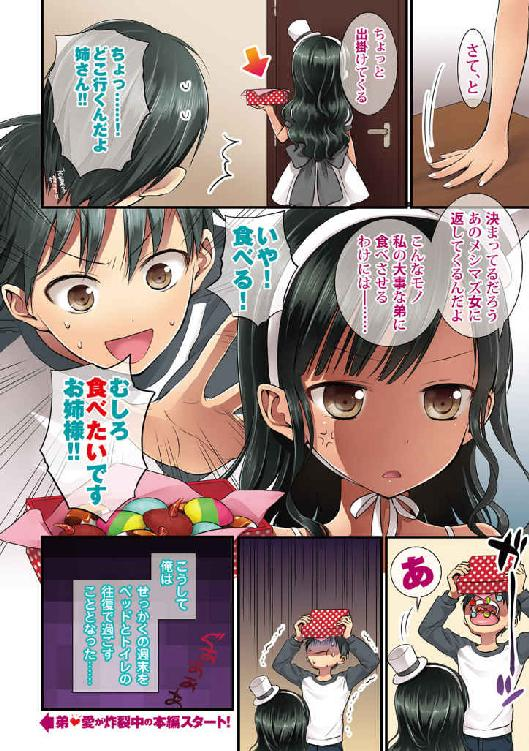
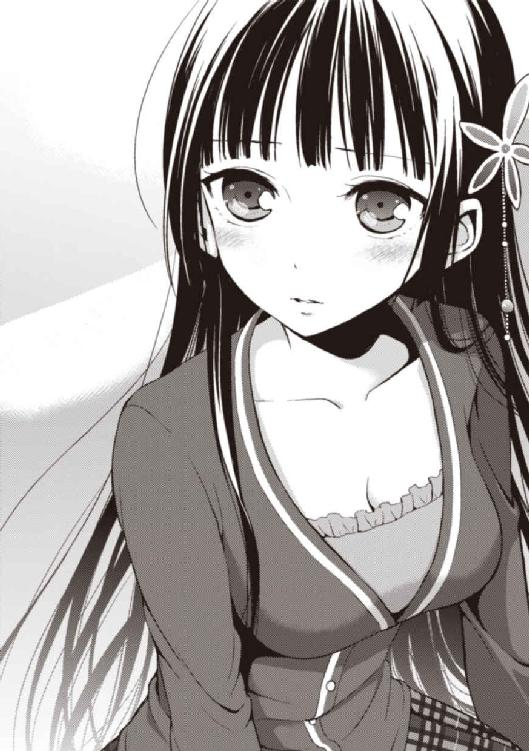

| 彼女たちのメシがマズい１００の理由２ (角川スニーカー文庫) | |
| 高野 小鹿 & たいしょう 田中 | |
| KADOKAWA / 角川書店 (2013) | |

彼女たちのメシがマズい100の理由2
高野小鹿

角川スニーカー文庫
本作品の全部または一部を無断で複製、転載、配信、送信したり、ホームページ上に転載したりすることを禁止します。また、本作品の内容を無断で改変、改ざん等を行うことも禁止します。
本作品購入時にご承諾いただいた規約により、有償・無償にかかわらず本作品を第三者に譲渡することはできません。
本作品を示すサムネイルなどのイメージ画像は、再ダウンロード時に予告なく変更される場合があります。
本作品の内容は、底本発行時の取材・執筆内容に基づきます。
本作品は縦書きでレイアウトされています。
また、ご覧になるリーディングシステムにより、表示の差が認められることがあります。
序 レッドvsゴールド
その言葉は一瞬の逡巡すらなく、香神紅緒の口から吐き出された。
「そんなこと言われても私、納得出来ないです」
明確な拒絶の言葉。
艶やかな黒の長髪、しっとりした雰囲気、穏やかな気性──一言で表すなら、香神紅緒は極めて「平和」な女の子だ。
けれど、この瞬間だけは、紅緒は普段とはまるで異なった表情を見せていた。
一方で、
「ほう。言い分を聞いておこうか？」
「わ、私の料理がマズいからって『いきなり明日から来るな』だなんて......そ、そんなの、いきなり過ぎると思います！」
「知ったことか。父上と母上が不在の時に、オマエのようなメシマズ女に台所を任せられるわけがないだろう。私は当然のことを言ったまでだぞ？」
俺、愛内葉介の姉貴......いや、姉さん──愛内龍子はそんな紅緒を苛烈な視線で睨みつける。
一触即発の空気。バチバチと、している。
なんだコレは。なにが起きている？ 俺の幼馴染みと姉さんが真っ正面からメシのことで口論している......何故？
どうして、こうなった？
実際、全ての発端は、うちの親父がイギリスに長期の海外赴任をすることになり、それにお袋まで付いて行くことになったことなのだろう。
つまり、一人息子である俺だけが日本に放置されることになったわけだ。
とはいえ、そんな状況で家事スキルを一切持たない普通の男子高校生である俺が生きていけるとはお袋も考えてはいなかった（事実、俺は「一人暮らし」をまともに維持することが出来ず、一度それを断念している）。
お袋は、とんでもない助っ人に話を付けていた。
容姿端麗・成績優秀・献身的と三拍子揃ったパーフェクト幼馴染み──香神紅緒。
そして、紆余曲折あった末、俺は紅緒に身の回りのことを見事に「お世話」されることになってしまった。
加えてイギリスからホームステイにやって来た従姉妹のリリィ＝アップルガースも同じ家で暮らすことになり、生活は彩りを増し、俺も滞りのない暮らしを送れるように──
ならなかった。
全くもって、ならなかったのだ。
シンプルだからこそ、あまりにも救いようのない真実が俺を待ち受けていた。
なぜなら、彼女たちの作るメシは、どうしようもなくマズかったのだから。
紅緒も、リリィも、それとクラスメイトである花菱カロンも含めて、この二ヶ月の間で俺と深く関わった女の子達は、その誰もが極めて個性的な「メシがマズい理由」を持ち合わせていたのである。
特に紅緒のメシマズっぷりは他の追随を許さなかった。
だが、今の俺の生活に彼女の存在がなくてはならなくなっていたことも紛れもない事実だったわけで......結果として、俺はメシ以外には何の不自由もない、ぬるま湯のような平穏に浸っていたのである。
海外から帰国した姉さんが家に帰って来る──ほんの数分前までは。
「大体だ。オマエがどう取り繕おうとも、作る料理がマズい──その事実は消せないのではないのかな？ 葉介はまだ十六だ。育ち盛りという奴だよ。私には姉として弟にまともな食事をさせる義務があるのさ」
身体は小中学生と見間違うように小さく、そして細い。
けれど、そこには何というか計り知れないパワーがある。瞳、表情、口調──そのどれ一つを取っても溢れんばかりの生気に満ちている。
ウェーブの掛かった黒髪、白を基調としたゴシックドレス、そしてココア色に日焼けした肌──佇まいは悠然と、それでいて凛として、猛々しく。
それが俺の七つ上の姉、愛内龍子だった。
オーストラリアから帰って来た姉さんは、今日からこの家に住むつもりらしい。
そしてそんな姉さんが紅緒にぶつけたのが『まともに料理一つ作れないメシマズ女に私の可愛い弟を任せるわけにはいかない。明日からは、もう来なくていいぞ』という門前払いの言葉だったのである。
「ちょ、ま、待てよ姉さん！ そんなの一方的に言われても困──」
黙っているわけには、いかない。
堪らず俺は睨み合う二人に口を挟もうとするが、
「葉介、喚くな。黙っていろ」「ごめん。葉介は口を出さないで」
「......えええ」
見事なまでに一蹴されてしまったのである。
しかも姉さんだけではなく、紅緒にまで。
姉さんの方だけを見て、紅緒が表情を歪め、苦々しく言った。
「龍子さん、昔と全然変わってないです......。やっぱり私に物凄く厳しくて......小学校の頃も散々いじめられましたし......！」
実際、紅緒は龍子姉さんに滅茶苦茶嫌われている。
姉さんは生粋のいじっめ子──というよりも王様体質で、高校在籍時は生徒会長や空手部の部長をやり、今と全く変わらない外見で学校に君臨していたと聞いている。
そして、昔から紅緒と姉さんの相性は最悪だった。
小さな頃の紅緒は今以上に平和的で、今以上に吞気で、常に俺の後ろをトコトコ付いてくるような、おっとりした女の子だった。が、基本的に人の心がない姉さんは、そんな紅緒を事あるごとに泣かしまくっていたのである。
──二人には、数年前からの因縁がある。
「ふん。そういうオマエは無駄に色々とデカくなったようだが──どうも中身は大して変わっていないようだな。まぁ、いい。さて、香神。さっさと出て行って貰おう」
「うっ......」
「私が帰って来た以上、オマエのようなメシマズ女がこの家に出入りする理由はなくなったということさ。潔く家に帰って、不貞寝でもするがいい」
自分よりも十五センチ以上背の高い紅緒を尊大に見上げながら、姉さんが決定的な言葉を撃ち出した。が、これに紅緒はバッと顔を上げて、
「だ、だったら！ まず先に──食べてみてくれませんか？」
一つの、懇願をした。
「龍子さんの言ってることは何も間違ってないです。だけど──私の料理が『マズい』と、実際に食べもせずに断言されてしまうのは納得出来ないです。料理なら、今日皆のために私が作ったものがあります。決めるのは、それを食べてからでも遅くないと思うんです」
それは理論的であると同時に──思いっきり、首を傾げざるを得ない台詞だった。
待て。
待って、欲しい。冷静に考えろ。今の紅緒の台詞には、凄まじいツッコミどころがあるのではないだろうか。
そりゃあ単純にやり取りだけ見れば、バッチリ決まっている。
完璧だ。料理を食べずに、料理下手と決めつけられては本人としても堪らないだろう。筋は通っている。通っているが............？
「......ふむ、」
じぃっと紅緒を見つめていた姉さんが、小さく頷いた。
「いいだろう。そこまで言うのならば、馳走になろう。確かに実際に食べもせずにオマエの料理がマズいと決めつけるのは浅はかだったとは思うからな──だが、」
自身のウェーブ髪を搔き上げる。まるで獲物を狙う獣のような鋭い視線が紅緒に向けられる。姉さんが囁くように言った。
「生半可なモノで、私を満足させられるとは思わないで貰おう。断っておくが、私はオマエを気遣ってやるつもりは一切ない。感じたままのことを言う。それでもいいな？」
「大丈夫です」
紅緒が答える。
「自信作ですから」
「......」
............ヤベェ。
二人のやり取りを見て、俺は舌を巻く。
これが紅緒だ。どんな恐ろしい料理を作ったとしても、本気で本人はそれをウマいと思っているのが香神紅緒なのだ。それが俺の幼馴染みなのだ。
そして、俺は知っている。知り過ぎている。
──そんなことを言って、紅緒がちゃんとウマい料理を作れたことなんて一度もないという絶望的な事実を。
俺と姉さんはテーブルに座り、紅緒が料理を出して来るのを待つことになった。ちなみに、昔から姉さんの席は大体俺の左隣と決まっている。
「む」
冷凍庫へ土産に買って来た肉を収納した後、席に着いて感慨深そうに久々の実家を見回していた姉さんが、不意に声を漏らした。
「驚いたな。随分と綺麗にしているじゃないか」
綺麗に？
「へ。そうか？ ずっと大して変わんねぇと思うけど」
「いや。母上がいた頃よりも、間違いなく掃除が隅々まで行き届いていると思うぞ。そもそも母上は料理以外は存外に適当な人だからな」
............改めて見てみると、急に辺りが妙に片付いているように思えて来た。
──いや、間違いなく整理されてないか？
窓もテーブルも床もピカピカだし、戸棚の皿も整頓して並べられている。調理器具も非常に分かりやすい配置になっているし、調味料入れにも汚れ一つ付いていなかった。
紅緒の奴、いつの間にこんなことまで......？
「家事は、香神が全部やっていたのだったな」
「ああ、料理だけはリリィもやるけど」
「なるほど。では、オマエは何をやって............いや、」
言ってから俺の顔をじぃっと見つめ、しばらくした後、姉さんが頭を振り、大袈裟なため息をついた。
「はぁ......何の意味もない質問だったな。失言だ。忘れろ」
「な、なんだよソレ！ せめて訊くぐらい──」
ジロッと怒気を孕んだ眼差しで、姉さんが俺を睨みつけた。
「阿呆が。どうせ何もやっていないのだろうが」
「......う」
「それ見たことか。この姉は哀しいな、大層な堕落ぶりだよ」
「ね、姉さんだって、学生の頃は人に言えるほど家事やってなかったじゃねぇか！」
「それでも、家の手伝いぐらいはしていたよ。さすがに『出来ない』と『やらない』の違いぐらいは理解して貰いたいな。そもそもだ。別に料理の一つや二つぐらい覚えればいいと思うのだがな」
「なっ、なんつー勝手な言い草を......！ ガキの頃に『男は料理なんてしなくていい』とか言って、俺が母さんから料理教わるの邪魔したの姉さんなのに......！」
「ああ、それは悪いと思っているよ。ただ、後に覚える機会はいくらでもあったと思うぞ。特に一人暮らしをしていた時なんて、絶好のタイミングだろうに」
「うぐっ......」
実際、俺は一人暮らしをしていた時ですら、まともに自炊をしようとしなかった。
もちろん、姉さんに古風な理念を叩き込まれたことも理由の一つではある。
だが、やはり最初の一歩を踏み出す決意が付かなかったのも大きい。結果、特に何もしないままズルズル今日まで来てしまったわけで......。
「......『男子厨房に立たず』か。今はもう、完全に死語だな。そういえば私が連載を持っている雑誌でも、その、なんだ。『料理男子』という奴か？ この特集はかなり人気があってな。今度バックナンバーを持って来てやろう。参考にするといい」
龍子姉さんが感慨深げに言った。姉さんが記事を書いている雑誌は複数あるはずだが、察するにこれは若者向けメンズ誌の「ＢＡＲＯＱＵＥ」の話だろう。
ここで姉さんは、途轍もなく姉さんらしい連載を持っている。
男顔負けも良い所の内容だ。本来、女性ライターがやるようなネタではない。だがソレを姉さんは余裕でこなしてしまうものだから、連載もかなりの人気があるとか。
──しかし、姉さんは何も間違ったことは言っていない。
なにしろ俺は、この一ヶ月怠惰の限りを尽くし、紅緒に頼りまくり、そして出て来るメシをマズいマズいと言ってばかりいたわけで──って、おい。
オイ。オイオイ。
............改めて考えなくても、俺って............相当な駄目人間じゃね......？
「お待たせしました、龍子さん！ お口に合えばいいのですが！ あとスープもあるんで、すぐに持って来ますね！」
──と、俺が自分自身のアレさ加減に自己嫌悪を覚え始めた時だった。キッチンで作業を進めていた紅緒が、料理の皿を持ってこちらへやって来たのである。
愛用の真紅のエプロンをはためかせながら、紅緒はクリーム色のテーブルクロスの上に大皿を置く。俺と姉さんは揃ってそれを覗き込み、そして。
「ほう」
「えっ」
──全く異なる感想を漏らした。
「エビフライ、か。中々よく出来ているように見えるが」
「見た目が普通だ......!?」
どう見ても普通のエビフライが、そこにはあったのだ。
エビフライ。
つまりはブラックタイガーなどのエビを小麦粉、卵液、パン粉を付けて揚げて作る日本の代表的な洋食料理だ。そんなエビフライが白い大皿の上にズラっと並んでいる。こんがりとキツネ色の焼き目が付いていて、傍目から見ると普通にウマそうだ。
......まぁ、むしろ、俺にはソレが逆に危険に思えたのだけれども。
唐突だが、ここで毒キノコを例に挙げてみよう。
あらゆる毒キノコが刺激的過ぎるビジュアルをしているわけではなく、中には一般的なキノコと変わらない外見でありながら、恐ろしく危険なモノも存在する。
そして。
──香神紅緒は「進化」はするが、別に突然「覚醒」したりはしない。
俺は、誰よりもその事実を熟知している。きっと本人よりも。
「む。ひどいよ、葉介。私だって、いつまでも結果を出せないでいるわけじゃないんだからね。日々進歩しているんだよ？」
「いや、確かに進歩してるのは間違いないと思うけどよ......」
などと、俺の反応があまりお気に召さなかった様子の紅緒がぷぅっと頰を膨らませて不満げに言う。
「とにかく！ 葉介は今はいいの！ 龍子さん、お願いします」
「ああ。と、その前に何かソースは......」
テーブルの上を見回していた姉さんがスッと目線を上げて、冷蔵庫の方を見やった。
言われてみると、ソース類が何も食卓に出ていなかった。
普通、エビフライはタルタルとか中濃ソースを掛けて食べる料理だ。さすがに何も付けずに食べるのは、少々味気ないようにも思えるが──？
「あっ、大丈夫です！ ソースは要りませんから！」
紅緒が満面の笑顔を携えたまま、よく分からないことを言った。自然と、俺と姉さんの目が合った。互いの沈黙が雄弁に疑問を語る。
いや──ソースって、普通はエビフライに必要じゃね？
「......始まった、ということかな」
姉さんの表情にスッと影が差した。喩えるなら、まるで毛虫が皿の上に並べられているのを見た時のような露骨に厭そうな顔をしている。
そういえば、もしも毛虫に衣を丁寧に付けて揚げたら案外エビフライみたいな見た目になるかもな............って、こんな想像するんじゃなかった。キモ過ぎるわ。
「まぁ、いい。頂くとしよう」
顰めっ面のまま、姉さんが揚がったエビフライを大口で頰張った。
そして、咀嚼。
そして、瞠目。
そして──？
「............」
そして、姉さんは完全に沈黙してしまう。
空気が凍りついた。
音は、鳴らない。この気まずい静寂をブチ壊してくれるＫＹな乱入者も訪れない。だから姉さんが口を開くまで、俺達はザラついた空気に晒されることしか出来なくて。
「......香神、」カウントダウンの感覚がビリリと麻痺するぐらいの絶妙な沈黙を経て、姉さんがぽつりと言った。「──一つだけ、やって貰いたいことがある」
ドスの利いた低い声がズン、と空気に浸透する。
姉さんが言った。
「オマエも、食ってみせろ」
ギラついた獣の眼差しが、紅緒を射抜いた。
──「逆鱗」だ。
龍の喉元に生えるという特別な「逆向きの鱗」に触れた時、龍は大激怒する──つまりは「逆鱗に触れる」。別にこの故事から名前を取ったわけではないのに、うちの姉はキレると死ぬほど怖い、まさに龍のような人だった。
ゾッと俺の背中に底冷えしたような痺れが走る。
俺は思う──これはヤバい。いけない。逃げたい。逃げ出したい、と。
半ば、本能的に。
しかし、基本的に鈍感な紅緒はとても素直に頷いて、
「あ、はい。分かりました」
箸で一尾を摘まみ、パクパクパクとそのエビフライを一瞬で食い尽くした後、深々と頷いて、ド真面目な表情で言った。「我ながら、すごくおいしいと思いますね」
「良い、食いっぷりだな」
「ありがとうございます。よく言われます」
「はぁ......皮肉のつもりだったのだがな」
姉さんが額を押さえ、深々とため息をつく。
「そうか......そういうことか。こういうカラクリがあったのだな......」
続けて、呆れた様子でぽつりと「想像していたよりも、これは相当だな......何がどうしてこうなるのだ......？」と呟いた。
──俺もそう思うよ、姉さん。
だけどさ。想像の上を行く──進化する料理。紅緒の料理は、常に俺達の半歩先を進んでいる料理なんだ。もっとも、思いっきり逆方向ではあるけれど。
と、ここで姉貴がギロッと俺を睨みつけると、
「葉介。何を無駄に満足げな表情をしている。オマエも食え」
「へ？」
「元々は、オマエとリリィのために作った料理なのだろう、これは。そうだな、香神？」
「あ......は、はい。そうです」
「だそうだ。それに私の言いたいことを理解するには、食べてみるのが一番早い」
「ええ......先にそのリアクションを見せられてからかよ......いや、食うけどさ。きっとこうなるんだろうなとは思ってたし......」
──結局、こうなるようだった。
まぁ紅緒が俺やリリィのために作ってくれたものを、事情があるとはいえ全部姉さんにやってしまうのも座りが悪いと思っていた。
味は......うん、味は............ええと──いい。
とにかく、今は食うのだ。
「じゃあ、お言葉に甘えて......いただきます」
そして、俺はエビフライを口に運んでみた。
運んでみた。
運んでみた......。
──運んで、しまった。
「は......は、はぁ......!?」
激しく現実逃避を始めるが、料理において味や見た目ほどは重要視されないものの、決して無視出来ない要素として俺は音が存在すると思う。
エビフライにとって最も正解に近い音がおそらく「サクッ」と「プリッ」の二つであることは、誰にも納得して貰えるはずだ。衣のサクサク感。エビの肉圧と弾力。ウマいエビフライにはこの二つが必要不可欠に違いないのである。
では、紅緒のエビフライの効果音が、いったいなんだったかというと......。
「あ、ありえねぇ......！」
サクッ。
ニュルリ。
──エビフライとしては、あまりに不適切な音。
「中に......味噌が入ってる......」
ミソ。ＭＩＳＯ。みそ。
味噌。
エビフライの中に味噌が入っている──この衝撃をセンセーショナルな言葉にすることは難しい。俺の語彙では『すごく......みそです......』ぐらいのことしか言えそうにない。
なにしろ、どうしようもなく味噌なのだ。
本当に味噌の味と食感しかないものを、いったいどうやって飾り立てればいいのか。これならば確かに別のソースはいらないはずだ。だって味噌があるし。
「......あっ」
と、ここまで考えてから俺はとんでもない事実に気付いた。衝撃的過ぎて、すぐに気付けなかったのがおかしいと思うくらいだ。
これは、中に味噌が入っている、だけではない！
「つぅかこれ、エビの身が入ってなくて中身が全部ミソじゃねぇか!? エビフライじゃなくてミソフライじゃねーかよ！」
「そうだよ？」
「『そうだよ』じゃねぇえええええええ！」
いつものように特に取り繕うこともせず、素直に紅緒が認めてしまったため、行き場を失った俺のテンションだけが跳ね上がる。
俺だって分かっている。こんなに大声で吠えるのは、みっともないことだと。
だが、そうせずにはいられないのである。
なにしろ、それは──エビの身を全てそぎ落とし、エビフライの形に練り込まれた味噌の塊に衣が付いてフライにされたものだったのだから！
「ないわ......これはない......ミソフライとか......」
なにしろ味噌の塊である。甘過ぎるとか塩辛過ぎるとか、そういうことではない。
──とにかく、味噌過ぎる。
その一言に尽きる。
「ううん。これは、ミソフライって名前じゃないんだ」
「なにっ......!?」
紅緒が不意に言った。
「私的には『エビフリャー』ってカンジかな。名古屋風に」
「名古屋......だと......」
「私は名古屋には行ったことないけど、名古屋の人って何にでも味噌つけたり、かけたりして食べるんでしょ？ それと『揚げバター』とか『揚げアイス』ってあるじゃん。バターやアイスの塊をそのままフライにした奴。バターやアイスを揚げることが世間的に許されるなら、別に味噌を揚げてもいいと思ったんだ。私好きなんだよ、味噌。あ、このシチュエーションだと違うかな。好きなんだぎゃー」
ほわほわと笑いながら、紅緒がわざわざ名古屋弁（？）で言う。
まさか、この幼馴染み......名古屋の方々が日常的に味噌を生食しているとでも思っているのでは......!? ジャムを直接食べるかのように、名古屋人は冷蔵庫の味噌を指で掬ってペロペロしていると!?
これが名古屋だ──とでも言いたげな紅緒の満足げな表情。名古屋の方が聞いたら、キレられて、しゃちほこを投げつけられてもおかしくない勘違いっぷりに違いない。
「葉介。私がどれだけ呆れたか、これで分かったか？」
「うっ......」
ドッカリと椅子に背中を預けた格好で、姉さんが言った。綺麗に日焼けしたココア色の肌──そのこめかみに、青筋が浮かんでいる。
何も言い返せない俺から視線を外した姉さんは、真紅のエプロンの裾を握り締め、神妙な顔つきをしていた紅緒を睨みつける。
姉さんが、ゆっくりと口を開いた。
「──オマエも何となく察しは付いていると思うが、これでは、お話にならない」
「っ──」紅緒が頰を強張らせ、肩を一度大きく揺らした。「そ、そんな......！」
「......ここでショックを受けるのが、また絶望的だと思うのだがな」
姉さんが苦笑しながら、皮肉るように言う。
そう。
紅緒はいつだってマジだ。マジで自分でおいしいと思うものを作っていて、マジで食べた相手においしいと言って貰いたがっている。
そんな紅緒に「例の言葉」をぶつけるのは、覚悟がいる。食べた瞬間、誰もが同じことを思ったとしても、紅緒にとって、その言葉は重いのだ。
本当に、重い。
──けれど、そんな事情を姉さんが理解しているわけがなくて。
「香神。オマエの料理は、どうしようもなくマズいよ。感動するほどにな」
投げ込まれたのは端的で、あまりにストレートな言葉だった。
呻き声すら、漏れなかった。
俺も紅緒も、無様な言い訳を返すことすら出来ず、完全に黙り込んでしまう。
それは、つまり......初めて外部からもたらされた、紅緒の料理に対する一切容赦のない評価だったのだから。
「どうやらオマエの味覚は、相当幸せなことになっていると推理するが......間違いではないな？」
「えと、はい......どうもそうみたいです......」
「つまり、オマエには一応は自覚がある、ということだ。自分がメシマズ女である、ということにな。そして、そのメシマズっぷりをどうにかしたくて藻搔いている──」
「は、はい......そうです......」
「なるほど。では、一つだけ質問をさせて貰おうか。正直に答えろ」
トン、と姉さんが指先で一度、テーブルを叩いた。
「香神──何故、オマエはレシピ通り作ろうとしないのだ？」
「「......！」」
俺と紅緒が揃って息を吞んだ。なにしろ──それは、俺達にとってとある事実を激しく想起させる問い掛けだったからだ。
姉さんが続ける。
「確かに、オマエの味覚は大問題なのだろう。だが、それならば、それなりの対処法というモノがあると思うのだが？ つまり『先人の知恵を借りる』ということさ。それがレシピを見るということだ。幸いこの家には、母上が印税欲しさに量産したレシピ本が山のように転がっている。情報元には事欠かないはずだよ。本の通りに作ったとしたら──失敗することは有り得ないはずだ。違うか？」
恐ろしいほどの正論だった。まさに「メシマズ女殺し」とも言うべき、反論の余地を一ミリも残さない完璧な主張と言えるだろう。
──けれど、その論理は通らないのである。
ここまで正し過ぎる主張は、逆を言えば「理詰めで考えれば誰にでも思いつく可能性がある」ということの裏返しだ。
要するに「俺も昔、同じことを思ったことがある」のだ。結果は......そりゃあ現状のオリジナルレシピを全力で作りまくる紅緒がいるのだから、事情は察して欲しい。
恐ろしいことに、その一ミリ以下の穴を見事に擦り抜けて来るのが、この『地上最強のメシマズ幼馴染み』という奴なのだから。
「それは、ですね。実は、その色々とありまして......」
「いや、きっと信じて貰えないっていうか......」
しどろもどろになりながら弁解する俺と紅緒。が、そのあまりにもハッキリしない態度は、基本的に短気な姉さんを苛つかせるには十分だったらしくて、
「いい加減にしないか!!」
「うっ......」「きゃっ！」
「──話にならない。私はくだらない言い訳を聞くつもりはないのだ。それを二人でグダグダと......オマエ達と来たら......」
まさに怒髪天だった。鬼のような形相で俺達を睥睨し、姉さんが乱暴に言った。
「香神。さっさと出て行け。オマエはチャンスを生かせなかった。これで終わりだ」
「わ、私は......！」
完全な最後通牒。
紅緒の声が震えていた──それに気付いた瞬間、俺は大して自分の考えを纏めてすらいないにも拘わらず、姉さんに無謀な勝負を挑んでいた。
「お、おい！ 姉さん！ あんまりだろ！ つぅか、俺の食うものぐらい俺が決めたっていいじゃねぇか！ 指図される理由なんてねぇよ！」
「今更な意見だな。いいか。父上と母上が不在である以上、この家で最も強い決定権を持っているのは誰だと思う？ 弟のオマエか？ 違うだろう？ 愛内家の長女である、この私だよ。つまり、保護者と言ってもいい。オマエ達が私の庇護下にある限り、この家のことは私が決めるのさ。文句は言わせん」
「ンなっ......む、無茶苦茶だ！」
「生憎と、私はそういう人間だよ。十分理解していると思っていたが」
あまりにも乱暴な理屈だ。けれど俺達を睨みつける、その黒い双眸には、全ての理屈を有無を言わさず押し通してしまうような特別な雰囲気があった。しかも、だ。
「......葉介、ダメだよ。これは私と龍子さんの問題なんだ。葉介がそう言ってくれるのは嬉しいけど、それじゃあ、私が情けなさ過ぎるよ」
だから、と。
小さく口ずさんで、紅緒が言い放つ。
「葉介は、口を出さないで」
「なっ......！」
まだそれを言うのか、コイツは。紅緒まで俺がこの問題に踏み込むことを突っ撥ねるって言うのかよ。そして──俺が言葉を失った、まさにその瞬間だった。
ガチャリ。
少し遠い。シン、とした硬質な雰囲気を携える廊下の向こう。玄関口。
──扉の開いた音がした。
けれど、チャイムは鳴らない。玄関を開いて入って来る──それが当たり前であるかのようにドアシリンダーは回り、そして。
「ただいまですー♪ ムムム、みたことのないブーツがありますネ。誰かきているのでしょうか！」
などと、騒がしくも愛らしい呟きと共に、彼女が現れた。
否──帰って来た。
「すいません！ ヨースケ！ ベニオ！ クラブがながびいて、かえるのがとても遅くなってしまいました！ ......オウ？」
金色の髪に碧色の瞳。身体は華奢で小柄だが、身体付きは非常に豊満で、一言でいえば今にも蕩けてしまいそうなダイナマイト具合。
天真爛漫にして、筋金入りの英国淑女。
俺の従姉妹にして、愛内家の同居人──リリィ＝アップルガース。
そして。
「ァ......！ リューコ？ 本当に、リューコですか？」
「ああ、見ての通り──」
リリィの問い掛けに、姉さんが頷きかけた瞬間だった。それより一瞬早く姉さんの存在を認識したリリィは、パァッと太陽のように眩しい笑顔を浮かべると、
「リューコ！ リューコがいます！」
物凄い勢いで──姉さんに向かって、飛翔した。
「げっ！」「うわっ！」
あまりに迷いのないリリィの行動に衝撃を受けた俺と紅緒は、瞬時に凍りついていた空気から解凍され、揃って呻き声を漏らした。
リリィは感情が昂ぶった時、親しい人間に対して、咄嗟に抱きついてしまう「抱きつき癖」がある。しかも、困ったことにコレは単純にハグするだけではないのである。
リリィは、ダイビングするのだ。
高く。速く。遠く。
その破壊力たるや、それなりに体格の良い男子高校生である俺ですら受け止めきれないこともある魚雷のような一撃である。なにしろ、普通にメートル単位で空を飛ぶのだ。
着弾した瞬間の衝撃は、凄まじいの一言だ。
そんなリリィのダイビングハグを、小中学生程度の体格でしかない姉さんに向かってやるなんて、それはもうとんでもないことに──
「リューコリューコ！ あいたかったです！ 久しぶりです！」
「フフ。オマエのその癖は、相変わらずだな。だが、本当に大きくなったものだな。背もちゃんと私以上にあるじゃないか」
「ハイ！ ワタシ、前よりもとても大きくなりました！ でも、リューコがしっかりワタシをうけとめてくれて、とても嬉しかったです！ さすがリューコです！」
「「......」」
──は、特にならなかった。
飛び込んで来たリリィを姉さんは慣れた様子で受け止め、何の問題もなかったかのようにリリィと談笑し始めていた。
いや、確かに姉さんがあの外見でメッチャタフなのは昔からそうだし、高校時代に空手で全国行ってるけど、俺も高校生になって大分力が付いたと思っていたのだ。それでも、まさか向こうの方がまだまだ上だとは......。
──なんかもう、俺ってば全然ダメダメじゃないか？
姉さんには気圧されっぱなしだし、紅緒のことをどうにかすることも出来ないし、リリィを完璧に受け止めてやることも出来ないし......。
あああ......。
「オウ？ ただいまです、ヨースケ。とても切ない顔をしているようにみえます。なにかあったのですか？」
「ああ、分かっちゃう......？ 色々とね、悲しいことがあったんだよ......色々と......」
「リューコがかえってきたのにですか？ 不思議です」
ゲッソリしていた俺を見て、首を傾げる。リリィが言った。
「結局、なにがあったのでしょう。そういえばワタシ、お腹がぺこぺこです。恥ずかしいのですが、とてもごはんがたべたいです。ワタシの分、のこっていますか？」
「「「......」」」
事情を知る三人が顔を見合わせ、そして黙り込む。
唯一、頭上からクエスチョンマークを飛ばすリリィだけが、見事に味噌の匂いが漂う我が家の中で純粋無垢だった。
◇ ◇ ◇ ◇ ◇ ◇
そんなわけで、リリィに姉さんが帰って来てからの出来事を、主に俺と紅緒でザッとではあるけれど説明することになった。
最初はリリィもニコニコだった。
なにしろ姉さんは高校卒業直後、イギリスで一年近い期間過ごしている。
二人は十分な面識があるのである。
だが、そんな数年ぶりの従姉妹との再会で、笑顔一色に染まっていたリリィの表情が俺達の状況説明が進む度に──曇り始めたわけで。
そして最終盤。
姉さんが紅緒に最後通牒を突き付けたところまで行った辺りで、リリィの我慢は限界に達したようだった。リリィが声を張り上げる。
「ワタシはイヤです。ベニオともうあえなくなってしまうなんて！」
「ええと、会えはする、んじゃないかな......？ が、学校とかなら......？」
「だめです！ ワタシ、もっとベニオと一緒にいたいです！」
リリィが不満の色を一切隠さず、ぷぅっと頰を膨らませて言い放つ。
一方で紅緒は目が虚ろで答えもいまいちハッキリしない。
ＫＯされたボクサーみたいだ。
「リューコ！ これはいったいどういうことなのですか！ ワタシのしらないうちに、ベニオを家からおいだしてしまうなんてひどすぎます！」
リリィが姉さんに詰め寄る。
そりゃそうだ。姉さんが全てを決めてしまうことにリリィだって不満を覚えるはずだ。
けれど、俺は姉さんがどれだけ頑固な人物であるかを十分過ぎるほどに知っている。
──正攻法では、ダメだ。
何か策を考えなければ。一度「こうする」と決めた姉さんは梃子でも動かな......。
「安心しろ。私も一度の機会で全てを決めてしまうのは厳し過ぎるのではないかと思っていたさ」
「えっ」
「ほ、ほんとうですか！」リリィが瞳を輝かせる。「まだ決まりではないのですか!?」
「ああ。本当だとも。噓じゃないぞ」
「ちょ、は......？ え......？」
いきなり何言ってんの!? さっきまでと全然言ってること違うんですけど!?
おかし過ぎだろ。うちの姉がこんなに物分かりがいいわけない！
「......おい。どういうことだよ」
尋ねる。
一方、リリィは今度は紅緒に抱きついてキャッキャと嬉しそうにしている。
が、リリィに抱き締められている紅緒も、一瞬で状況が変化しすぎて、俺と同様、呆然とした表情を浮かべていた。姉さんは少しだけ俺を見上げて、肩を竦めると、
「何も不思議ではないだろう──なにしろ、リリィに頼まれたのだからな」
「ええええええ」
「どうしようもない愚弟のオマエと他所者の香神と違って、リリィは私の可愛い従姉妹だぞ。オマエ達と同じような扱いのわけがないだろうが」
まるで当たり前のように、平然と言い放つ。
なに、この露骨な待遇の差！ 娘にだけ異常に甘い頑固親父かよ！
いや、そりゃまぁ、リリィに甘いのは仕方ないと思うけど。俺だってリリィが何かお願いしてきたら、進んで叶えてあげたいとか思っちゃうだろうし......！
「──ただし、代わりに一つだけ条件があるわけだが」
が、ここで姉さんは、とんでもない交換条件を口にしたのである。
俺と紅緒を順繰りに眺め、姉さんが厳粛な表情で言った。
「次もまた無様な料理を作った場合、香神には葉介の『幼馴染みであること』を辞めて貰うとする。これが私がリベンジマッチを受ける条件だ」
「へ......？」
「お、幼馴染みであることを辞める......？」
............どういうことだ？
俺と紅緒が揃って首を傾げる。姉さんがすぐさま続けた。
「香神、オマエが葉介の世話をする最大の理由は『葉介の幼馴染みだから』の一点にあるはずだ。そうだな？」
「え......」
ぱちり、と紅緒がまばたきをして、チラリ、と俺の方を見る。
僅かに頰が紅色に染まる。
その後──少ししてから、紅緒は曖昧に頷いた。
「それ以外にもあるとは思いますが、そ、そうですね。ひとまずは、そうと言えなくもないとは思います......た、たぶん」
「これまた微妙な返事だが......まぁ、いい」
姉さんは苦笑する、そして。
「つまり、オマエ達は幼馴染みとして育ったが故に良好な関係を築いているわけだ。だがな。考えても見ろ。もし二人が離れたところで育ったとすれば、今のオマエ達の関係は成立していたか？ 違うだろう。きっと──赤の他人だったんじゃないかな？」
「あ......」
ここまで言われて、ようやく俺は悟った。
確かに姉さんはリリィには甘い。だが──それ以上に、紅緒に対しては恐ろしいほど厳しいということを。
「先程、私はオマエからこの家に出入りする権利を奪った。だから、次はこの十七年で葉介との間に築いた『関係そのもの』を賭けて貰おうか。もちろん、たとえ負けたとしても私にはオマエ達を四六時中監視することは出来ない。するつもりもない。私はそこまで暇人ではないのでな。所詮、口約束だよ。ただな──」
ニッ、と姉さんが口端を歪めた。
「香神、オマエは途轍もない真面目ちゃんさ。私はそれを知っている。だからそうなれば、バカ正直なまでに私との約束を守ってくれると確信している」
「っ──お、おい！ 姉さん、滅茶苦茶過ぎるだろ、それは──！」
「何度も言わせるな、葉介。これは私と香神の問題なのだよ」
姉さんが俺を一蹴する。そして、顔面を蒼白に染めて唇を食いしばっている紅緒に向けてたおやかに笑いかけると、
「──少し、昔話をしよう。葉介が生まれた時、私は七歳だった。そしてその時の私は生まれたばかりの小さな弟を見て、こう思ったのさ」
クスッ、と小さな笑い声を溢した。
「『これは、私のだな』と」
「......！」
「それ以来コイツはずっと私のものなんだ。タダでくれてやるつもりはないな。売り払うつもりもない。もしも欲しいのならば──奪うしかあるまい？」
紅緒だけを見つめながら、姉さんの指が黒い髪を搔き上げる。
「............龍子さん、」
そして紅緒が口を開く。けれどそれは、この明らかに不利な条件に異議を唱えるようなものではなくて。
「やります。やらせて下さい、龍子さん」
──ひたすら真っ直ぐな答えだったわけだが。
こうして、俺の生活は、次なる局面を迎えることになる。
幼馴染みと、姉とメシ。
彼女たちの板挟みになり、早くも俺の明日は見えなくなっている。
けれども、やっぱり俺はまだ気付かない。
今回の一件が、最終的にとんでもない形へと流れ着く、ということを。
※この後、紅緒がもう一つ用意していた、エビの身をふんだんに使用した「超濃縮味噌ポタージュ（半流体）」は、お腹を空かせていたリリィと俺で大変おいしくなく頂きました。
一 そして続く日常
翌日。昼休み。二年五組の教室にて。
何だかんだで最近は男女分かれて食べる機会も多かったのだが、その日は久しぶりに五人で昼メシを取っていた。
「──素晴らしいな、それは」
「全っ然、素晴らしくねーよ......」
昨日何があったのか事情を知らない二人に話し終えた時、最初に反応したのは、修羅場を愛する俺の友人、藤見川冥だった。
傍目にはクール眼鏡野郎にしか見えない冥だが、その心根は非常に熱い。
具体的にどれくらい熱いかというと、修羅場相手に見せつける目的で紅茶の中に剃刀を入れてしまう過激なアニメを絶賛するあまり、自分でもちょっと試してみたくなって、その剃刀ティーを実際に飲んで唇を切った経験を持つ相当におかしい奴だ。
と、イライラしながら答えた俺に冥はすまし顔で、
「何故だ？ 姉妹を交えた『嫁姑戦争』の亜種じゃないか。趣き深いぞ。しかも、葉介がまるで相手にされず、無能で無力っぷりを発揮してる辺りが最高のスパイスだ」
「うっせーよ！ す、好き勝手言いやがって......！」
「そうです、メイ！ あそびではありません！」
俺の呻きに、いつものように昼食としてクリスプス（今日はマーマイト味。マーマイトとは大雑把に説明すると、「分厚く削られた油の燃えカス」とよく似た味を持つと噂される、英国で最もポピュラーな食べ物の一つだ）を食べていたリリィも同調する。
が、ここで冥は眼鏡のブリッジをクイッと持ち上げると、
「アップルガースさんは、どうやら少し勘違いをしているようですね」
心外そうな面持ちで言い放つ。リリィが目を丸々と見開き、首を傾げた。
「ムム？」
「修羅場は──遊びなどではないんですよ。マジなんです。今のオレにとって、葉介の今の状況は心の底から羨ましいシチュエーションなんですよ。それだけは伝えたかった」
「ナ、ナントッ......」
リリィが冥の言葉を真剣に受け取り、息を吞んだ。なーにが遊びじゃない、だよ。
ったく、調子の良いこと言いやがって......。
ああ、そうだ。そして、それ以上にアレなのがもう一人いたんだっけ──
「さすが、お兄ちゃん。本気になれる人ってカッコいい」
「......お前さぁ。どうなのよ、それ」
「なに、」隣から、冷ややかな視線が見事に突き刺さる。「愛内くん、邪魔しないで」
「思うんだけどさ。その感覚はおかしいぜ、花菱」
「は？」
ぎろり、と。
茶味を帯びたショートヘアー、恐ろしく悪い目付き、クールなように見えて実は全然そんなことのない色々と困った性格──花菱カロンが、心の底から不快そうな目でこちらを睨みつける。研ぎ澄ました刃のような鋭い視線が、俺を撫で切りにした。
「だって修羅場好きって普通、全然カッコよくないだろ」
「そんなことない」
「いやいやいや......」
「『カッコいい』という概念に愛内くんは基本的に無縁だから、きっと一生分からない」
花菱のブラコンっぷりには更に磨きが掛かっていた。
口を開けばお兄ちゃん、二言目にはお兄ちゃん、ついでに俺を見れば『愛内くんは邪魔でウザい消えて』──もうずっと、こんなカンジだ。
しかも、余計にタチが悪いのが。
「......つぅか、この配置がおかしいと思うんだよ」
「どこが、」眼を細め、周囲を見回しながら言う。「なにもおかしくない」
「おかしいわい。この前まで男サイドと女サイドに分かれて食ってたのに──なんで当たり前のように、俺と冥の間に花菱が座ってんだよ」
──ウザいウザいと言われながら、むしろ俺と花菱が会話をする機会が日に日に増加しているということだ。
その分かりやすい例が、俺達の座っている席の位置だ。
今まで俺達五人がメシを食う時は男と女サイドごとで向かい合って食べるのが常だった。
が、今回（思えば、花菱と冥が和解してから五人で昼食を取るのは初めてだ）は並んで机に座る気満々だった俺と冥の間に......何故か花菱が割り込んでいたわけで。
花菱が俺にジロッとガンを付けながら、言う。
「愚かな指摘。そもそも、あたしは愛内くんとお兄ちゃんの間になんて座っていない」
「は......？ それはどういう......？」
「お邪魔虫の愛内くんが、単にあたしとお兄ちゃんの隣にくっついているということ」
「おいコラ。完全に屁理屈じゃねぇか」
まるで俺が冥の隣にいることからして間違っているような口振りである。花菱は俺をスーパーに陳列されてる冷凍枝豆でも眺めるような無感情な瞳で見つめると、
「視点を変えることで見えて来る真実もあるというだけの話。下品で粗暴な愛内くんに影響を受けないように、あたしにはお兄ちゃんを守る義務がある」
「こ、こいつは......！」
話にならない。
実際、この前の一件で俺と花菱はそこそこ話せる仲にはなったのだが、それはつまり仲が良くなったということとは全く重ならない。
──兄に幻想を抱きまくっている花菱にとって、その兄に悪影響を及ぼしかねない（らしい）育ちの悪い友人である俺は相当に気に入らない存在らしいのだ。
とんでもないことだと思う。
最近の花菱は、俺への敵意を隠そうとすらせず、人の心を抉る言葉を平気でポンポンと撃ち込んで来るのである。下手に交流を積んだせいで、逆に遠慮がなくなってしまったわけだ。しかも主に向こうからこちらに接近して来て、それをやるから始末に負えない。
何もかもが酷過ぎだった。
「......なぁ、冥。お前の妹どうにかしてくれよ」
「ん？ ああ、別に問題ないだろう。可愛いものさ。それでだな、アップルガースさん。オレが思うに、今の『アップルガースさんだけが同居している』というシチュエーションは相当にウマいんだ。どうしても委員長には立ち入り出来ない領域というものが──」
頼みの綱の冥にも完全にスルーされる俺。
しかも、冥の野郎は激しくしょうもないことを俺の大切な従姉妹に吹き込もうとしていやがる。やっぱり、どう考えても冥の方が問題大有りじゃねぇか。
「ね、葉介。ちょっとちょっと。龍子さんのこと、なんだけどさ」
と、不意に今の今まで黙り込んでいた紅緒が話し掛けて来る。
ちなみに、紅緒の弁当箱は──まだ蓋が閉じられたままだった。
さっきから紅緒は弁当に手を付けず、真紅の水筒に入った謎の青黒い液体をちびちびと飲んでいるだけだった。
「っ......お、おう」
思わず俺は息を吞み、畏まる。紅緒の言葉に、不思議な重さがあったからだ。
昨日の一件の後、俺は紅緒とはまだまともに話をしていない。
姉さんが紅緒に提示した再戦の条件は、ハッキリ言って無茶苦茶だ。やはりもう挑戦を受けるつもりはなかったと考えるのが普通だ。
けれど、紅緒は迷うことなく首を縦に振った。まさか、やはり勝算が──？
「私、考えたんだけどね」
紅緒がジッとこちらを見つめ、本当に真剣な顔をして、言った。
「──龍子さんって、もしかしてお味噌は嫌いだったのかな......だとしたら、全然ダメに決まってるよね......困ったなぁ......」
首がガクンとなって、ずっこける。
そういう問題じゃねぇだろ！ あんな味噌フライ、毎日味噌を付けたり掛けたり食ってる名古屋人だって大体拒絶反応起こすわ！
「......お前さぁ。言っとくけど、姉さんはアレで好き嫌いは全くないんだぜ」
「そ、そうなの？」ぱちり、と紅緒が大きくまばたきした。「そういえば、何だかんだで龍子さん、私の料理、手を付けた分は全部食べてくれた......」
「だろ？ そもそも姉さんは賞味期限が二週間過ぎた牛乳だって飲むし、ゲテモノも行けるし、半分くらい黄色くなってる豚肉だって余裕で食っちまう逞しい女なんだよ。世界中旅してるから、癖のある料理にも耐性あるしな。ただ、その代わり味には拘りがある。姉さんは──マズい料理が嫌いなんだ」
「わ。なんかそれ、私みたい」
「......」
それはそうだ。でも、紅緒はそもそも自分がマズいと感じる料理を食べたことがないのだから、嫌いになりようがないのでは、とか思うんだけども。
──実際、紅緒が自分にとってマズいモノを食ったら、どうなってしまうのやら。
「じゃあさ。逆に龍子さんの好きなものとかはないの？」
「好物ねぇ、」少しだけ、考える。だが。「あー、言われてみると全然分かんねぇや。何が好きなんだ？ 姉さんの好きな物とか今まで考えたことなかった。だってマジで何でも食うし。興味もねぇしさ」
紅緒が眼を細め、窘めるように言う。
「ええー。葉介、薄情だなぁ。そういうのって良くないよ。大事なお姉さんでしょう？」
「ンなこと言われてもだな......」
紅緒は一人っ子だから分からないかもしれないが、兄弟姉妹持ちというのは想像以上に他の兄弟姉妹の好みを知らないと思うのだ。だって、結構どうでもいいじゃん。適当に暮らしててもマジで何の問題もないのが一般的な兄弟姉妹っつーもんだ。
「......つーかお前、勝算があるってことなのかよ」
「ん。勝算って、なにが？」
紅緒がいつも通り、ぽえぽえした感じで聞き返す。俺は鼻白みつつ、
「いやいや......。昨日、あの滅茶苦茶な条件を受けただろ？ つまり、何か姉さんを納得させるアイディアを、お前が持ってるって考えるのが普通だ。だから、それで」
「え。ないよ、特に」
「は!?」
俺は驚愕した。
──む、無計画......まさかの......!?
「そう、特に、ないの。だからまだ、どうするかは考え中。でも、出来るだけ早く龍子さんのところへ料理を作りに行きたいとは思ってるよ」
「マジ、かよ。それならなんで受けたんだ、お前......」
思わず、訊いてしまう。俺が言うべきことではない。だが、それでも紅緒が何を考えているのか、俺にはさっぱり分からなかった。
すると、紅緒はふわりと笑って、
「私ね、龍子さんと仲良くしたいんだ。だからこの機会に、龍子さんに何とかして私のことを認めて貰いたくて」
「......あんだけ昔、泣かされたのに？」
「うん。少し怖いけど、それでも絶対に必要なことだと思うもの。あ、葉介は心配しないでいいよ。えと、心配してくれてるのは分かるんだ。それで、それは凄く嬉しいの。だけど......その、これだけは言っておきたいんだけど、」
ことり、と水筒のカップを机に置いて、佇まいを直す。
紅緒は言った。
「ちゃんと、守るから。私達の十七年。なかったことになんて、絶対にさせないよ」
──艶やかな、笑顔で。
その言葉に自然と俺の背筋が伸びた。ドクンと心臓が一拍、高い音で鳴る。
......ヤバい。
完全に虚を衝かれ、俺は茫然自失になる。一方で、紅緒にとっては俺のそんなリアクションだけで十分だったらしい。紅緒は大層嬉しそうな笑みを浮かべると、
「だから、葉介は何もしなくていいよ。だって、葉介が龍子さんじゃなくて私の味方をしてくれて、私と同じことを考えてくれてるだけで十分だもん。あはは」
こくこく、と水筒に入った謎の青黒い液体を紅緒は啜る。
「......っ」
言葉に詰まった俺は、堪らずそのツッコミどころしかない要素に飛びつくことにした。
──何故に、青。
ブルーハワイの原液に青色六号でも混ざってんのか、その液体は。
「......っていうか、お前、何飲んでるんだよ......ヤバ過ぎだろ、その色......」
「へ......？」
顔を上げた紅緒は水筒のカップを見つめながら、ぼんやりとした顔付きで言った。
「お醬油とか──」
「「「「......」」」」
ピシリ、と空気が歪んだような気がした。その言葉は間違いなく他の三人にも届いていたのだ。
しかし、本人だけは、すぐにハッとした様子で取り繕うように、
「あ、ごめん！ 今の忘れて。嬉しくて、ぼんやりしちゃってたんだ。そのせいで、そこまで関係ないこと言っちゃった。実はあんまり昨日寝てないんだよね。龍子さんに認めて貰いたくて、色々と頑張って見たんだけど......あ、これって今流行の『寝てない自慢』みたいだね。そう、私寝てないのー」
などと、瞼を擦りながら言った。
だが、そのあまりに意味深な単語と「そこまで関係ない」というツッコミ待ちとしか思えない言葉に、俺達はそれぞれ眼を泳がせて、
「よ、よくねぇぞ。身体を壊したら元も子もないし。しっかり食べろよ。ほら、弁当だって手付かずじゃねぇか......」
「日本のことはわかりませんが、直接のむのは、さすがに、やめた方が......」
「睡眠は大事だぞ、委員長。不眠は様々な悪影響を及ぼす......」
「お、お兄ちゃんの言う通り......間違えて、変なモノとか食べたら大変......いつも食べてるけど......」
チラッチラッと、紅緒の手元に視線をやりながら、言う。
真紅の水筒。謎の青黒い液体。『お醬油』というあまりに意味深なワード。
──この中には、本当に何が入っているのだ？
「へ......ご、ごめんね、みんな。何か心配させちゃったみたいで......。でも、ううん。凄く嬉しいよ。ん、分かった。そうだね、程々にしておくよ。お腹が空いたら、お弁当もちゃんと食べるしさ。......でも素敵だなぁ。こんなこと言って貰えるとか、友達ってステキだよねぇ。うふふ」
本当に嬉しそうに、満面の笑みで紅緒が言った。
そしてそれは、食事という場面において香神紅緒ほど幸せな人間は間違いなく存在しない、とその場にいた全ての人間が再認識した瞬間でもあった。
◇ ◇ ◇ ◇ ◇ ◇
その日の夜。姉さんが愛内家に帰って来て、二日目。その日は夕食をリリィが用意することになった。
「ふむ......」「うーん......」
既に食事は終盤戦に差し掛かり、テーブルの上に並んだ料理も完食間近だった。
イギリス料理はレシピのバリエーションが非常に少ないことで有名だ。最近見たテレビ番組によると、一般的なイギリス家庭のレパートリーは約六種類らしい。
つまり、大半の家庭が年間を通して六つの料理メニューだけで食生活を送る──信じられないが、それは特に誇張でもなく一つの真実として存在している。
それを考えると、リリィは相当に頑張ってくれている。なにしろ、リリィのレパートリーは、たったの六つ程度ではない。
少なくとも、二桁は、ある。
そして、今日のメインディッシュはイギリス料理定番の一品──ローストビーフ。
これはフィッシュアンドチップスと並ぶ代表的イギリス料理だが、基本的に日本ではスーパーなどでパック詰めされているものを買って食べるのが一般的だ。専門的に作る場合、しっかりと表面に焼き色を付けて、岩塩や黒胡椒などのスパイスを肉に擦り込む──などの行程を踏む必要がある。
これに加えて、肉をスライスした時に濃いピンク色に染まったジューシーで何よりも美しい柔肉を拝むためには、オーブン内で肉の温度をきっかり五十一℃にキープする必要があり、更に肉質をしっかりと見極め、脂質や生産地などによって微妙な火力調整を行わなければならない──と、本来のローストビーフは恐ろしく複雑な料理なわけだ。
が、リリィのローストビーフの作り方はいたってシンプルである。
①冷凍庫から肉塊（メチャデカい）を引っ張り出す。
②肉塊をぶった切る（ちょっとデカいくらいになる）。
③肉塊をオーブンに無理矢理ぶち込んで、超焼く。
④おわり。
まるで自分がヴァイキングにでもなったのかと錯覚したくなる豪快過ぎる料理だ。
雑誌の「男子料理特集！」に載っていそうなレベルでシンプルシリーズ「ＴＨＥ・料理」を極めている。
「おかしい......こう、なんでローストビーフなのに......っていうか、コレって本当にローストビーフでいいのか......？ 確かに焼いたビーフではあるけど......」
「女々しい奴だな。うだうだ言わずに食え」
「いや、食ってるって。そりゃ姉さんと比べたら、アレかもしんねーけどよ」
食卓を囲む人間の数は数日前と変わらずに三人。
とはいえ、平和の象徴のような紅緒が抜けて、常に荒々しい空気を纏っている姉さんが加わったせいで、テーブルの空気は完全に様変わりしてしまっていた。
まるで、戦場のように。
「リリィ。おかわりを貰えるか？」
「ハイ！ わかりました！」
姉さんの言葉にリリィが元気よく頷いた、次の瞬間──ギュイイイイイイイイイイイイイイイイイイイイン、と耳を劈く怪音が、愛内家の台所に響き渡る。
戦場のような雰囲気を放っているのは、姉さんだけではない。
──リリィも、なのである。
「トウッ！」
「......」
裂帛の気合と共に、リリィが肉の塊をミニチェーンソーで切断し始めた。
正直、未だに信じ難いのだが、肉塊を切り分ける際、必ずしもナイフを使うわけでもないのが英国流らしい。ジャック・ザ・リッパーだけでなく、ジェイソンにも理解を示している辺り、イギリスという国の懐の深さを示している。
もっともチェーンソーとはいえ、ナイフと択一になるわけだから、言葉の持つイメージ以上に刃のサイズは小さめだ。
その証拠にリリィが笑顔を浮かべながら肉を切断している光景（非常に物騒に聞こえるが、この肉とはもちろんローストビーフである）を姉さんは涼しい顔で眺めている。
が、生憎と俺は姉さんのように心がタフではないわけで。
「ダメだろ......リリィがチェーンソー使うとか、絶対間違ってる......！」
普段のイメージとのあまりのギャップに現実逃避してしまいたくなっていた。
味だけの問題ではないのだ。
確かに、リリィの趣味が色濃く出たローストビーフに掛かっている「アップル＆ミントソース」は、日本人の舌にはかなり微妙な味わいだ。
口の中に貼り付くような甘味、ミントガムそのものな清涼過ぎる風味、リンゴの酸味が織りなすトリプルコラボレーション。そんなミントアイスと同じ色のソースが、肉にぶっかけられているわけで、視覚的にも壮絶な印象は残る。
それでも、英国淑女であったはずの従姉妹が豪快にチェーンソーを使って取り分けてくれている──という点には敵わない。
こんなに可愛いリリィが、何故にこんな物騒なモノを振り回しているのだ。ソレはどうしようもないくらいショッキングな光景だった。
おかしい......こんなことはあってはならない......。
「焼き過ぎで、リリィの力では肉に刃が通らなかったのだから仕方ないだろう。物理的に無理なものは無理だ」
ショックを受ける俺を窘めるように姉さんが言う。続けてリリィも、
「すいません。ローストは初めてつくったのですが、ママもいつも適当な時間でやいていましたし、きりわけるのはパパの仕事だったので......」
「だ、だったら......仕方ないのか......？」
俺はもうワケがわからない。
日々日々崩壊していく幻想に、打ちのめされることしか出来ないようだった。
「ま、いずれ私が料理の作り方は教えるよ。その方が、きっと色々と都合がいいはずだ」
「オー。『ゴウニイッテハゴウニシタガエ』ですネー」
「まさに。何か興味のある料理はあるか？」
「ムム......ワタシはお寿司がつくってみたいです！」
「......寿司ならば、家で作るよりも、外に食べに行った方が早いかもな」
そんな会話を繰り広げるリリィと姉さん。
確かに寿司を家で作るとなると手巻き寿司ぐらいしかない（余談だが「用意した様々な具材を食べる人間の好みで巻いていく」という料理システムに底知れない恐怖を覚えるのは俺だけだろうか）。だとしてもリリィがイギリス料理ではなく、この先、日本料理を作ってくれる機会があるとすれば──それは中々に素敵なことだと思った。
「......さて、」
何だかんだでリリィの作ったローストも俺達の胃袋に収まった頃、姉さんがおもむろに廊下の奥の方へと視線をやった。そして。
「リリィ。ちょっといいか」
「ハイ？」
向き直った姉さんが洗い物をしていたリリィに声を掛ける（基本的に家事の出来ないリリィだが、食器洗浄機さえあれば洗い物だけは可能だ）。白地にピンク色が混じったエプロンをはためかせ、リリィが振り返る。姉さんが言った。
「風呂に入るぞ」
「ワウ！ いいですネ！」
......風呂、ねぇ。
温泉の露天風呂とかならともかく、家なのにわざわざ一緒に入るのか。女ってのは物好きだねぇ、などと俺がぼんやり考えていると、
「葉介、覗くなよ。まぁ──既にリリィの風呂を何度か覗いてるのかもしれんが」
「!? ひ、人聞きの悪いこと言うんじゃねぇよ！」
不意に、姉さんがニヤリと口端を歪めながら、からかうように言った。
とんでもない発言だ！ もし、リリィに俺が前からそんなことをしていたと誤解されたら本当に洒落にならねぇって!?
が、リリィは目を丸々と見開き、首を捻った。
「オゥ？ ヨースケはそんなことしないですヨー？ リューコ、まちがってます！」
「む......」
「おお！」
俺は感動する。こういう時、悪魔のささやきに唆されることなく、一途に俺を信じてくれるのがリリィなのだった。
──が、逆に自分はどうなのだ、とも思ったわけで。
ちょっとばかり従姉妹がチェーンソーを振り回して肉の塊を解体したぐらいで、やれ絶対間違ってるだの、リリィはこんなことしないだの、身勝手なことを......！
............いや、それでもやっぱり、リリィとチェーンソーの組み合わせを「これもアリだな！」と思える玄人になるまで、俺では相当時間が掛かる気がするけれど──
「なんだ、つまらんな。もう少し、取り乱すと思ったのだが」
「フッ、甘いな姉さん。甘過ぎだぜ。伊達に俺とリリィは同じ家で一ヶ月も暮らしてねぇのさ。ちゃーんと信頼関係ってもんが構築されてんだよ」
「......フン。調子の良いことを言う」
目論見が外れて、姉さんが露骨に面白くなさそうな顔をした。そのまま席を立つと俺達の方を見ずに背中で言う。「先に入っているぞ、リリィ」
「ア、ハイ」
リリィが首を縦に振った。姉さんが風呂に行ってしまったので、リリィも手早く食器洗いの作業を済ませる。ポイポイと皿や箸などを機械に放り込み、スイッチを押す。
ゴゴゴワンゴワン。
数分後、リリィも洗面所に行ってしまったので、ポツンと俺一人が取り残されることになる。手持ち無沙汰になった俺は食卓から離れ、リビングのソファに腰を降ろした。
ガチャギャチャと洗浄機が奏でる刺激的なサウンドだけが輪郭を保つ。家電の力を借りられるとしても、やっぱりリリィは家事がヘタクソだった。
「ったく......覗きなんて、するわけねぇじゃん。なぁ？」
おどけるように、独りごちる。
リリィが家に来てから一ヶ月が経つ。
そして密かに──俺はこの一ヶ月もの間、リリィとの『風呂場におけるアクシデント』を回避することに全力を注いで来たのだから。
「人を何だと思ってんだ......。俺がこの一ヶ月にどれだけ頑強な鉄の意志を育てて来たのかと......」
なにしろ、リリィは色々と凄いのだ。
見たことはないが、それでも確信出来る程に。
生半可な覚悟で一つ屋根の下に暮らすことなんて出来るわけがない。
例えば、少し前に花菱のアホが自宅に俺を招いたにも拘わらず、堂々とシャワーを浴びるという奇行に走ったことがあった。
そして、あの時の俺が実にクールな態度を保つことが出来たのは、普段からリリィの存在を強く意識していたことも理由の一つだ。見るからに貧乳で貧弱な花菱とリリィでは残酷なようだが──ブラック企業の社員と公務員ぐらいには圧倒的な格差がある。
そんなこんなで、俺はシャワーの音を小耳に挟みながらも強い心を保つことには絶対的な自信が──
『ふむ。しかし、育ちに育ったものだな。なんだこれは。ふざけているのか？』
『キャゥ！ な、なにをするのですかっ、リューコ!?』
『別に構わんだろう。減るものでもあるまい』
あったの、だが。
「なっ......!?」
食器洗浄機が皿を洗い終え、自動で動作を止めた辺りだっただろうか。
束の間の静寂を取り戻したリビングに突如として黄色い声が届いた。その声に動転し、ガバッと俺はソファから身体を起こす。
俺は、衝撃を受ける。
テレビなどを全て切った状態で風呂場で話すと、この家はリビングまでこんなに音が通るのか──し、しかも、この会話の内容......ッ!?
『ま、まさか......ワタシをここへさそったのは......！』
『フフフフ。気にするな。他意はない。なにしろ、元々こちらが目的だったのだ。少し改めさせて貰おうかな。なに、すぐに済む』
『ど、堂々とそんな──ひいゃっ！』
「......こ、これは」
まさか姉さんにこんな性癖があったなんて！ 通りで未だに男っ気がゼロなだけのことはある。女である立場を利用して、従姉妹にこんなセクハラを働くとは！
み、みみ見損なったぜ、姉さ──
「ぐぉっ!?」
ガクン。
瞬間、動揺しまくっていた俺の身体がズッコけた。
体重を一本で支えていた左腕がソファからずり落ちると同時に、身体もそのままソファから崩れ落ち、俺はカーペットに左の脇腹をしこたま打ち付けてしまう。
「っ......い、痛い......」
なにをやっているのだ、俺は。
そして身体をツイストし過ぎて涙目になっていた俺のことなど知るわけもなく、甘い声は、またしても無慈悲に響き渡る。
『フム──六年前の時点で、既に私より大きかったが......これは......』
『だ、だめです！ そういうことをしてはいけないのです！』
『わがままな奴だな。そんなに一方的にやられるのが厭ならば、リリィも私に仕返しすればいい。私は触られたぐらいでギャーギャー言ったりしないからな』
『ェ......で、ですが......』
『どうした』
『ワタシ、リューコのどこに仕返し、すればいいですか？ なにもないようにしか......』
『............。簡単さ──今から私が、オマエの身体で教えてやろう』
『キャ......ひゃ、ひぃう！ リューコ、ほ、本当にマズいですッ......あぅ......。そ、それに、ワタシにはリューコに報告しなければならないことが......っ！』
とても余計なことを言ってしまったリリィの声が少しだけ艶を帯び、高さを増し、浴室は騒然となる（加えて、リビングにいる俺も）。
「な、なんということだ......！」
──このままでは、リリィが危ない。
なんとか倒れていた体勢を立て直し、立ち上がった俺は、腕を組み、台所とリビングを行ったり来たりし始める。
魔王のような姉の手から可愛い従姉妹を守るためとはいえ、俺が風呂場に突入するわけにもいかず、だがこのまま傍観していては、様々な意味で俺はきっとおかしくなってしまうだろう。どうする、俺はいったいどうすれば......。
「............ん？」
と、そこで──音が消えた。
さっきまで、あんなに騒がしかったバスルームから急に嬌声、もとい喋り声が聞こえなくなってしまったのである──いったい、何があった？
首を傾げたまま、台所から直結している洗面所に繫がる扉を凝視していると、
「ふぅ」
「なっ──!?」
「うん？ どうした、葉介。間抜けな顔をして」
まるで何事もなかったかのように、扉の奥から現れた姉さんが尋ねる。
どうした、じゃねーだろ。
こっちがここで何を言いたいかぐらい、悟ってくれ......頼むから......。
「姉さんさぁ......いや、そりゃあ家なんだから責めるのもアレだけど......」
俺は、姉さんの方を見つめながら、ため息混じりに言った。
「............素っ裸がダメとは言わねぇけど、一応大人の女なんだし、風呂上がりにはパンツの一枚や二枚穿いといても、バチ当たらねーと思うぜ......」
──何一つ身体を隠すことなく、全裸で風呂場から出て来た姉に対して。
洗面所から出て来た姉さんは、紛う事なき全裸だった。
厳密にはレモンイエローのバスタオルを持っていたので、隠れている部分もなくはない。
けれど、生憎と少年漫画のちょっとエッチなシーンのように都合良く危ない部位だけがインターセプトされていることもないし、同様に、しな垂れた黒髪が絶妙なセービングを発揮してもいない。つまりは、丸見えなのである。
色々な、ものが。
「別に構わんだろうが。なにしろ、今ここにはオマエしかいない」
けれども、愛内龍子は省みない。
コントラストが、映える。
姉さんの顔や手、足などの外に露出している部分は薄褐色、そして──日焼けしていない普段は隠れている部分、こちらは真っ白だ。
僅かに色合いを増し、上気したココア色の肌。朱が差し込み、桜色が浮かんだ雪のように白い肌。
元々、姉さんは相当に色白なのだ。とはいえ異様に日焼けし易い体質のせいで、昔から年中大体こんなカンジになってしまう。プールやら風呂上がりの場面にでも遭遇しない限り、意識することもなかったのだが......。
「......一応、俺も立派な男だぜ？」
リビングに取って返しながら、言う。
振り返り際、水滴が姉さんのしっとりした黒髪を伝い、ぽたぽたと落ちているのが視界に入った。姉さんは俺の回答をフッと鼻で嗤い飛ばす。
「立派は言い過ぎだ。私からすれば、まだまだ子供だよ、オマエは」
タイル地の床に落ちた水滴が広がっていくように、じわりと感情を滲ませた声で姉さんが答える。こちらとしては、少し納得がいかない。
「俺、今年で十七なんだけど」
「的外れだ。年齢の問題ではない」
「じゃあ、なんなんだよ」
姉さんが俺の方を見て、小さく笑った。
「この姉にとってオマエはいつまでも可愛いままの、小さな弟だということだよ。たとえオマエが何歳になっても、声が太くなっても、私の身長を追い越しても、な」
言葉に詰まり、俺は一時停止した。
昨日、姉さんが紅緒へと最後に突き付けた言葉の数々を思い出したからだ。
特に印象的だったのは「小さな弟」という単語だった。
──俺も昔は、姉さんより小さかった時期があったのだ。小学校の高学年に上がる頃には、姉さんの背を追い抜いてしまったのだけれども。
そして、身体測定の結果を見た姉さんは、俺に身長で抜かれたにも拘わらず、何故だか妙に嬉しそうな表情を浮かべていた......ような気がする。
「姉さん、昨日紅緒に言ったことって──」
「香神が納得しているのだから、オマエが口を出すことではないと思うが」
「うっ......」
「それとも、何か？ 香神のことを信用出来ないか？」
「な──そ、そんなわけあるかよ！」
「だろう。ならば、何も問題あるまい」
にんまり、と。
「女の戦いなのだよ、これは」
「......女、ねぇ」
「そうさ。見ての通りだろう？」
姉さんは自身の引き締まった全く贅肉のない脚とお腹、全く脂肪のない胸を見せびらかし、微笑を浮かべた。
俺はため息をつく。これは、どう言っても無駄だ。
姉さんには俺を相手にする気が全くない。
そして紅緒にも、ない。
構図は、完全に姉さんと紅緒──一対一。二人だけの世界。
まさに、言葉通りの女の戦い。
「......なんつーか、な」
「どうした。もしや欲情でもしたか？ 節操のない奴だな」
「アホ。ンなわけねーだろ。姉弟だぜ、俺ら。そうじゃなくてさ、少し思うんだけど」
それにしても、微妙に懐かしいやり取りだ。
ロリな実姉が様々なものを晒しまくろうとそこに性的な衝動など微塵も感じないが、こういう光景が我が家で散見されるということは間違いなく感慨深くもあって。
実際、何年ぶりなのだろう。
こうして姉さんが素っ裸で家の中を歩き回っているのを見たのは。
──そんな風に珍しく感傷的になって気が緩んでいたせいだろうか。
台所へと移動してバスタオルで髪を拭きながら冷蔵庫の中身を漁っている姉さんに、俺は思い浮かんだことをそのまま言ってしまっていたわけで。
「姉さんって、相変わらず全然成長してねぇよな。そんなんだから、風呂場でリリィにセクハラして嫉妬を」
「──黙れ」
瞬間、台所から謎の物体が飛来する！
「グゲァッ！」
まるで忍者がクナイでも投げたかのように一直線に飛んで来たその物体は、俺の眉間へ見事にクリーンヒットした。ソファに適当な体勢で座っていた俺は、見事な一撃にグラリと姿勢を崩し、脇腹から本日二度目になるカーペットへの墜落を果たす。
「感心しないな。他人の身体的特徴を揶揄するとは。この姉はオマエをそんな情けない男に育てた覚えはない。改めろ」
「ぜ、絶対、そんな立派な理由じゃねぇだろ......」
ギロリと苛烈な眼差しで俺を睨みつける姉さん。
口元に棒状のアイスを咥え、苛立たしげに腕組みをしている。食べているのはチューブの中にフルーツジュースが入っていて、凍らしたソレを真ん中の節目で「ポッキン」と二つに折れるアレだ。色は黄色。レモン味か。
そして──当然のように、やっぱりまだ全裸である。
ちなみに姉さんが俺に投げてきたものも棒状のアイスだった。実際、凍った棒状のアイスの攻撃力は氷の塊を投擲したのと変わらない。
つまり、かなり痛い。
「興醒めだ。まったく、どうしてこんな木偶の坊に育ってしまったのやら」
ブツブツ言いながら、姉さんがリビングから出て行った。俺は姉さんの白い尻を見ながら『そりゃ主にこの家のせいだよ......』と口に出すわけにもいかず、ため息をつく。
「ったく......」
飛んで来た棒アイスを咥えながら、俺はガリガリと髪の毛を搔く。
すっきりと甘いメロン味。
トン、トン、トン──と階段が鳴る。我が家の誰よりも軽い音だ。姉さんがようやく服を着るべく自分の部屋へと向かったらしい。
そして、俺がホッと息をついた時、
「ヨースケ、先にお風呂いただきましたヨー」
リリィが洗面所から出て来る。
当たり前だが、リリィは姉さんのように全裸で現れるなどという野性的な登場をしたりしない。しっかりと淡いブルーのパジャマに袖を通している。
「ん、ああ......」
「オウ？ どうして目をそらすのですか？」
「い、いや。特に理由は......」
が、逆に今は俺の方が微妙にリリィを直視出来ない。きっと、さっき聞こえて来た声が原因で、リリィのことを変に意識してしまっているせいに違いない。
湯上がりでリリィの百合の花のように真っ白な肌が艶やかに染まっていて、とにかく眩し過ぎるのだ。
「ワウ！ ヨースケ、おいしそうなものをたべていますネ！ それはなんです？」
「ん......ああ、これはアイス。姉さんが俺に投げ付けて来たんだ。無茶苦茶だろ？」
「そうですか？ リューコがヨースケにくれたのではないのですか？」
「まぁ、そういう考え方も出来なくはないけど......」
単に手近なところにあって、投げて痛そうなものがこのアイスしかなかっただけだと思うけれども。だって姉さんだし。丁度、俺の一番好きなメロン味の棒状のアイスが飛んで来たのはラッキーだったけどさ。偶然だろ、多分？
「......あ。そうそう。ちょっと待ってて」
俺は立ち上がって冷蔵庫まで駆けていくと、中からキンキンに冷えた白い棒状のアイスを一つ取りだして、リリィの下に取って返す。
「はい、これあげる」
そして興味津々といった様子でこちらを見ているリリィの前で、それをポッキンと折った。リリィは「ワゥ!?」と肩を跳ねさせ、俺の勧めるがままにアイスを手に取る。
「フムム......ワッ、冷たくて甘くて、とてもおいしいです！」
「だろ。武器じゃなくて、アイスの仲間だもん」
「ありがとうございます、ヨースケ。......ァ、そういえば──ワタシ、ヨースケにいわなくてはならないことがあったのです。ワタシの話、きいてもらえますか？」
「へ、話？ あ、うん。そりゃ聞くけど」
リリィの言葉に、俺も咥えたままだったアイスをモゴモゴさせながら頷く。
そういえば、さっき風呂場で声が聞こえなくなった時も、姉さんに何か言おうとしていたような......。
「ワタシ、アルバイトをすることにしました」
「えっ」
............アル、バイト？
「明日からやります」
「は......」
「ベニオも一緒です」
「......」
言葉が出て来ない。しかも、何故か紅緒の名前まで。
そ、それにしてもバイトなんて......二人とも精力的だな......。
「......ええと、なんつーのかな。もうやるって決まってるなら俺は何も言うことはないよ。ちなみに、なんかバイトをやる理由とか、あったりするの？」
リリィはにっこりと笑って明朗に答える。
「ワタシ、お金がほしいのです」
「金？ あれ、リリィも仕送りは......」
「もらっています。けれど、ちゃんとワタシのてにいれたお金が必要なのです」
凄い。ものすごく立派だ......俺とは全然違う。
ちなみに今のところ俺は積極的に働きたいとか、そういうのは全然ない。なにしろ働く理由が俺にはないのだ。そりゃあ「働いたら負け」とまでは言わないけれども。
「はぁー......それは、すげぇな。応援するよ。紅緒も一緒なら、大変なことになってもなんとかなりそうだし。ええと、そうだ。バイトって何をや──」
「メイドです」
「......ん？」
突飛過ぎて、脳が単語とその意味を結びつけることが出来なかった。
「悪い、リリィ。もう一回、言ってもらえ」
「メイドです」リリィが言う。「ワタシたち、メイドさんになるのです」
「............」
一瞬、反応が遅れた。けれども、すぐさま。
「えええええええええええ!? リ、リリィがメイッ......!? い、いや、リリィだけじゃなくて、つまり紅緒も──」
俺は壊れたスピーカーのような大声で叫んでしまっていた。が、俺の絶叫は相当にやかましかったらしい。瞬間、二階から俺に姉さんの雷が落ちた。
『葉介!! いきなり喚き出すんじゃない！ 何時だと思ってるのだ、オマエは!?』
「ゲッ......、あ、姉さん......！ ご、ごめん......いやでも......」
背骨の芯から震えるような怒声。長年染み着いた姉さんへの畏怖が、相手の姿が見えないにも拘わらず、俺の首をへこへこと無様に下げさせる。
頭の中は無茶苦茶だ。
メイド？ メイドってあの「おかえりなさいませご主人様」的なメイド服とオムライスの上にケチャップで変な言葉を書きながら萌え萌えキュンな──あのメイド!?
「......マジ、か？」
「マジですヨー」
誰に当てたわけでもない呻き声に、妙にご機嫌なリリィが律儀に答えてくれる。俺は何故か恐る恐るというカンジに、リリィの顔をまじまじと見つめる。
「ワタシ、がんばってはたらいて、お金をかせぐのです！」
リリィはいつものように、にこにこと太陽のような笑顔を浮かべていた。
精神的ニート予備軍である俺は、そんなリリィがあまりにも眩し過ぎて、何となく目を逸らしてしまった。
二 メイド様はじめました
「ううう......ハッ」
目が覚めると、外は昼だった。
といっても別に堂々と寝坊したわけではなくて、単に今日が土曜だからだ。
ここ一ヶ月ほど、俺は休みの日でも意外なほどに早起きだった。健全な男子高校生が休日なのに毎度十時には起きているなんて、中々特殊なことに違いない。
だがこの日、俺は寝坊をした。では、その理由とは？
「......誰も起こしに来ねぇからか」
──違いない。
独りごち、確信する。
紅緒がうちに出入りするようになってから、奴は休みの日になると十一時くらいには俺へ遅い朝食を食べさせるべく部屋の扉を叩いていた。
けれども、この日は事情が違った──姉さんに家への出入りを禁止されている以上、紅緒が俺を起こしになど来るわけがないのだ。
だからこそ、もう少し、寝ていてもいいのではないだろうか。
そんなことを思わなくもない。
実際、昼を過ぎてから二度寝を決行するだなんて、紅緒がいたら布団を剝ぎ取られて説教されるに決まっているシチュエーションだ。久しぶりに惰眠を貪り尽くすのも──
「......ねーな」
呟きながら、ベッドから這い出る。
──紅緒がいないのだから怠けていいのか。
──もしくは、紅緒がいないからこそ怠けるわけにはいかないのか。
その判断は付きかねるが、少なくとも昨日の寝てない自慢をしていた紅緒のことを考えれば考えるほど、不思議と頭の中から眠気が消失していく。
「ねむ......」
もう眠くはなくなったのに、そんな言葉だけが愚痴のように口を次いで出ていた。不気味なほどに透き通った視界で目覚まし時計に視線をやる。
もう、一時だ。
俺はスマートフォンを弄りながら、木々津の街を真っ直ぐ歩いていた。ようやく六月になったせいか、ほのかな暑苦しさを感じるようになって来ていた。とはいえ、まだ半袖は早いと思う──のだが、生憎とうちの高校は来週から衣替えなのだ。
......そういえば、夏服はどこにあるのだろうか。
参ったことに、うちの家系は遺伝的に捜し物がみんな苦手なのである。
姉さんや華凪がいた頃は、毎日のようにアレがない、コレがないという阿鼻叫喚の声が家中で響き渡っていたわけで。
今で言うと、そこへ不意にやって来た紅緒が、目的のアイテムを奥から探し出して来てしまうパターンなわけだが──って。
待て、待て。
つーか、まだ紅緒、うちに入ってこれねぇじゃん......完全に紅緒がいることが普通になってやがる。参ったな......。
「ええと、」
俺が更なる自身の堕落に頭を悩ませつつも、どこへ向かっていたかというと──紅緒とリリィのバイト先に、である。
起床してみると家には姉さんも含めて俺以外誰もいなかった。
台所にあった姉さんの書き置きには「メシを食ってくる」とだけ書いてあった。
ちなみに、姉さんの「メシを食う」は、少しだけ意味が異なる。
凄まじい、特徴があるのだ。しかも、今日は姉さんが帰国してから最初の週末だ。間違いなく、陽が落ちるまでは帰って来ないだろう。
そんなわけで、特に予定もなかった俺は二人がバイトすることになった店を見に行こうと決めたのだった。
先に断っておくが、俺の中に決して卑しいスケベ心があるわけではない。
それは断じて違う。
違うのだ！
大体、メイドを持ち出せば、どんな男も喜んでしまうと思われるのは心外だ。人参を目の前にぶら下げられた馬でもあるまいし、馬鹿にして貰っては困る。まぁ俺も宗教上の理由などで殊更メイドを嫌っているようなことはなく、むしろその逆なわけだけども。
......と、とにかく、だ。
率直に言うと、心配な部分がある。これが本心だった。
なにしろ、事態があまりにハイペースで進み過ぎである。これでもしも、如何わしい所のある店だったりしたら──実際、紅緒もリリィも抜けているところがある。口八丁で騙されている可能性は否定出来ない。そうだとしたら、その時は──
「ここ、か？」
幸い住所だけはリリィが残していってくれたので、スマートフォンの地図アプリとナビ機能で全く迷うこともなく到着することが出来た。
場所は俺の暮らす木々津市の繁華街──から、少し外れた場所。住宅エリアというわけでもなく、オフィスエリアの近くだ。ビルのテナントではない。しっかりと店舗がある。
「倫敦紅茶館？」
と、看板には書いてあった。
外観は縦に細長く、円柱型。ドーム状の天井にはシックな彩りのカラーガラスを用いた天窓が嵌まっている。壁は煉瓦を模したタイルと蔦薔薇に覆われ、看板は木製だ。
雰囲気のある、店だ。いや、だが──
「......変な店」
逆に疑問が湧き上がる──本当にこんな外見でメイド喫茶なのだろうか、と。
むしろ、髭を生やしたジェントルマンでバリスタな主人がカウンターの向こうに控えていて、常連客に「マスター」とか呼ばれてそうな雰囲気じゃねーか？
とはいえ、ここでグダグダ考えていても始まらない。
入ってみないことには。
............それにしても、まさか紅緒達に「お帰りなさいませ、ご主人様」と言われることになろうとは──俺はいったいどんな顔をすればいいのだろうか？
鈍重な感触。
扉を開くと同時に備え付けられたカウベルがチャリンと鳴った。
ツン、と鼻腔を嗅ぎ慣れない匂いが刺す。珈琲とも紅茶とも違う不思議な匂いだ。間違いなくどこかで嗅いだことがあるのだが、それが何かは分からない......。
「すいませ──」
言いかけて、俺の動作はストップした。
俺が何よりも危惧し、そして少しだけ期待していた──『お帰りなさいませ、ご主人様』は不発だった。
けれど、別にメイドが不在だったわけではないのだ。
メイドは、いた。
確かに店内にはメイドが存在していて、それは女の子で、入店した俺と彼女の視線は間違いなく交差した。それは紛れもない事実だったのだが......。
「「......あ」」
無遠慮な呻き声が二つ、重なる。
その彼女が身につけていたメイド服は、中々にスマートなデザインだった。
黒地に白のレースを基調としていて、スカートはミニ。足元は黒のオーバーニーソックスだ。エプロンは腰から下につける前掛けに似たタイプで、色はもちろん白。ふんだんに波打つフリルがあしらわれていて、一目で華美なイメージが伝わって来る。
一方、上半身は少し過激で、ワンピースの襟元に大胆なカットが入っていて、鎖骨の辺りがグッと強調されている。頭の上にはフリル付きホワイトブリム。しかも手にはモップだ。木製のモップで床を掃除していた。
けれど、最も重要な問題は、そんな「ザ・メイド」と形容出来るような格好をしているのがそもそも誰だったのか、ということなわけで。
「「......」」
茶味を帯びた短髪と日常的に酷く険吞な目付き。筋金入りのお姫さま体質で、この俺ですら驚愕する怠惰と非・労働精神の塊、口を開けば罵詈雑言。
──何故そんな花菱カロンが、俺を出迎えているのだろうか？
「──なんで、愛内くんが来るの？」
開口一番、花菱が不躾な質問をぶつけて来た。目付きは鋭く、問い詰めの視線だ。少なくとも、歓迎されているようには全く思えない。
「いや......俺が来ちゃ悪いかよ」
若干怯みながら訊き返す。すると花菱は眉間にぐいっとキツい皺を刻んで、
「あたしの人生において、メイド服を着て最初に接客した相手が愛内くんになってしまったことは大きな汚点になった」
「......」
閉口せざるを得ない、残虐な一言で俺の存在そのものを切り捨てる。
もはや『お帰りなさいませ、ご主人様』どころの話ではなかった。相変わらず、俺と話す時の花菱はド畜生過ぎるのだ。このお姫さまと来たら、男子高校生の心がダイヤモンドか何かで出来ているとでも思っているのではあるまいか。
まさか、絶対の耐久性を誇っているとでも？
そんなわけが、ない。
ダイヤですらハンマーで叩けばいとも容易く砕けてしまうように、男子高校生という生き物が根本的に打たれ弱いことをこのワガママ娘は理解する必要がある。
そう、今すぐにでも──
「っ......!? お、おい、花菱」
と、その時だった。花菱のメイド服を更にチラ見した俺は、とんでもないことに気付いてしまう。決して無視出来ない問題に。
こ、これは......！
「なに？ そんなにじろじろ見ないで。減ってしまう」
怪訝な眼差しで花菱が俺を見上げる。見るだけで減るなんざ、お前はファンタジー小説に出て来る幻のアイテムか何かかよ......って、今はンなこたぁどうでもいい。
──言うべきか、言わざるべきか。それが問題だった。
「い、いや、そういうことじゃなくてだな......正直、言い難いんだけどさ......」
「言いたいことがあるならハッキリして」
「......いいけど、聞いてもキレるなよ？」
「意味がわからない。そもそも、あたしは理性的で平和的なことには定評がある。つまり寛容でクールな女、ということ。そんな簡単にキレるわけがない」
「............じゃあ、一応信じるよ。その、だな」
ごくり、と息を吞む。
花菱は、さっきから俺が入って来た時と同じポーズのままだった。
いわゆる「モップ掛け」の姿勢である。
そして、花菱はこちらを向いて前傾姿勢になっていた。
そして、花菱は胸元のデザインが中々大胆なメイド服を着ていた。
そして、花菱のメイド服は、何故か妙に胸元の部分だけがダブついていた。
............要するに、それは。
「サイズ、合ってねぇ」
「は？」
「......胸とか、服とか」
俺がそう口にした瞬間、花菱の視線が自身の薄っぺらい特定部位へと落ちた。
ここまで言って、ようやく花菱は悟ったらしい。
丸見え、ということに。
あまりに自身の胸元がスカスカな状態で前屈みになっていたせいで、身につけていたブルーラベンダー色のブラジャーが丸見えになってしまっていたことを。
もはや、自分から見せているのではないかというほどに。
「ぃ、っ......」
小さな呻きのような、悲鳴のような声が花菱の口元から漏れる。
強張った身体が電流を流したかのように硬直する。が、花菱の動作がストップしたのは、ほんの一瞬の話だったわけで。
「ぅ、ぁ、いゃ......」
花菱は普段のかったるさなど微塵も見せず、バババッと両手で抱え込むようにして胸元を押さえる。そして。次の瞬間。
「へ、へへへ、へん──っ」
束の間静寂を切り裂いて、両目に涙をいっぱいに溜めて、顔を真っ赤にした花菱が上擦りまくった声で、
「変態!! 痴漢!! 性犯罪者!! 覗き魔!!」
絶叫、した。
「うぐっ......」
確かに俺が花菱のブラを見て、喜んでしまったことは否定しない。
いや、違う。
正直なところ、かなりワクワクした。
淡い青紫という予想外のカラーリングに頭をガツンと殴られたような気分になった。それは、認める。認めよう。だが男とは元々そういう風に出来ていることを忘れてはならない。遺伝子的に。闘牛と違い、どんな色の布でも大体反応してしまうものなのだ。つまるところ、もしも女子高生のブラチラが気にならない男がいるとしたら、そいつは確定的にホモだ。そして俺はホモではない。早くも証明終了である。
見ちゃうだろ、そりゃあ。
むしろ、黙っていては花菱が可哀想過ぎると思い、わざわざブラが見えまくっていることを指摘したのだから変態さんサイドよりも確実に紳士さんサイド寄りだ。
......そのはず、なのだが。
「だから言いたくなかったんだよ......いや、言っちゃったんだけど......つぅか、だな。花菱さ。お前、キレないって自分で約束したじゃ──」
言いながら花菱の目を見て、俺の台詞は自然に途中停止した。
そこには、尋常ではない憤怒で瞳を濡らし、眼孔をかっ開いてこちらを睨みつける変わり果てたクラスメイトの姿があったのである。
花菱が上擦った声で言った。
「こ、殺す......」
「は、ちょ、ま......！」
もちろん──理性的でも、ましてや平和的であるわけもない花菱が、罵声だけで矛を収めるわけもなくて。
「しねばかへんたい！」
目を狂気に血走らせ、ハーハーと荒い息を吐きながら、花菱は持っていたモップをスッと構え、まるで槍でも扱うかのように俺の顔目掛けて突き出したのだ。
つまり──花菱は、俺に襲い掛かって来たのである！
「うぎゃ！ お、落ち着け！ そうだ！ 俺も悪いけど、お前も迂闊だった......そういう路線で話を収め──うぇあ!?」
「ふざけるなばか！ 黙ってなぐられろ！」
瞬時に身体を捩り、何とかギリギリで最初の一撃を回避する。しかも口調は相当に怪しい感じになっていて、つまりは完全にブチギレていた。
な、なんてことしやがるんだこのアホは!?
「キ、キレ過ぎだろ、お前!? つーかこの前は人を家に呼んで堂々とシャワー浴びてたくせに！ あっちの方がよっぽどだろ！」
「しるかアホ！」
「ギャッ！」
ブゥンと大きくスイング。まるで聞く耳を持たない花菱の攻撃に堪らず俺は悲鳴を上げる。もしかして、違うっつーのか。あの時と今とで、花菱的に何かが。
──何が？
「穢された......愛内くんなんかに......！」
「!? お、大袈裟過ぎだろ、そりゃ......」
「大袈裟なんかじゃない！ 死んで詫びろバカ！」
小刻みにメイド服の白黒に身を包んだか細い肩が震える。
ブラでコレならば、もしパンツとかソレ以上のものを見たら、八つ裂きにされて鍋で煮込まれて搔き回されてもおかしくないほどの狂乱具合だった。
「しね！」
──と、モップの柄を両手で強く握り締め、花菱が怒声と共に、またしてもモップを振り上げようとした時だった。
「あー......？ なに、花菱さん......お嬢達、帰って来た？」
店の奥から、俺の見知らぬ人間が現れたのは。
「......あれぇ？」
男の年は二十代前半くらいだろうか。ボサボサの天然パーマ。
海の中を漂うやる気のないワカメのような、そんな印象。背は相当高い。百八十は軽く超えているだろう。口元には煙草を咥えている。
途轍もなく、眠そうだ。いや、というか実際に寝ていたのではないだろうか。気怠そうに目の辺りをゴシゴシと擦っている辺り、ほぼ間違いないと思う。そして何より俺が特徴的だと思ったのは、男の格好──着用している衣服について。
「もしかして、君って、客？」
男が煙草を唇から外し、ぽつりと、尋ねた。
「違う、こんなの客じゃない!!」「そうです......」
「......うーん」
怒り狂った花菱は、俺が客であることすら否定する始末。
しかも男の質問に対して、俺の方は首を縦に振って答えたものだから、事態はよりワケが分からないことになっていて──
「あー......まぁいいや。なんか面倒そうだし。一杯淹れるから、それ飲んで落ち着いてから、話は聞くよ。とりあえず二人とも、どっか座ってて。どうせ客来ないし」
「「はぁ!?」」
「あれ、ダメだった......？ いいんじゃない？ 知り合いみたいだし。あ、ちなみにおれは一応、ここの店員ね。まぁ見れば分かるかな、こんな格好だし......」
男は自身の胸元の「神市」という名前を書いたプレートを指し示し、かったるそうに言った。
「倫敦紅茶館にようこそ。どうみても執事の格好してるけど、あんま気にしないで欲しいな。君、今日は一人目の客だよ......誰も来なくて良かったんだけどさ」
そんな──上下黒の燕尾服に身を包みながら。
「メンドくせぇ......」
神市と名乗った男が「メンドくせぇ」と口にするのは、これで五回目だった。
「オーナー、丁度出かけてんだよね。いや、おれ一人だと土日に休み取れないから誰か雇ってくれって文句言ってたせいだとは思うんだけどさぁ。でも、いきなり女の子三人も増やすなんて、アレだよなぁ。増やし過ぎだよなぁ......」
結局、店の中に通され、テーブルに座らせられてしまった俺と花菱は、厨房の奥から積極的に愚痴を溢す謎の執事・神市から普通に接客を受けていた。
店内もいわゆる「それっぽい」雰囲気を保ったコーディネートで纏められている。
お洒落で繊細なフランス風味というよりは、少し無骨でアダルティな外観だ。コーヒーハウス、なんてロンドンっぽい単語も脳内に浮上する。紅茶館だけど。
「............そのオーナーと、紅緒達はどこ行ったんだ？」
無理矢理、俺と同じ席に座らされたせいか、ムスッとしたまま顔を逸らし、頰杖を突いている花菱に訊いてみる。すると。
「制服、直しに行った」
チラッと俺の方を横目で捉え、ぶっきらぼうに答えた。
ふぅん、メイド服の調整に行ってるってことか。でも待てよ。それって──？
「なんで二人だけなんだ。ちょっと変じゃね？」
「そうでもない。二人はもうやる気満々だけど、あたしは違う。まだここで働くと決めたわけじゃない。だから予備の制服を着ているだけの話」
「ああ、そーいうことね」
納得、する。普通に考えれば、誰よりも服の直しが必要なのは花菱に違いないのだ。
大体、今花菱が着ているメイド服にしても、おそらく紅緒やリリィならば特定部位のサイズ的に、そこまで問題があるとは思えな──
「............こっち、見るな」
「っ──」
「と、というか、あたしは大器晩成型で、最終的にはヤバいくらい、お、大きくなるし」
「............」
あまりに花菱が現実味のないことを震え声で言い出したものだから、俺は咄嗟に気の利いたことも言えず、黙り込んでしまう。
何がコイツをここまで無茶な言動に急き立てるのだろう。
まるで登山初心者がいきなりエベレストを目指すようなものじゃないか......。
「あ、愛内くん。返事、して」
「は......」
不意を突かれ、空虚な音が漏れる。肩を落とした花菱が悲愴な顔付きで言った。
「ここで黙られると、自分がすごく劣った存在に思えてならなくなる......」
「う......それは、その。何て言うか、スマン」
「あ、あたしだって、あ、あるにはあるわけだし。ゼ、ゼロなわけじゃないし」
「なるほど......」
そして俺達は自ずと悟ったのだった。
──今の花菱が途轍もなく、惨めであるということを。
「......」
沈黙。
思うに、やはり容易くおっぱいトークに手を出すべきではなかったのだ。いや、実際に手を出したら完全な犯罪になってしまうが。そういうことでは、なく。
やっぱ、アレだな。
異性間でこういう話をする場合、相手を選ぶということだ。
そりゃあ花菱はまだマシな方だけど（少なくとも俺は紅緒やリリィとこんなことは絶対に話せない）、それでも色々と言い淀むところは多いし。
自重しよう。そうするべきだ。
「ああ、メンドくせぇな......あい、出来た。これ飲んで適当に待ってて──って変な空気だね、ホント......。君達、知り合いなんでしょ？ 違うの？」
幸いなことに、大して間を置かずに、この気まずい空白は打ち砕かれる。神市さんがティーセット一式をお盆に載せて、運んで来たのだ。
眠そうな眼を更に細め、神市さんが黙り込んでいた俺達に尋ねた。俺は答える。
「あ、はい。一応、クラスメイトです」
「ふーん。そっか。花菱さんのクラスメイトってことは......えーと、あー」
っと──名前。
「ああ、そうっす。紅緒とは家が隣同士で、リリィとは今同じ家に住んでます」
「っと、悪いね。おれ、女の子の名前覚えるの苦手なんだ。特に、胸の小さな子は......」
「は？ 紅緒とリリィの胸が小さい？」
神市さんのさりげない言葉に、俺はすかさず反応する。
「......？ 君、今なんか言った？」
神市さんが僅かに眉を顰め振り返って尋ねる。
訊かれた、か？
「い、いや、特には」
「そう。ならいいけど......」
そう言って、神市さんは何事もなかったかのように俺から視線を外した。
変な人だ。
接客態度は相当に問題だし、言葉は適当だ。とはいえ、間違いなく成人はしているだろうし......こんな社会人がいていいのだろうか。そして何より──事も有ろうに、紅緒とリリィを貧乳扱いしたのはどういう了見なのだろうか。
いやいや、どう見てもデカいだろ！
その眠たそうな眼は飾りなのか、と言ってやりたいぐらいだ！
──待てよ。
もしかしたら、この場に更に貧乳系な花菱がいることを分かった上で、皮肉を言っていたのだろうか。大体、文句なしに哀れ乳系な花菱の名前はちゃんと覚えてるわけだし。
なるほど、その可能性は十分考えられる。
ただ、そうだとしたら花菱が今の神市さんの発言に顔色を変えてないのは不思議だ。むしろ何かに納得して、吹っ切れたような感すらある............何故？
「ん」
そこまで考えた時だった。
スン──と、鼻が自然と鳴った。匂いだ。しかも、言葉に出来ないくらい、上等で芳しい匂いがする。これは......。
「ま、じゃあ、どうぞ。花菱さんも」
カチャカチャ、と陶器同士がぶつかり合う軽い音と共に、テーブルの上に白磁のソーサーとカップが置かれる。そのまま神市さんはブルーローズの模様が入ったティーポットを持ち上げ、空のカップにキャラメルを溶かしたような亜麻色の液体を注いだ。
普通の紅茶ならではの琥珀色、ではなくて。
「あー。何て言えばいいかね......一応、ロイヤルミルクティーって奴なんだけど」
「ただの紅茶じゃない、っつーことですか」
「いや......説明すんの面倒なんだけど、紅茶は紅茶っつぅかさ。茶葉はセイロンのルフナっていう、ミルクティー向けの奴使ってて、お湯だけじゃなくて牛乳と生クリームとコンデンスミルクを配合したもので煮立てたミルクティーって感じかね。これに後は──」
そこからの動きは迅速だった。
神市さんはトレイに載せてあった小瓶からザラメを数粒カップに落とし、次にクリームの絞り器を手に取ってミルクティーの上に液面が見えなくなるまでホイップクリームを絞り出す。最後に炒って刻んだヘーゼルナッツとセルフィーユを載せる。これで、完成。
「こ、これは......！」
「こんなお茶、初めて見た......」
「そこまで言われるほどのものでもないけど。『アレンジメントティー』を出す店は、この辺にはないからなぁ。名前はヘーゼルナッツミルククリームティーって感じ。まぁ、オーナーが帰ってくるまでの繫ぎみたいなカンジで......お代は別に取らないから安心していいよ。ここ、赤字上等の超道楽経営だし。じゃ、ま、冷めないうちに」
瞬間、向かいに座る花菱と眼が合った。
わずかに見つめ合い、そして共にこくんと無言で頷き、カップへと手を伸ばす。
「うお......」
「すごい......」
──出来上がった紅茶は、俺の予想を大きく裏切るクオリティだった。
まず驚いたのは、カップがしっかりと温められていたことだ。そこで俺はやっと、紅茶とは容器を温めて、そこに注ぐモノであることを思い出す。
そして、実際の味も格別──全てが計算され尽くした味わいだった。
各種クリームの濃厚でまろやかな味わいと程よい甘さと、ヘーゼルナッツの香ばしさが根底にあるルフナの持つスモーキーな風味を引き立てている。
ただの紅茶ではなく、ロイヤルミルクティーであるのがきっとミソだ。口の中に広がるコクがまるで違うし、紅茶としての蒸らし方や配合なども完璧。しっかりと温められたカップから伝わって来る熱にすら感銘を覚えるほどだ。
紛れもなく俺が人生で口にした中で、最もウマい紅茶だった。もっとも、ペットボトル以外の紅茶を知らない俺がそんなことを言っても説得力はないかもしれないけれど。
それでも、この味は格別だ。神市さんのダルダルな接客態度を鑑みても、お釣りが来るレベルの素晴らしい紅茶ではないだろうか。
いや、だが......だからこそ、不可解な点がある。
神市は最初に言っていた──俺が、この店で今日一人目の客である、と。
おかしくないか。だって、これだけの紅茶が出せる店ならば、もう少し繁盛してもいいはずなのでは......？
「......この店、普段からこんなに凄い紅茶を出してるんすか？」
尋ねる。すると神市さんが自身の癖毛を弄りながら、
「へ？ いや、しないよ。っていうかさせて貰えない。普段、おれはこの店で接客以外しちゃいけないことになってるって。いつもはオーナーが作るんだよ。飲み物も、メシも」
「オーナー、ですか」
そういえば、肝心なことを訊いていなかった。
「......ここのオーナーって、どんな人なんすか？」
「どんなって......あれ、言ってなかったっけ」
「......いや、言ってないと思いますけど」
「あっそう。おれの雇い主って言うか、ご主人様はさ、」
そして、神市さんが答えた。
「高校生の女の子なんだよね」
そんな時だった。
──店のドアに備え付けられたカウベルが、けたたましく鳴り響いたのは。
店に入って来たのは、三人の女の子だった。
「ただいまですー！ わっ、やっぱりいいにおいがしますネ！」
「あ。ダメだよ、リリィ。私達は今、メイドさんなんだから、お行儀良くしないと」
「オゥ？ そういうものなのですか、ベニオ？」
「そうそう。こう、ね。スカートの裾をヒラヒラさせて、『ただいま戻りました、ご主人様。ニッコリ』みたいなカンジで優雅にするべきだと思うんだ」
「かがみん先輩、なんですかその変な効果音は。ニッコリて。わざわざ口に出す必要ないじゃないですか。それ、うちのメイドのキャラじゃないです。やめてください」
「へ？ メイドさんって優しい感じじゃダメなの、オメガちゃん。私の中だとメイドさんって、カントリーマアムとか作ってそうなイメージなんだけどなぁ」
「いえ、そのカントリー何とかは知りませんけど、うちのメイドはもっと毅然としてもらわないと困ります。優雅に華麗にがモットーですよ。あ、リリィ先輩は別です。先輩はお好きにして頂いて結構です！ 英国流ということで！」
そのうち紅緒とリリィにならば、俺は十分過ぎるほど見覚えがあった──が、逆に見覚えがないとも言い換えることが出来た。
それは、何故か。簡単だ。
──彼女たちが「メイド服」と呼ばれる、非常に趣き深い衣装を身に纏っていたからだ。
二人とも、デザインは統一されていた。
肩口から手首までを覆うロングスリーブタイプの青いワンピース、ささやかなフリルをあしらった白のエプロンドレス。頭上には白のヘッドドレスが載っている。
決して華美ではないが、地味というわけでもない。
スカートは膝丈よりも長いし、足元の編み上げブーツは非常にシックだ。しかし、そんな清廉なコーディネートが二人のイメージにはピッタリで──
............ピッタリだったのだが。
「ん──ちょっと、神市!? どうしてお客さんにアンタがお茶出してるの！ ダメじゃない！ ちゃんと待ってて貰わなくちゃ！ そう言ってあったよね!?」
「いやいや、お嬢。それは、どうせ誰も来ないからって、よりにもよっておれと花菱さんだけ残していく貴女が悪いと言いますか......何も出さないのはさすがに間が持たないと言いますか......」
「使用人が主人に口答えしない！」
──執事がメイドに叱られている。
なんともシュールな光景である。だが、それ以上に俺に衝撃を与えていたのは、
「ば、ばかな......！」
──俺の知らない、最後の一人について。
ありえない、と思った。
俺は夢でも見ているのだろうか。こんなことが現実に、二次元やグラビア以外で遭遇する機会がまさか存在するなどとは......！
「え......え、な、なんで葉介が......!?」
と、ここでようやく店に俺がいることに紅緒が気付いたようだった。
しかし、様子がおかしい。不思議なことに紅緒は俺の姿を見て、物凄くあたふたとしている。
「ア！ ヨースケがいます！ ヨースケ、きてくれたのですネ！」
「あ、リリ──げぇぁっ！」
だが、リアクションの派手さで言えば、断然リリィだった。そしてリリィはもはやお決まりのような流れで、俺に向かってダイビングハグを決行する。
そして、激突。
細やかなフリルをあしらったスカートが風を受けてぶわぁっと大きくはためき、まるで花びらのような独特な広がりを見せた。
──が、リリィのダイブの衝撃と柔らかな身体の感覚に眉を歪める暇もないほどに、俺は別のことに衝撃を受けていたわけで。
「おゥ？」
俺の反応が微妙だったことに違和感を覚えたのだろうか。リリィは不思議そうにこちらを見上げ、そこで俺の視線が彼女に注がれていることに気付くと、
「おっと、いけませんでした！ ヨースケとオメガは初対面でしたネ！」
物凄い単語を吐き出した。
「オ、オメガ......？」
「あ──はじめまして。『オメガ』はアタシの名前なんです。いや、すげー名前なのは分かってますよ。皆、最初は驚くんです。逆に今風な名前かもしれませんけど。あ、葉介先輩のことはお聞きしています。リリィ先輩と同じ家に住んでるんですよね？」
三人目に入って来た女の子が、俺に話し掛けて来た。
指先で少し色合いの濃い髪を弄りながら、「オメガ」という凄まじい名前で呼ばれた彼女は苦笑いを浮かべる。
「時計ヲタなんですよ、うちの父親。ほら、よくあるじゃないですか。車ヲタの父親が子供に『セリカ』とか『スバル』とか『セレナ』って付けるアレと同じです。『オメガ』っつー有名な時計ブランドがありまして。あ、ちなみにコレです」
「な、なるほど......時計の名前か......」
言いながら、彼女は自身の左手首に嵌まった機械式時計を見せつける。
濃い青色の文字盤に同色のウェーブ模様が刻まれている。ベルトも銀の光沢を放つ金属製だ。サイズはかなり大きめで、思うにレディースのモデルではないのだろう。スタイリッシュで洗練されたデザイン──値段的な意味でも、女子高生が好んで購入する時計とは思えなかった。となると、父親からのお下がりだろうか？
............などということは、俺にはあまり関係なかった。
確かに、時計には視線は行っていた。
それは間違いない。
しかし──本当の関心は、もっと別の場所に行っていた。
非常にお恥ずかしい話ながら。けれども、こんなものを見せつけられて、仮にも男である俺にその誘惑に抗えという方が酷というもので......！
「あれぇ？」
くすりとメイドの少女が笑う。
「──葉介先輩、いけませんよォ。別に減るもんじゃないですし、アタシはもう慣れっこなんでいいんですけど、ちょーっと周りのことも考えた方がよくないですかね？」
言われて、俺はハッとする。
ダメだ、これ──バレバレだ！
「もう、葉介ったら......」
「オゥ？ ヨースケは、何をみていたのでしょう？」
「......やっぱり、変態」
「ふへへ。分からないなら分からないでいいかと。リリィ先輩ぐらいの方が普通はいいと思います。アタシのはちょっとばかしデカすぎですんで。あーまぁ、でも、」
紅緒が頰を押さえ、リリィが首を傾げ、カロンが俺を軽蔑のジト眼で睨みつける。それでも渦中の彼女は不敵な笑みと共に、自身の胸を叩く。
そして、その胸は、そんな些細な震動ですら、激しく揺れた。
──オメガは巨乳だった。
違う。
巨乳などという言葉だけでは、物足りないほどの巨乳だった。実際、紅緒やリリィも胸囲に関しては世間一般と比べれば、相当に恵まれている方だ。
しかし、オメガは違うのだ。そんな二人と比べた時ですら──彼女の胸は圧倒的だった。
爆乳。
そんな言葉でしか表現出来ないほどに。
「アタシ自身としては結構気に入ってますけどね。『究極』に名前負けしてないと言いますか、ぶっちゃけ誰にも負けたことないですし。もちろん、形も合わせて最強です」
ゴクリ、と俺は唾を吞み込んだ。
──デカい......しかも、形も......だと......。
メイド服越しでありながら、彼女の双丘は途轍もないデカさを誇示していた。が、重要なのは「超大きい」と言っても、それはあくまで常識の範囲に収まっていることだ。
決して下品ではなく、見るも無惨な形に歪んでしまってもいない。
どうしようもなく、上品なのだ。
彼女の口調は相当にフレンドリーなのに、俺が今まで出会った誰にも勝る育ちの良さを感じる。
スタイルも非常に良くて、特にキュッとくびれた腰はエプロンドレスを押し上げる胸元と相まって、彼女のシルエットを──存在感を、完全なまでに引き出している。
そうして彼女は小悪魔的な笑みを消し去り、カラリと笑って、
「あ、そうそう。申し遅れました、葉介先輩。アタシ、斎藤オメガって言います。歳は十五歳なんで、皆さんの一つ下になりますかね。この倫敦紅茶館のオーナーで、そこのダルそうな執事のガチ主もやってます。よろしくお願いします♪」
スカートの裾をつまんで、左足を引いて膝を曲げ、ちょこっと身を低くする女の子のお辞儀をする。俺は面食らい、言葉を失う。
こうして僅かに屈んだだけで、彼女の胸がばるんと揺れたからだった。
恐ろしい弾力だった。
と。
「──だからさぁ、言っただろ。二人は胸が小さい、って」
傍らでメンド臭そうな顔をしていた神市さんが、俺にだけ聞こえる声で言った。
「......こういうことだったんですね」
「お嬢を見慣れると、もう普通なら大きいはずの子もアレだよ。霞んじまうんだ。そのせいで、名前も覚えるの苦手なんだよなぁ......どうにかしないといけないんだけど」
「けど、何とかなるんじゃないですか」
「......うん？ なんで？」
「いや、花菱の名前は簡単に覚えてたみたいですし。それなら、二人も」
「違うな、えーと、そう。葉介君だっけか。そもそも──花菱さんみたいな人は『胸が小さい』って言わないんだ」
「え」
神市さんは懐からおもむろに、黒背景にインディアンのロゴが入ったパッケージから煙草を一本取り出し、それに火を点け、そして言った。
「君はまだ分からないかもしれないけれど、大人として忠告させて貰おう」
「......はぁ」
「彼女みたいなのは『胸が小さい』ではなく『胸がない』って言うんだ。四捨五入したらゼロになりそうな胸は、ないのと同じだよ。そこはしっかりと拘った方がいい」
「............一応は、あるように思えるんですが」
「そう？ まぁ、どっちにしろ花菱さんはすぐに覚えられたなぁ。胸が小さい子は手間取るけど、胸がない子と男の名前なら意外といけるんだ、おれは」
ヘラヘラした顔で、神市さんが言う。
なんと花菱程度では、乳に強い拘りを持つこの男にとっては「絶無」と変わらない扱いになってしまうらしい。
二桁や三桁は当然としてＡ......いや、Ｂ......ぐらいだろうか。ま、まさか、Ｃ以下まで切り捨てということはあるまい......いくら何でも......。
まるで、ごく僅かしか手元に残らなかった米を、貧乏な農家から奪っていく江戸時代の役人と同じくらいの鬼っぷりである。人の心というモノがないのか。
──が、斎藤オメガの存在が男女問わずに衝撃的過ぎたことは間違いなかった。
なぜなら、俺は聞いてしまったのだ。ツテテテと紅緒の方へと歩み寄った花菱が絶望に染まった表情で、怖々と語りかける様子を。
「おかえり、紅緒。その、ちゃんと直った？」
「時間掛かってごめんね。でも、うん。大丈夫だったよ」
「......どうだった？」
「オメガちゃん用から私用に調整は出来たんだけど──具体的な数値とか見てたら、なんか身体が、ふ、震えてきた......」
「そんな......べ、紅緒ですら......!?」
「リリィはまだ戦えてた感じだけど、私じゃ......はぁああ......」
「紅緒はまだいい......あたしは、あの子を見てるだけで死にたくなってくる......」
「だ、だめだよ、そんなの。死ぬだなんて」
「慰めはいらない。でも、そう。どうせ、あんなものは無駄に大きいだけだから──」
「ち、違うよ。無駄に大きいだけじゃないんだよ」
「......どういうこと？」
「何度もオメガちゃんの方チラ見してたら、触らせてくれたの......な、なんか違った。違うの。まるで吸い込まれる感じで......」
「ッ──」
そして揃って、二人は自身の胸元を見下ろし、ため息をついた。
とても、悲しそうだった。
──そして主人の帰還によって、正式に倫敦紅茶館が始動することになる。
「すいません、葉介先輩。うちの執事が勝手なことしてしまって」
ロックアイスとミネラルウォーターの入ったグラスをテーブルにコトンと置きながら、斎藤オメガが小さく頭を下げた。
俺は精一杯自重するべく、彼女から僅かに視線を逸らし、弁解する。
「え、いや。全然すまなくないけど......滅茶苦茶ウマい紅茶だったし」
「いやぁ、そんなことないです！ せっかく私のお店に来て貰ったのに、神市が淹れた紅茶をお出しするなんて、申し訳ないとかいうレベルじゃないですもの！」
「そう、かなぁ？ 斎藤さんは気にし過ぎだと思うけど......」
俺が首を捻ると、彼女は慌てた様子で掌を顔の前で小さく振って、
「あ。さん付け、いらないです。アタシ年下ですし、タメで名前呼び捨てで全然オーケーですんで。学校じゃ散々苗字で呼ばれてるんで、オフの時は名前で呼ばれたいんです」
「へ？ ああ、その方がいいなら、そうするけど......本当にいいの？」
「もちろん！ 気軽にお願いします！」
そんなわけで「オメガ」と呼ぶことにする。
そういえば、オメガも俺のことをフツーに名前で呼んでんだよな。多分、紅緒達が名前しか教えてないからなんだろうけど。
「じゃ、少しだけ待っててくださいね。日替わりセットでよろしかったですよね？ アタシの腕によりを掛けて、最高の料理と紅茶をお出ししますので──あ、そうそう。お茶はどのタイミングでお持ちします？ 食前、料理と一緒、食後と選べますけども」
「あー。それじゃあ、料理の前で」
「かしこまりました。では、しばしお待ちを──旦那様」
「おおぉ......」
メイドならではの必殺台詞が直撃して、俺の背中にゾッと小気味良い戦慄が走った。
ホンモノ、すげぇ。オメガは畏まったお辞儀をした後、編み上げブーツの底を軽快に鳴らして奥の厨房へと引っ込んだ。
──怠惰な人間しかその場にいなかった時とは、露骨に空気が変わる。レコードにも針を掛けたらしく、店内には感じのいいクラシックがＢＧＭとして流れ始める。
良い店、に見える。
いや、間違いなく良い店だ。
──では、どうして未だに客が俺しかいないのだろうか？
確かに従業員（男）の接客態度の悪さは全く褒められたものではないが、代わりにオーナー兼看板娘であるはずのオメガは、あまりにも無敵ではないだろうか？
正直なところ、彼女目当ての常連客だけで店が満席になってもおかしくないとすら思えるのだが......何故？
「ヨースケ！ みてください！ とってもカワイイとおもいませんか？」
そんなことを考えつつ、グラスのお冷やで唇を湿らせていると、トコトコと店の奥からリリィがやって来た。
どうも手が空いたので、メイド服を見せに来てくれたようだ。
しかも、エプロンドレスの裾を指先で摘み上げて、腰をキュッと捻る──いわゆる「メイドさんっぽいポーズ」で、である。もちろん、文句なしに可愛い。
「うん、可愛いぜ。いや......いいな。すげぇよ」
「ですよネ！ とてもステキな服だとおもいます！」
リリィはちょんと椅子を引いて、俺の対面の席に身体を滑り込ませ、そしてウフフと楽しそうに笑った。
リリィが俺の正面に座るのは正直なところ新鮮で、少しむず痒かった。大体いつも何故か紅緒が俺の対面に座っているからなのかもしれない。
とはいえ、リリィは少し誤解をしている。
確かにメイド服が可愛いのは確かだが、俺は純粋にそれを着ているリリィが可愛いという主旨で発言したのである。ただ、上手く伝わらなかったようだけども。
「......花菱の服だけデザインが違うんだな」
花菱のメイド服はミニだが、他の三人が着ているのはスカートが長い。細かい部分も色々違っているし、露出度には相当な差があるようだった。
俺達とは離れた席に座り、堂々とサボっていた花菱が胡乱げに答える。
「あたしのは予備の予備。リリィ達のはヴィクトリア風だけど、これはフレンチ風」
「へぇー。そういう区別があんのか」
「みたいですネー。ワタシやベニオは少し生地をいじれば、オメガの予備がきられたのですが、カロンの場合は、オメガが何年か前にかった、派手なものをひとまずつかった方がいいだろう、ということになりまして」
だから、あんなことに──
と一瞬、先程までのモップを振り回して大暴れしていた花菱の姿が目に浮かぶ。チラリと本人の方を見る。同じことを考えていたらしい花菱がフンとそっぽを向く。
やはり、まだ怒ったままのようだ。
「......なるほどなぁ。そういえば、結局、リリィ達はどうしてここでバイトするようになったんだ？」
「ああ、ハイ！」
破顔して、リリィがポンと両の掌を合わせる。
「エエト、ですネ。昨日の帰り、ワタシとベニオはオメガに初めてあったのです。そうしたら、オメガはワタシをみて、ものすごくかんどうしていました」
「......感動？ どういうこと、それって？」
「ハイ。ワタシにもよくわからなかったのですが、『生粋のヴィクトリアンメイド』がどうなどと......それでワタシ、オメガからこの店でアルバイトをすることを、ものすごくすすめられました」
事実、倫敦紅茶館は俺のイメージにあるメイド喫茶とは少し違うようだ。あくまで「メイドさんがいる喫茶店」という感じで、メイドさんと一緒に写真を撮ったり、萌え萌えキュンとかやったりする類の店にはあまり見えない。というか、そんなことをやらされるなら間違いなく花菱はこの場所にいないだろうし。
それにしても、メイドか。よく分からんが、オメガが単にメイドが好き......ということでいいのだろうか？
「なるほどなぁ。つーか、ここってマジでオメガがオーナーなの？」
「そうですヨ。オメガは普段は学校があるらしいので、休みの日だけここに来て、カフェをやっているそうです」
「へぇ......高一なのにスゲェな。料理や紅茶にも拘りあるんだよな」
「そうみたいですネー。そこの棚もそうなのですが、ここのキッチンの奥にはすごい量のリーフがあるのです！ ワタシ、イングランドではティーバッグでばかり紅茶をのんでいたので、とてもおどろきました」
「リーフ......ああ、紅茶葉か。でも、意外だな。イギリスって紅茶の国だし、逆にティーポット以外で紅茶を飲むのとか邪道に思われてるイメージがあったや」
「そんなことはありませんヨ！ ですが、気軽にのむには、やっぱりティーバッグがイージーでいいのです。いつもポットをつかうのは、少しメンドウですから」
やはり、この店の核は紅茶のようだ。
神市さんの淹れた「ヘーゼルナッツミルククリームティー」は、絶品だった。
しかし、この店では普段、料理や茶をオメガが全て担当するのだという。
つまりそれだけで斎藤オメガの淹れる茶は、神市の紅茶を更に上回る至高の一品に違いない、と断言出来てしまうわけである。
アレを凌駕する紅茶──いったい、どんな一杯が繰り出されるのか。
俺が知っている紅茶だと......そうだな、オレンジペコとかか？ 多分、柑橘系の爽やかで瑞々しい味わいがすると思うんだ。きっと、ここの紅茶もそういう感じだ。
「うーん、こりゃあ楽しみだ......」
思わず、舌なめずりをする俺。ちなみに、頭の隅の方で『なんか最近も似たような期待を大いに裏切られた経験があるような気がする』という予感が働いていたのだが、それはまぁ、変な勘違いに他ならないと思う。俺はそんなに勘が鋭い方ではないのだ。
「よ、葉介！」
──と、俺とリリィが話し込んでいるところに、妙に上擦った声が投げ掛けられる。
不思議に思った俺達はスッと顔を上げ、振り返った。
言うまでもないが、声の主は紅緒だった。トレイの上に茶器一式、プラスメイド服といわゆる完全装備状態である。
............そのはずが。
「紅緒。お前、なんですげーブルブルしてんの。意味分かんねーぞ」
「ですです。きんちょうしているのですかネ？」
「いや、そりゃないと思うけど。だって、いつもやって──」
「............ううう」
「え、マジ？」
顔を伏せって、紅緒が身体を震わせた。無言の肯定──本当に、緊張しているらしい。
......何故に？
「い、言ってなかったのに！ ダメだよ、葉介！」
「は......？」
言葉の意味が分からなくて、俺は顎を僅かに動かして疑問を露わにする。
すると、このままの曖昧な言葉ではいつまで経ってもこちらに伝わらないと考えたらしく、紅緒も顔を上げて俺の方を真っ直ぐ見た。
顔を、真っ赤にしながら。
「葉介が来るなんて、知らなかったの！ わ、私が言いたいのは、そういうこと！」
「い、いや......だって、今日起きてから行こうって決めたんだし......。それに、来る可能性があるってことは、そっちだって少しは分かってたんじゃ......」
「う......そ、それでも！ ちゃんと言ってよ！ 言わなくちゃダメだよ！」
と、この紅緒の一方的な主張に対して、
「そうですネー。特にいわなくてもよかったのでは？ ステキなサプライズだったとおもいますヨ」
「正直どっちでもいいけど、とりあえずあたしは愛内くんが来ない方が断然良かった」
リリィと花菱がそれぞれ思うことを言う（そして花菱は相変わらず思ったままのことを言い過ぎである）。
結果、唯一の事前通達派である紅緒は更にしどろもどろであうあうな様子で、
「だって、い、いるじゃん......心構えとか......ほら、そういうの......」
「......そう、かなぁ？」
「わ、わかってない顔してる。よ、よくないよ、葉介。そういうの、よくない」
「そうは言ってもさ。特に緊張するシチュエーションじゃなくね？ そりゃ、この店がスゲェ厳しい店だったら、そうかもしれねぇけどさ──」
言いながら、チラリとカウンター席に視線を投げる。そこには気怠げに煙草を吸いながら、スマホのアプリで麻雀をやっている神市さんの姿があった。これは酷い。
というか、仮にもバイト中なのに堂々と客と談笑しているリリィとか、立っているのがダルいからと椅子に座ってサボっている花菱も全く褒められたものではないのだ。
紅緒一人が、真面目過ぎるのである。
「......こんなカンジなんだし、適当でもいいじゃん。緊張する必要とかねぇって」
「むぐっ......で、でもだって私、今日はメイドさんだし......こういう格好するの初めてで、そこに葉介が来たら、ちゃんとしてなくちゃ恥ずかしいもん......」
......ちゃんとしてなくちゃ、ねぇ。
つまり、初めてメイド服を着ているというのがポイントなのか。
確かに、メイド服というのは中々に特別な服だ。それを初めて着ている、ということを紅緒は強く意識している......？
うーん。それって、何かズレてるんじゃねえかなぁ。
「なぁ、紅緒さ──ぶっちゃけ、今のお前って、どっからどう見ても超メイドだぜ。完璧じゃん。どこも恥ずかしい格好なんてしてねーと思うけど」
「へ......？」
ぱちり、と紅緒が大袈裟なまばたきをする。
俺はもう一度、紅緒のメイド服姿をしっかりと確認した。
上等な革製の編み上げブーツ。内側にフリルをあしらった気品溢れる青のワンピースとシミ一つないエプロンドレス。頭上にはホワイトブリム──そして中身は俺が誰よりも良く知る幼馴染み、香神紅緒だ。
確かに、オメガ×メイド服の破壊力は凄まじかった。恐ろしい爆発力がある。
イギリス人であるリリィのメイド服との相性も抜群と言えるだろう。花菱だって一人デザインが違うものを着ているが、似合っているのは間違いない。
──が、あくまで感覚的な理由だが、やっぱり俺は紅緒のメイド姿が一番ピンと来るのである。一番良い、ではない。
一番ピンと来る、だ。
「か、完璧？ そ、そうなのかな......。あっ、もしかして葉介って実はメイドさんが凄く好きで、メイドさんならソレで誰でもオーケーなカンジに──」
「じゃあ、ないな。つぅか、男なら誰でもメイドが好きってもんでもないし」
「......あれれ。じゃあ、なにが完璧なの？」
「なにって......、」
あまりに真っ正面から訊かれたので、思わず。
「──今の、お前？」
俺も真っ正面から答えていた。
取り繕いようがないほどの、マジレスで。
「えっ」
ぱちぱちぱち、と紅緒が三連発であまりにも大袈裟過ぎるまばたきをした。
そして、マジマジと覗き込むように俺の顔を見る。そんな紅緒のあまりにも不自然な動作を受けて、ここで俺はようやく──我に返る。
待て待て待て！ フツーになに言っちゃってんの、俺!?
「げ、ちょ、あ......わ、悪い。変なこと言って......」
「え、あと、うん......」
トレイとティーセットを持ったまま、紅緒がコクンと顎だけの首肯をする。
そして黙り込む。
音。
クラシックレコードの音だけが、聞こえる。誰も話さない。喋らない。まるで、この空間に俺と紅緒以外の人間が誰も存在しないかのように。
そんな風に、なる。
「......あの、さ」
僅かな沈黙の後、紅緒が擦れた声で言った。
「......な、なんて答えたらいいか、わ、わかんないよぉ。えと、だって......そんな......」
「う......」
顔を真っ赤にして、声を震わせながら。
俺は言葉を失う。
──それはこちらもそうなのだ。
と、俺達の会話をぽえんと眺めていたリリィが、視界の隅でさっき神市の淹れたヘーゼルナッツミルククリームティーをずぞぞと試しに飲んでいる光景が目に入った。
俺達が黙り込んでしまったので、暇になったらしい。
リリィがニコーと笑った。
おいしかったようだ。
............じゃねぇよ！ 今はそういうことじゃなくて──
「なーにやってんですか、お二人は。白昼堂々、他人の店で。まったく」
「「!?」」
ババッと、俺達は弾かれたように声のする方を振り向いた。
厨房の入り口──そこにはＵＦＯのように銀色なトレイを携え、不満げな表情を浮かべたオメガが立っていた。オメガが片手を腰に当てて、窘めるように言う。
「かがみん先輩、ちゃんと仕事してくださいよ。紅茶が冷めちゃうじゃないですか。提供した後なら今みたいに見せつけてくれて構いませんから。もう、お願いしますよ」
「わ、私達、み、見せつけてなんてな、ないよ!?」
「フフーフ、のろけは結構ですんで。さ、仕事しましょう。労働を！」
オメガは「あわわわ......！」としている紅緒の横を優雅に通り過ぎ、同じく挙動不審になっている俺へと不敵な笑みを投げ掛けた。
「──意外とやり手なんですねェ、葉介先輩」
「うっ、お、オメガ、お前......！」
「ご馳走様です。でも、アタシがお腹いっぱいになってたらいけませんよね。それじゃあ需要と供給が逆転してますし。お店的には何より葉介先輩に満足して貰わなくては」
クククク、と楽しそうな声を漏らし、オメガが無駄に上手いことを言った。
っ......そうか、料理が出来上がったのか！
このあまりにも恥ずかし過ぎる空気を吹き飛ばすには、ウマいメシを食うのが一番に決まっている。よし、ここはオメガの料理を味わ──
「──厳選して、ざっと三十品目というところですね」
言いながら、ゴトリと音を立てて、料理皿をテーブルの上に置いた。俺は首を捻る。なんだ、その特定保健用食品のアレみたいな言葉は......？
「今日の料理に入っているメディカルハーブと野菜......ま、つまりは『薬草』の数です」
薬草。
えっ......薬草？ メイド喫茶の日替わりセットに薬草が入ってんの？
............な、なんで？
「え、いや......薬草って、どういう......」
「ふっふっふ。スゲェ身体に良いんですよ」
オメガが笑顔で言う。
身体に良い。それは結構な話だ。悪いよりは良い方がいいに決まってるし。
だが、俺の聞きたかったのはそんなライフが三十五ポイントぐらい回復しそうな単語ではなかった。俺はこの店に、傷を癒しに来たわけではないのだ。
──あえて言うなら満腹度を、空腹を満たしに来たのである。
つまり。
「......なぁ、オメガ。身体に良いってのは、素晴らしいことだと思うんだよ」
「お、さっすが葉介先輩！ 分かってますね！」
「い、いや、最後まで話を聞いてくれ。そりゃあ素晴らしいとは思うんだけど、俺はそういうダイエットメニューとか精進料理的なモノを注文したわけじゃなくてさ。単に、ウマい料理が食べたかったんだ」
単純にウマければいいのだ──ウマければ、それで。
何よりも重要なのは、この一点のはずで。
しかし、オメガは俺の言葉にとても不思議そうな表情を浮かべると、
「......あのぉ、葉介先輩。アタシ疑問なんですけど」
「なんだ、疑問って」
「──おいしい料理って、そんなに食べたいものですか？」
「えっ」
あまりにも、恐ろし過ぎる台詞を吐き出したのである。
待て。待て待て待て待て！
な、な、なん......だと......!? なに言ってんだ、コイツ!? それはいくらなんでも料理屋の人間が口にしていい台詞じゃ......。
「よく分からないんですよねぇ。料理を食べて『おいしい』とか『ウマい』って感じることって必ずしも重要じゃないんじゃないかな、って。あ、そうだ。葉介先輩も訊かせて下さい。誰に言っても変な顔されるんですよね、これ。アタシはいつだってマジなのに」
オメガが尋ねる。
「料理がおいしいことって、料理が身体に良いことよりも大事なんですか？」
「............うん」
「えー」
俺は切なさを嚙み締めながら、頷いた。オメガは頰をぷぅと膨らませて、露骨に不満そうな表情を浮かべた。
こうして、またしても俺の周囲に「例の言葉」を身に宿した女の子が現れる。
俺は、もう少し真剣に考えるべきだったのだ。どうして、こんなにも素晴らしい看板娘が切り盛りしているこの店に、客が全くいないのか──その理由を。
◇ ◇ ◇ ◇ ◇ ◇
「............」
「あの、葉介先輩？ 眼が死んだ魚みたいになってますよ？」
「そりゃあ、なるよ......ああ......草っぽいっていうか、ただの草じゃないんだよな......なんかもっと色々混ざった凄い味がするもんな......植物系......草属性だな......」
焦燥。
一言で表すならば、俺の感想は揺らぐことなく、そうなる。
だが、ただ薬草まみれなだけの料理ならば、俺はここまで絶望系な表情をしてはいなかっただろう。
──斎藤オメガは「薬メイド」だったのである。
そして、その「薬」が表すところは「薬草」だけではない。そこには、もう一つの何よりもストレートな「薬」の意味も含まれていたわけで。
............ほんと勘弁して下さいよ、いやマジ。
「む。植物の味だけですか？ 大事なものが足りなくありませんか。もしや先輩の舌は牛タンか何かなのでしょうか？」
「アホ......人間以上に牛には更に食わせちゃいけねぇよ、コレは......」
「おやおや。仮にも、これは我が倫敦紅茶館の名物的お昼のメニューなのですが──」
コトリ、と首を傾げ、不思議そうに、オメガが言った。
「通称『錠剤定食』。これ一食で一日に必要な栄養素をほぼ全て摂取出来る上にメディカルハーブの薬効で、芯から身体が健康になるのです！ 凄くないですか!?」
錠剤。
中型の平皿に白色のカプセルと楕円形のタブレットがこんもりと盛られていて、小さな山を作っている。しかも、所々にマーブルチョコのような赤、青、橙、黒、黄、紫などの奇抜なカラーリングのタブレットが顔を覗かせていて、恐ろしいほどカラフルだ。
そして、そんな極彩色の薬の山の上に、たっぷりとソースが掛かっている。
──緑色のソースが。
「今日のソースはタイ風の『グリーンカレーソース』です。グリーンカレーってインド料理じゃなくて、タイの料理なんですよ。ちなみにレッドもイエローもです！ 知ってましたか、先輩？ で、この料理には更に緑豊かにするべく──ケール、明日葉、大麦若葉という三大青汁原材料と各種薬草を混ぜ込んだソースを使っています」
「............へぇ」
「お、興味津々って感じですねぇ。ちなみに材料は青唐辛子、レモングラス、パクチー、ニンニク、ショウガ、エシャロット、ココナッツミルク、ナンプラー、バイマックル、バイホラパーなどの基本的なグリーンカレーペーストに使用される薬草類に各種野菜──ケール、明日葉、大麦若葉の三種を軸にキャベツ、三つ葉、小松菜、レタス、アスパラガス、ピーマン、インゲン豆、白菜、セロリ、ほうれん草、ゴーヤ、ブロッコリーなんかが含まれています。サプリの方は、カプセルもタブレットも全て今流行の嚙み砕いて摂取するタイプのモノを使用していますね。白米の代わりになるように、糖質やタンパク質などはもちろん、ビタミンＢ１、ビタミンＢ２にマグネシウムや鉄、亜鉛まで完璧な配合！ むしろ栄養倍プッシュ！ いわゆる『完全栄養食』って奴です！」
薬草＆錠剤。
斎藤オメガはただの薬草バカではなかった。むしろ、それだけならばどれだけ良かったことだろう。彼女は──常軌を逸した「ハードドラッガー」でもあったのである。
つまり、米の持つ栄養素を他の薬物で補ってしまおうという自然の摂理に正々堂々と反逆する存在が、この薬メイド・斎藤オメガなのだ。
薬が、米代わり......しかも、超超超が付くような草色の薬汁をぶっかけて......。
──俺のテンションはガタ落ちだった。
道理でこの店に全く人がいないわけである。いかに超巨乳の美少女メイドが経営しているとしても、米の代わりに錠剤を食らうなんて、日本人が延々と受け継いで来た大和魂そのものへの冒瀆と言っても差し支えない。これは、何百年と積み上げたエロ魂すら消失しかねない危険過ぎる一品に違いない......。
──が、そんな料理を作る当の本人に自覚があるわけもなく。
「で、どうですかね。感想の方は？」
「............知らねぇ」
「うふふっ、隠しても無駄ですよー？ 葉介先輩がパクッと食べて感動に打ち震えていたのをアタシは見てるんですから！ ほらほら、一思いに！」
「うっせーよバカ！ つか感動になんぞ打ち震えとらんわ！ 悶絶してたんだよ！」
「おやおや。ご謙遜を」
唇にピンと伸ばした人差指を当てて「噓はいけませんね」とでも言いたげに。
わざとらしく。無駄にミステリアスに。
──非常に、ウザく。
「微塵も謙遜してねぇ！ 率直な意見だよ！ っああ、クソッ......く、口の中がワケわかんねぇことになってやがる......飲み物を────って、マッズッッッ！ ンだコレ!? 紅茶っていうか、こ、これ──草の汁だろ！ コレのどこが紅茶だよ!?」
「あー、それはアタシがブレンドした特製の『どくだみ茶』ですねー。うちは一応、週替わりでお茶の種類が変わることになってるんです。でも、今日は飲みやすい方ですよ？」
どく......だみ......!?
あの家の周りとかに結構生えてるエース型をしたスゲェ臭い......！
「ざ、雑草の茶......!? 紅茶館なのに、紅茶じゃねーのかよ!? オレンジペコとかアールグレイとか飲ませてくれてもいいじゃねぇか！」
何故、こんなハイソな店で、まるで田舎の婆さんが趣味で作っていそうな液体を飲まされなければいけないのだ！
──が、そんな俺の心の底からの叫びに対して、
「失礼な。どくだみ茶は立派な紅茶の仲間なんです。それに言っておきますけど、どくだみ茶を馬鹿にすると黙ってられませんよ。キレるとヤバいんですからね、アタシ」
オメガが豊満過ぎる胸の下で腕を組み、不満そうな顔で言う。しかも、更に煽りを交えた嘲笑をへらっと口元に刻むと、
「つーか、オレンジペコって紅茶の銘柄じゃないっすよ、センパイ」
「えっ」
「そもそもオレンジペコはオレンジの味とかしませんからね。よく勘違いされますけど」
な......っ!?
「し、しないの......？」
「しませんよ。あのですね、オレンジペコってのはつまりは『茶葉の形状』を表す言葉なんです。細かく砕いてるとか、芯芽が含まれているとか。オレンジペコは茶葉等級でもかなり大きい方で、リーフが捩れていて細長いのが特徴ですね。なんで『オレンジペコのアールグレイ』って使うのは正解ですけど、先輩の言い回しは間違いです」
「そ、そんな......」
己の無知を指摘され、俺は見事に赤っ恥を搔く。
が、ここで紅緒が不思議そうな表情を浮かべて、
「えー。でも、お店とかだと『オレンジペコ』って紅茶を売ってるところもあるよ？」
という素朴な疑問を投げ掛けた。するとオメガは眼を細めて、
「あーブレンド紅茶って奴ですねぇ。結構一般的、なのかな？ ちと分かりかねますが」
「ブレンド？ 色々混ざってるってこと？」
「そーです。『様々な銘柄のオレンジペコ』を集めて、混ぜ合わせた紅茶です。葉介先輩みたく勘違いしてて『オレンジペコが飲みたい！』って言う人は凄く多いんで、そういう人のために売ってるんだと思います。ご丁寧にパッケをオレンジ色にしたりして。ま、味なんて所詮不確かなものですし、好きなモノを飲めばいいんじゃないですかね」
「へぇーそうなんだ......。あ。そうそう、オメガちゃん。これ、私も貰っていいかな。すごく、おいしそう。錠剤をご飯代わりにするなんて考えたこともなかったし、色々な葉っぱのソースも気になるなぁ」
「あ、いいですよ。まだお昼食べてませんもんね。今日はまかないでコレを食べて貰うつもりだったんです。結構、多めに作ってあるのでおかわりも大丈夫ですよ」
「うわぁ、凄い！ オメガちゃん大好き！」
「こ、こいつら......！」
手を取り合い、ピョコピョコ跳ねたりして、じゃれ合いを始める紅緒とオメガ。
紅緒は誰とでもすぐに仲良くなるタイプだが、同じくオメガも相当に社交的な性質を持っているらしい。この二人が知り合ったのが昨日だなんて、傍目には想像しにくい。
と、ここで。
「あ。そうだ！ 先輩のまかない飯も持って来るついでと言ってはなんですが、皆さんにいいものを見せてあげます。ちょっと待っていてください」
一度店の奥に引っ込んだオメガは、少ししてからタブレット端末と紅緒の分の錠剤定食を手に持って帰って来る。
両手にタブレット......なんという妙な光景なのだろう......。
端末に青のシリコンケースを被せて使用しているのを見ると、オメガの私物らしい。紅緒と花菱が所持しているのはｉＰａｄだが、どうもオメガの方は国内企業の作ったアンドロイドＯＳ搭載のモデルらしい。俺達はタブレットの画面を覗き込んだ。
そこに写っていたのは、
「ど、どくだみがいっぱい......」
──真白い花とエース型の植物が、延々と生い茂る光景。
「うちの庭にあるどくだみの花畑です。素敵な光景だと思いませんか？ アタシが撮ったんですよ！ 見て下さい！ 超可愛いですよね！ と──ここからはアタシのハーブ園の写真ですね。ここのメディカルハーブは全部あたしが育てた奴を使ってるんです！」
超高画質ディスプレイに、ひたすら草や草や草の写真が現れる。
庭に花畑......自分のハーブ園......!?
こ、こいつ、どんだけ金持ちなんだ......!?
全く勢いに付いていけずもはやドン引きの領域に達している俺達をスルーして、オメガはノリノリでタッチパネルを弾いて、愛しの草達のことを丁寧に解説し続ける。
そして。
──そんなやり取りが、三十分ほど続いた。
「ふぁあ......ｚｚ......」
「ヤバい......ちゃんと充電して来ればよかった......」
テーブルの上に身体を投げ出したリリィがうとうとし始め、草トークに完全に飽きた花菱がポケットから取り出したｉＰｈｏｎｅでバッテリーの残量が気になるほどゲームアプリをプレイし始めて数十分、さすがに俺も状況が危険水域に達したと判断した。
長過ぎだよ！ いつまで話してんだ！ アホか！
「ううん、おいしいなぁ。やっぱり、薬とご飯って相性良いんだなぁ」
が、こんな草空間をブチ壊したのは、既にオメガの話を聞く意思を完全消失していた俺達三人の誰でもなくて。
薬草汁のぶっかけられた無数の錠剤をボリボリとウマそうに食べながら、唯一オメガの話をバカ真面目に聞いていた──紅緒だったわけで。
「む。どういうことです？ ご飯と薬って？」
この言葉にオメガが食いついた。そうなのだ。なにしろ紅緒も薬をメシとして食べることには定評がある──
「ええと、ね。私もご飯にパブロン掛けて食べるのとか、好きなんだよ」
「......パブロン、ですか？ ご飯に？ かけるんですか？」
オメガが眉を顰める。
紅緒は銀色のトレイを胸に抱き抱えたまま、にへらと笑って、「うん。黄色くておいしいんだよ。そうだ。薬を使った料理が好きなら、きっとオメガちゃんも気に入って──」
「そんなの絶対ありえないです!?」
「わっ!?」
突如として飛んで来た怒声に、紅緒の肩がバネのように跳ねる。
「分かってないですねっ、かがみん先輩！ それ、論外ですよ!?」
オメガが両腰に手を当てて、仁王の形相で紅緒を叱りつける。
が、当の本人は何故自分が怒られているのかよく分かっていないようだった。紅緒はビクビクと怯えながら、
「えっ。えっ、ダ、ダメなの？ で、でも、薬とご飯を一緒に食べるのってオメガちゃんの料理と変わらな」
「全然違います!! アタシはどのハーブを使う時も細心の注意を払ってブレンドしているんです！ 錠剤だって、ちゃんと食べて服用出来るモノしか使ってません！ っぁー、もう！ マジありえないです！ ちゃんと薬には説明書が付いてるはずですよっ、なんで読まないんですか!? アメリカ人に訴訟されても勝てるような素晴らしい説明書を!?」
紅緒も何とか言葉を絞り出そうとしたのだが、
「う、え、あ......ご、ごめ」
「そういう薬を服用する時は、お水を一緒に飲まないと駄目なんです！ お茶とかジュースでも駄目ですよ!? 薬がお茶の成分で分解されたり、最悪上手く吸収出来なくて食道で炎症を起こすこともあるんですよ！ つぅか、ご飯にかけるとかマジで意味わかりませんから！ 薬は調味料じゃないんです！ 薬を飲む時は、ちゃんと用法用量を守ってくれないと困ります！ こんにゃくゼリーみたいに訴えられてからじゃ遅いんですよ!?」
「ううう......」
何度も紅緒の言葉を遮りまくりながら、オメガが超早口で捲し立てる。
一方、パブロン掛けご飯、通称「ＰＫＧ」をマジでおいしいと思っている紅緒にとって、無駄に専門的なツッコミを入れられたことは相当にショックだった様子だ。
物凄く、ガックリしている。
そんな光景を見ても、俺は何も言えなかった。
可哀想だが、これをきっかけにして紅緒がご飯にパブロンをかけなくなるのならば、それはそれで素晴らしいことだと思ってしまったからだ。
でも、さすがにこのまま口を出さないわけにもいかないよなぁ......。
「............あー、なんだ。オメガ、お前少しは落ち着けって。なんつーか、うん。紅緒も悪気があったわけじゃねぇんだし、これくらいで勘弁してやってくれよ。紅緒はただウマいメシが食べたいだけなんだ......」
「は？ アタシは全然余裕で落ち着いてますケドも」
「どこがだよ......」
オメガが豊満過ぎる胸の下で腕を組み、鼻息を荒くしながら言った。
一方で紅緒は「そもそも、私のしたことって悪いことだったのかなぁ......」などと表情を曇らせて落ち込んでいた。
すると、ガックリしている紅緒にリリィがスッと手を伸ばして、「ベニオ、元気をだしてくださいー」などと言いながら、紅緒の頭を撫で撫でして慰め始める。紅緒の方も「ううう、リリィありがとう......」などと甘えるようにリリィに抱きつく。花菱はそんな二人をチラ見しつつ、ｉＰｈｏｎｅでゲームをやり続けていた。
「カロン、カロン！」
──と、ここで。
「カロンもきてください！」
「......？」
花菱が無言のまま状況を問うかのように、ゆっくりと自分自身を人差指で指し示す。
リリィはニコニコ笑顔で大きく頷いて、
「ハイ、カロンもです！」
「............」
顰めっ面でゲームアプリをプレイしていた花菱を自分の下へと呼び寄せる。首を傾げつつも花菱はスマートフォンをポケットにしまい、しぶしぶと二人の下に近寄って来た。
そして、花菱がリリィの有効射程範囲に入った瞬間、
「カロンも、おちこんでいてはだめです！」
「ひゃっ!?」
空いていたもう片方の腕で、カロンの身体をガバッと抱き締めたのである。不意の事態に花菱は目を白黒させて、リリィのされるがままになってしまう。とはいえ、自身の握力が両手共に一桁台であることを普段から誇らしげに語る非力な花菱なので、抵抗する気があったとしても、どうしようもなかったのだろうが。
「や、やめてリリィ......は、恥ずかしい......そ、それに、あ、あた、あたしは、特に抱き締められる理由的なモノは──」
「うそです！ ワタシたちがお店にかえってきた時から、カロンはとても辛そうな顔をしていました！ なにか悲しいことがあったにちがいありません！」
「ひぎっ!?」
悲鳴に近い狼狽の声を上げた花菱は、今まさに自身を抱き締めている豊満な身体付きの友人と、隣で「あぁ......リリィが柔らかい......」などと感慨深げに呟き、同じ相手にご満悦でぎゅむぎゅむと抱きついているスタイルの良い友人を交互に見つめる。
──花菱が、酷く、この世に絶望したような表情を浮かべ、ぽつりと言った。
「............これ、欲しい......欲しい......」
「オゥ？ ワワッ!? カロン、くすぐったいですよ！」
「あぁ、気持ちいいなぁ......」
そして、揉みくちゃになる三人。
見目麗しいメイド達が戯れる姿──なんとも、平和極まりない光景である。
だが、ピースフルなのは切り取った一断片に過ぎず、それ以外に、どうしようもなく危険な要素が地雷原のように広がっているのも確かだった。
なぜならば。
「葉介先輩、口元がニヤついてますよ。素敵な光景ですよねぇ」
「なっ......!?」
「ま、言ってみただけなんですケドも。実際は案外キリリと締まっておりましたよ？」
──この「倫敦紅茶館」という空間そのものが、この斎藤オメガという大問題児の縄張りなのだから。
「っ......お、お前は交ざらなくていいのかよ」
「あはは。さすがにお会いしたばかりですし、既に仲良しな先輩達に割って入る勇気はないですねー。つーか、アレですよ。アタシは既に嫁を囲ってるんで浮気はちょっと」
「嫁......？」
意味深な言葉だ。
しかも、どうやら相当な金持ちらしいオメガがこれを言うと、中々洒落にならない単語に化ける。リアリティがある。まさか、コイツ......本当に......!?
「そうですよ、うへへ。将来を誓い合った仲なんですー」
「......」
「おや。その沈黙は頂けませんね。人がボケてるんですから、テンポ良くツッコんでくれないと。まるでアタシが滑り芸を披露する一発屋芸人みたいになるじゃないですか」
両手を天に仰がせ、調子の良いことを言う。
そのテキトーっぷりに思わず俺は脱力してしまい、肩の力が自然と抜けた。
結果、俺は半ばヤケクソになりながら、手の甲を傍らの相手にペシンとやる「ツッコミ」のフォームでもって、リクエストにお応えすることにした。
「......アンタとはもうやってられんわー」
「はいっ、お後が宜しいようで──ところで、一つ葉介先輩にお訊きしたいのですが」
「なんだよ......」
が、やはり斎藤オメガは一筋縄では行かない。オメガはにんまりと笑って、
「今、ツッコミのどさくさに紛れてアタシのおっぱいを触れたらいいな、とか思ってましたね？」
「誰が思うかバカ！」
──自分の持つ最大の強みを生かして、男の弱みを甚振りまくるのだった。
だが、オメガの持つ驚異とは、それだけではない。斎藤オメガは紛れもないメシマズ少女であり、彼女と非常に近い場所で紅緒がアルバイトをするということは、つまり『新しいマズメシと触れ合ってしまう』ことを意味する。
もしも、オメガと紅緒が何らかの化学反応を起こしたとしたら............それを想像するだけで、俺の背筋は凍りつきそうになる。
「はぁ......」
未だにきゃいきゃいと戯れている幼馴染み達を半目で見つめながら、深々とため息をつくのだった。
それからそれなりの時間が経ったある日の放課後、俺は冥と一緒に学校帰りに近所の書店にやって来ていた。時期は六月下旬。倫敦紅茶館で紅緒とリリィがアルバイトを始めてから既に三週間が経過していた。
二人はそれなりにバイトに慣れたらしい。なにしろ、基本的に紅緒もリリィも飲み込みが早い。色々なことをすぐ吸収してしまう利口なタイプだ。
ちなみに二人というのは、そのままの意味だ。
もう一人いたような気もするが......まぁ、多くを語る必要はないだろう。死人に鞭を打つようなことは出来ない。同じような怠惰者の俺にとっても他人事ではないのだから。
──紅緒と姉さんは未だに冷戦状態にある。
衝突も和解も、どちらも起こらない。つまり、状況に進展はない。いや、紅緒は間違いなく姉さんを納得させる料理を考えているとは思うのだが。
ただ紅緒は最近、倫敦紅茶館でのバイトをかなり集中してやっているとのこと。何でもバイトを始めてからの三週間、土日共に全てシフトを入れているらしい。
............ちなみに、コレも全てリリィ経由だったり、もしくは「紅緒→花菱→冥」という迂回ルートを通って俺の方に入って来た情報だ。
紅緒が家に来なくなって会話をする時間が減った。今の俺と紅緒が会話をする機会というのは、お袋達がイギリスに行く前とほぼ同じぐらいなのだ。絵に描いたような「幼馴染み」から一歩も外れることのない関係である。では、何もかもがその当時に戻ったかといえば──そういうわけでもなくて。
一緒にいる時間は減った。だが、それと呼応するかのように、俺の中で紅緒のことを考える時間は増えた。日を追うごとに、増えている。そして、そんな問題以外にも、どうしても俺には直面しなければ、ならない事柄も存在して──
「うーん」
本屋で参考書を選ぶ──つまり、そういうことである。
高校二年のこの時期にもなれば、自ずと受験を意識する必要が出て来る。実際、俺の通う木々津高校は、地域でも上の方の進学校である。受験もすることになるだろう。
まだ学科も学部も学校も、さっぱり決まっていないけれども。
というか、そもそも何がやりたいのだろう俺は──全っ然、わからん。
「はぁ......」
「何だ、その思わせぶりなため息は。悩み事でもあるのか」
赤いチャート式の数学問題集をパラ見していた冥が、うざったそうにこちらを見る。
俺は呻くような声で、答える。
「人生、に......」
「随分とマクロなことで悩んでいるのだな......。てっきり進路面談のことかとばかり」
「あああ、それもあった！ ね、姉さんが......学校に来ちまう......！」
そして、ミクロな悩みも絶えない。
今日、保護者宛に日程調整のプリントが配られたのである。七月中旬から保護者面談を行うらしい。俺の場合、姉さんが来るとは思うのだが、間違いなくいつも通りのゴスロリを着て来るはずだ。ただでさえ、滅茶苦茶注目を浴びる外見をしているというのに。
うわああああああ......マジ勘弁して欲しい......。
「龍子さんか。一度お会いしたいものだが──そういえば、今、愛内家では誰がメシを作っているのだ？ 委員長が来なくなってから、結構経つはずだが......」
「ん......ああ、リリィだよ。おかげで俺は、日本にいながら、イギリスで暮らしているような欧米感を毎日味わってる」
「ほう。となると、龍子さんは作らないわけか」
冥が首を傾げる。俺は答えた。
「あー、そうだな。作らねぇな。家にいる間、大体仕事してるってんで、リリィが率先して作っちゃうんだよな。それにリリィの料理で姉さんは普通に満足してるし」
「満足してしまうのか......」
「しちゃうんだよ......姉さん、イギリス料理がぶっちゃけ好きでさ......味もだけど、向こうにいた頃のことを思い出して懐かしくなるんだとよ」
誰かのメシウマが他の誰かにとってのメシマズになるように、俺のメシマズが他の誰かにとってもメシマズであるとは限らないわけだ。
たまにコンビニで売られている奇怪な飲料などがその最たる例だろう。
例えば、胡瓜フレーバーを用いたペプシコーラに対して、ある人は「これはないわ」とＮＧを出し、またある人は「いや、案外おいしくね？」などと全く正反対の主張をする（ちなみに俺は「ナイ」と思う。ちなみに言うまでもないだろうが発売当時、紅緒は超ウマそうにコレを毎日のように飲んでいた）。
「む......」
そんなことを考えながら、落ち込み掛けた視線を持ち上げ、書棚に無理矢理視線を合わせた。と、ここでタイミング良く、俺は気になるタイトルの参考書を発見する。
科目は世界史だった。
俺は成績自体は結構いい方なのだが、どうにも暗記科目が苦手だ。もう一冊ぐらい参考書を持っていても良い。俺は何気なく書棚へと手を伸ばした。が、その瞬間、
「「っ......!?」」
隣から真っ白い手の甲が視界に飛び込んで来て──全く同じタイミングで、参考書を手に取ろうとした二つの指先が触れ合ったのである。
ビグッとする俺──なにこのラブコメ的展開!?
が、相当に驚きながら、隣を見やると──そこには既に出会い終わっている、すっごく見慣れた奴がいた。
「......よう」
「は？」
最初は相当驚いた顔付きをしていたのに、手が触れ合った相手が俺と分かるや否や、物凄く嫌そうな表情を浮かべる花菱カロンの姿がそこにはあった。けど俺と花菱って、こういう予期せぬ出会いみたいのが異様に多いな......。
と、俺の方をギリッと睨みつけて、
「──死ね」
花菱が言った。
............恐ろしいほど、ストレートな言葉で。
「い、いきなり酷いな、お前......っていうか、会っていきなり『死ね』って言われたのは初めてな気がするんだけど......なに、機嫌悪いの？ 八つ当たりすんじゃねーよ」
「八つ当たりなんかじゃないし、あたしにはどこが酷いのか、全然分からない。あたしは当然のことを言っている。なんで愛内くんがこんなところにいるの？」
「そりゃあ、俺だって本屋くらい来るよ」
「そういうことを言っているわけじゃない」
じゃあ、どういうわけなのだ。
そしていつもの俺と花菱ならば、この後、互いに一歩も引かずの消耗戦を繰り広げ、最終的に二人共疲弊して討ち死にするのが定番コースだった。
しかし、この日は少しだけ状況が違ったわけで。
「──待て、カロン。さすがに今の発言は目に余るぞ」
「えっ......お、お兄ちゃん!? あ、あたしは何も間違ったことは言ってない！」
「そうかな？ 少なくとも、オレにはそうは見えなかったが」
生粋の自堕落わがまま毒舌お姫さまである花菱カロンに、唯一殊勝な態度を取らせることの出来る男が、その場にいたからである。
「そ、そんな......」
「おお、冥！ もっと言ってやれ！ コイツは俺なら別にどれだけ好き放題罵倒してもいいと勘違いしてやがるんだ！」
「......ああ」
冥は持っていた数Ⅱの参考書を棚へと戻し、指先でおもむろに眼鏡のブリッジを押し上げ、花菱の方に向き直った。
「──いいか、カロン。よく聞け」
「ひ、ぅ......」
世界史の参考書を胸に抱え込んで、花菱が沈痛な声を漏らす。
冥が言った。
「オレは別にお前が葉介に暴言を吐きまくっていることに文句を言いたいわけではない」
「......それは、いいの？」
冥を見上げ、怖々と花菱が尋ねる。逡巡することもなく、冥が頷く。
「──構わんだろう。お前の言うことなら、葉介も笑って許してくれるはずだからな」
「よかった。別に許して欲しいとは思ってないけれど」
「......」
何を言っているんだ、この眼鏡は。この鬼畜兄妹は。
「問題は葉介ではなく、カロン──お前自身の問題さ。これが葉介だから良かったが、出会ってすぐに『死ね』と言い放つのは、如何なモノかと思うわけだ」
「あ......！」
「気軽に口に出して良い言葉ではないのさ。そういう台詞は、意中の相手を取り合う泥棒猫ぐらいにしか言ってはならないんだ」
「............」
どこからツッコミを入れればいいのだ......。
つぅか待てコラ！
全っ然、笑って許してねぇよ！ 俺にだけは死ねって言って良いっつーのも明らかにおかしいし、むしろ俺の方が許して欲しいくらいだよ、バカ！
しかも、忘れがちになるが、花菱は誰彼構わず罵声をぶつけているわけではない。
女子は言うに及ばず、クラスでまともに会話をする男も俺と冥だけなので、つまり花菱がメタクソに罵る相手は真面目に──俺一人なのである。
「こ、こいつら......」
俺は戦き、声を震わせた。
しかも、冥の奴が無駄に良いことを言っているのも追い打ちだった。
最近、ようやく兄妹として暮らし始めたばかりの冥が花菱を前にして結構ちゃんと兄貴っぽいことを言っているのである。
なんだよ。最初はどうなるかと思ったけど、全然問題ないじゃんか......。
俺の心臓がドクンと一度、鼓動を打つ──『同じく一人の兄である俺が、妹の華凪に対して、こんなことを言えるのだろうか？』と。
............なんだか、なぁ。
「なんだよお前ら、二人して......。しかも、随分と仲良しになったみてぇじゃねぇか」
「まぁ、な。お蔭さまで」
ニヤリ、と笑う。
花菱がいるせいか、冥の立ち回りが普段よりスマートな感じになっている気がする。そして、そんな双子に挟まれた俺の居心地の悪さも格別だった。
......ん、そういえば。
学校の帰りといえば──どうして、花菱はこんな早い時間に一人でいるのだろうか。
別に花菱が参考書を探しているのは不思議ではない。
なにしろ花菱の成績は兄である冥ですら中間テストの答案用紙を見た時に『正直、ドン引きした』と感想を漏らしていた程度には悪いのだ。
ただし、問題はそういうことではなくて。
「なぁ花菱。お前、今日はなんで一人なわけ？」
「は？」
まじまじと花菱が俺を見上げ、ギロッと俺をナイフのような視線で射竦める。
......さっきから変だと思ってたけど、この反応は何なんだ？
どうも俺達の間で、決定的な意見の行き違いみたいなモノがあるように思えてならないんだけど......？
「あー、と。なんだ。いつもは紅緒達と一緒にいるのに、今日一人なのは何か理由があるのか、って思ったわけ。そんな睨むんじゃねぇよ。別に変なこと聞いてねぇだろ？」
花菱は一瞬黙り込んだものの、すぐに俺を訝しそうに見上げた。
「愛内くん。それ、本気であたしに訊いてるの」
「は？ 本気ってどういうことだよ」
「......待って。一度、整理する」
そして口元に指先を当てて、慎重に言葉を吟味する様子を露わにしながら、
「............そもそも、あたしが結局、倫敦紅茶館のバイトを辞めたことは知っている？」
「リリィから聞いた。つーかリリィ、スゲェ残念そうにしてたぞ」
「っ──あ、あたしにも向いてる仕事と向いてない仕事というものがある！」
と、一瞬語気を強めるも、すぐに眉を弱々しく歪めて、尋ねた。
「............その、リリィ怒ってなかった？ あたしがすぐにいなくなったこと──」
「アホか。気にしてるわけねぇじゃん」
結局あの後、花菱は倫敦紅茶館のバイトを一日で辞めた。
元々お試し期間とは聞いていたが、やはり花菱は本質的に労働タイプではなかったようだ。とはいえ、俺もグータラな部分は花菱とかなり似通っているので、気持ちは痛いほど分かるわけだが。
「リリィは単に、お前と一緒にいられる時間が減ったのが悲しいだけだよ。代わりに休みの日とか、学校帰りに遊ぶ回数増やしてくれりゃあ問題ねーって」
「そ、そうなの......？」
「気にすんなって──で、そのことが何か関係あんのか。あの店、土日しか営業してねぇから金曜の今日は関係ないだろうし。っていうか、そういえば何でお前今日一人なんだ？ 手芸部って今日は活動ないだろ？ それこそ二人と遊べば──」
「それは無理」
ぽつり、と花菱が嚙み締めるように言った。そして俺の瞳をスッと見上げ、不意に小さく頭を下げた。
「──ごめんなさい。あたし勘違いして、愛内くんに酷いことを言ってしまった」
「へ？ あー。その......えーっと、」
──いきなり、謝られてしまった。
なんで？ やっぱ何か変だぞ？ 何か変なモノでも食ったんじゃ──って、いつも食ってたっけ......アホみたいに赤くて辛いメシを......。
............脱線、したな。
どう反応したらいいのか困ってしまった俺は、冥に視線で助けを求めた。
しかし、冥の奴は腕を組んで、花菱を見て感慨深げにウンウンと頷くのみ。俺が必死にアイコンタクトを送っていることなんざ、気付きすらしねぇ。こっち見ろやアホ。
仕方なく、俺はここぞとばかりに普段から思っていることを言ってみた。
「じゃあ、それ以外でも俺に酷いこと言うのを止めて頂けるとありがたく──」
「ソレとコレとは話が別。だって愛内くんに色々と問題があるからこそ、あたしも仕方なく愛内くんに色々と言ってしまうわけだから」
頭を上げた花菱がにこりともせずに、答えた。全く納得出来なかった。
「......そーですか」
「うん。だから別にあたしは愛内くんの敵ではないということ。だから愛内くんが今、しなければならないことも教えてあげてしまう」
「しなければならない......？」
とても意味深な言葉だと思った。
「──今日、倫敦紅茶館は一人のお客さんのために、開店しているの」
ハッと、する。
半ば感覚的に、俺は花菱の眼を覗き込んでいた。
こくり、と彼女は無言で頷いた。そして。
「今、紅緒とリリィはお店にいる──愛内くんのお姉さんも。あたしは関係ないから今日は一人で帰って来た。関係ないから今、ここに私はいるの」
「......関係、ない」
「そう。ここには紅緒とお姉さんの二回目の勝負に関係ない人間しかいないの」
花菱がまっすぐ俺の瞳を見つめ、
「まだ間に合うかは分からない。あたしは部外者だし、話だって断片的にしか聞かされていない。でも......愛内くんなしで、紅緒とお姉さんだけで話が進んでしまうのは、何かが違うと思う。それは、間違っていると思う。少なくとも、あたしはそう思う」
凛とした──確かな声で、言った。
「愛内くんは、勝負の場にいなければいけないと思う。今すぐに」
◇ ◇ ◇ ◇ ◇ ◇
その場で花菱と別れた俺は、目的地である倫敦紅茶館まで繁華街の雑踏を振り切りながら、全力疾走していた。
六月下旬だけに、まだ陽は高く、気温もそこまでは上がっていない。けれど、一目散に駆け抜けたせいで、汗は額を流れ、息を整えるのも一苦労だ。
細長いドーム状の建物を見上げ、ワイシャツの肩口で首元を濡らす汗を拭う。薄い綿の布地がペタリと貼り付いて、絶妙に不快だった。
「はぁっ......！ つ、着いた......！」
だが、黙ってここで店を眺めていても、全く意味がない。俺はおもむろに店の扉へと歩み寄ると、赤みを帯びたマホガニーの看板を視界に収めながら、ドアノブを......。
「──！」
回そうとした瞬間、逆に向こうから扉が開いた。
「うおっ!?」
カランランラン、と扉に備え付けられたカウベルがけたたましい音で、鳴った。
それぐらい、力強く、ドアが開かれたのである。続いて弾丸のような勢いで店内から何かが飛び出して来る。ドッ──と、鈍い音を立てて俺の胸に軽い痛みが走った。
衝突、した。
「きゃっ！」
声。
その相手が誰なのか──考えるまでもなかった。
ふわり、と繊細な見慣れた黒髪が視界で躍っていた。
紅緒だった。
「あ......」
紅緒が俺を見上げ、小さく声を漏らした。紅緒が全く前を確認せずに飛び出して来たせいだ。俺と紅緒は自然と抱き合うような体勢になってしまう。
すっぽりと、腕の中に紅緒の身体が収まった。
柔らかで温かく、それなのに伝わって来る──確かな、重みのある感覚。俺は、硬直する。頭の中が真っ白になって、首の後ろがキンキンした。
俺達の身長差は大体十センチちょっとしかない。だから──二つの瞳も同じだけの距離しか離れていなかった。
「っ、ぁ、よ、葉介！ な、なんで、言ってないのに......!?」
見つめ合って、初めて気付く。紅緒が倫敦紅茶館の制服であるヴィクトリア風のメイド服を着ていることに、そして。
──その大きな瞳のまなじりに、僅かに涙が滲んでいることに。
「や......み、みちゃダメ！」
「なっ、あ、暴れんなって──」
「ダ、ダメだからっ......私、全然で......せっかくチャンス貰ったのに......私が一人で何とかしなくちゃいけないはずだったのに......あああ、もう、だ、ダメだよ......わ、私、葉介と今までみたいに、い、一緒にいちゃダメ......なの......！」
言いながら、駄々を捏ねるように身を捩った紅緒が俺の手を擦り抜けて行った。
腰の辺りでキュッと結んだエプロン紐が、忙しなく揺れる。
俺にはそれが手を伸ばしても決して捕まえることの出来ない、本物の蝶とダブって見えていた。
「クソっ！」
どうすれば──って、そんなことを迷うまでもない。後を追う以外にどんな選択肢があるっつーんだよ。ねーよ。そんなもんあるわけが......！
「──追い掛けるな、葉介」
またしても、声。
開けっ放しになった倫敦紅茶館の入り口の扉──その先に、一つだけ人が座っているテーブルがあった。
正方形のテーブルの四辺から滝のように流れる精緻なレースが施されたオフホワイトのテーブルクロス。その上には大皿と銀食器の入った長方形の容器、林檎一つ分ぐらいの大きさがありそうな水の入った底の広いゴブレット。そして。
「何故、オマエが香神を追い掛けるのだ。敗者を追う理由があるというのか？ 私の弟であるオマエに、理由が？ ありはしないよ。そんなものは、ない」
「ヨースケ......」
「姉さん、リリィ......！」
一人、テーブルに着席し、腕を組んで俺を睨みつけている──愛内龍子。
その傍らには、紅緒と同じく倫敦紅茶館のメイド服姿のまま、縋るような目付きでこちらを見つめるリリィの姿があった。
更に奥、カウンター席のところにはダルダル執事の神市が額を押さえて、「なんでお嬢がいない時に、こんな面倒なことになんだよ......」と漏らし、気怠そうに深々とため息をついている。言葉通り、斎藤オメガの姿は見受けられない。
──ここで何があったか、大まかに察することは出来る。
なにしろ俺は花菱から情報を得て、ここまでやって来たのだ。つまり、花菱に教えて貰った通りのことが起きた......そう考えていいと思う。そこまではいいはずだ。
「追い掛ける理由がないっつーのは、どういうことだよ」
姉さんに尋ねる。
「そのままの意味だが。そもそも、だな。オマエがこのタイミングでやって来た理由が私にはまるで分からない。『葉介は呼ばなくていい』と、私も香神も言っていたはずなのだが。どこかから、漏れたか。妙なこともある」
「ンなこと、今はどうでもいいだろ。それに、理由がないだ？ ンなわけねぇ。理由はある。十分過ぎるほどあるっつーの」
紅茶館の中へと足を踏み入れると、ボリュームを最小まで絞ったクラシックレコードの旋律が耳に流れ込んで来た。
店の中に入りはしたが、俺は入り口のドアを閉めなかった。
閉める必要がない。
どうせ......すぐに出て行くのだから。
「ほう、」姉さんが口端をツッと歪める。「それは初耳だ。聞いてやってもいい。言ってみろ」
尊大な態度は崩れない。
だが、黒曜石のように深い色をした瞳が俺の一挙一動を余さず見つめていた。心臓を素手で鷲摑みにされるような感覚が腰骨の辺りから脳天へと駆け上る。
威圧、される。
けれども俺は更に足を進め、そして言い放つ。
「紅緒が、泣いてた。十分だろ、ソレで」
あるがままの理由を、口にする。
姉さんが静かに頷く。
「そうだな、」姉さんは白のマニキュアが塗られた指先で一度だけ、コツンと料理皿を叩いた。「──知っている」
硬質な音に誘われるように、再度俺の視線はテーブルの料理皿へと向かう。料理皿には、当然のように料理がある──ハンバーグが、そこにはある。
緑色のハンバーグがそこに、ある。
そもそもハンバーグとは、何らかの楕円形の物体を焼いた料理である。
日本では牛肉、もしくは合挽肉を使用し、そこにタマネギを加え、卵・パン粉・牛乳などを繫ぎとして焼き上げるのが一般的だ。海外では繫ぎを加えず、牛肉百パーセントのものを焼いて作ることもあるし、「豆腐ハンバーグ」のような肉の代わりに豆腐を使ったハンバーグも珍しくはない。
そしてもう一つ、ハンバーグを作る上で、忘れてはならない重要な要素がある。
ソース、だ。
ハンバーグとソースは、切っても切り離せない関係にある。デミグラスソース、おろしポン酢、赤ワインソース......ハンバーグとはソレに掛けるソースによって様々な表情を見せるわけだ。そして、この紅緒が作ったハンバーグのソースは赤色だった。
──赤いソースと緑のハンバーグ──
この二色が示すものとは、いったい？
「食ってみるか？」
「......食わなきゃ、何も言えねぇだろ」
まだ使っていないフォークを手に取り、俺は皿の上で三分の一ほど残っていたハンバーグに手を付ける。緑色の挽肉をフォークで割き、コポォと内部から溢れ出した奇怪な緑色の汁と鮮烈なまでに赤く、血のように透き通ったソースを絡め、口の中に放り込む。
「ッ──!!」
すぐには、言葉が出なかった。
両目を見開いた俺を見て、姉さんがおもむろに問い掛ける。
「中々、エグいだろう。これを黙々と三分の一は食べた私は、聖母のような広い心を持った出来た女だと思うよ。なぁ、オマエもそう思わないか、葉介？」
──ここは喫茶、倫敦紅茶館だ。
有り得ない数のメディカルハーブを取り揃えた薬料理とハーブティーの店。
そして、そのオーナーである「薬メイド」の斎藤オメガの下でアルバイトをしていた紅緒は、学習してしまっているはずだ──彼女の作る、薬草を用いたマズいメシを。
だからこそ。
「か..................かっれえええええええっ!? 辛っ！ は、はっ......!?」
──まさか薬草味以外の味覚に、先制攻撃を受けるとは微塵も思っていなかったのだ。
想像はしていたが、同時に油断もしていた。
思い込んでいたのである。
俺が衝撃に耐えるべきは斎藤オメガの持つ──「薬」というメシマズ要素である、と。
違った。
思い至るべきだった。
赤とは「辛さ」を表す色なのだ。そして同時に──既に俺の幼馴染みは、クラスメイトである花菱カロンから「激辛料理」を会得しているという事実に。
──全く異なる二つのマズさの「融合」が発生する。
「し、しかも、これ......！」
そして、大本命たる第二波がやって来る。ソースを超え、俺は肉の味覚へと突入する。
──ハンバーグの醍醐味といえば、つまり口に入れた時の「肉感」だと俺は思う。
肉を食っているという実感。
ふっくらとしていて、それでいてジューシー。口の中に肉汁の旨みが広がって行く至高の瞬間を閉じ込めた本物のハンバーグと、薄くて硬くてもはやカマボコの親戚になってしまっている冷凍のハンバーグ──その決定的な違いがこれだ。
では、紅緒のハンバーグが一体どうなってしまっていたかというと、
「ま、まさか......」
あまりの事態に、俺は狼狽を隠し切れなくなる。
「ハンバーグの肉汁が、青汁に......!?」
グッシュリ。
得体の知れない味......そして、食感が俺を襲った。肉にハーブを練り込んだ故の緑色というわけではないのだ。
──今、俺は草を食っている。
ムチムチした肉特有の食感はほとんど皆無、そして味は青汁。もちろん、一般で愛飲されているような中に蜂蜜を加えたりして味を調整した生半可なモノとはエグさが違う。
つまり、青虫の味だ。
もちろん、幼少の頃から「昆虫食」の経験を同年代男子の数十倍は積んでいることに定評のある俺だが、さすがに食用でない青虫を食べた経験はない。
だが、そう──あの緑色で、アブラナの葉っぱの上でモゾモゾしていそうな虫をブチュッと潰した時の臭い......そう、アレだ。
アレに似た、味がする。
孵化したばかりの虫を嚙み砕いたような青臭さ、そんな──圧倒的なまでの青汁味。
「......香神は、このハンバーグには元ネタがあると言っていた」
息も絶え絶えな俺に、姉貴が訥々と語りかけた。
「香神は最近、専門店で非常にウマいハンバーグを食べたそうだ。その店では、特徴的な色合いをしたソースに、外車から取ったカッコいい名前を付けていた、と。だから自分も真似してみたくなったそうだ」
「色に、名前......」
「ああ。赤と緑が出て来る、アレの番組名が付いていたぞ」
「......」
全然カッコいい名前じゃねぇだろ、むしろ完全に子供向けだ！（もちろん子供には絶対に食べさせてはならないわけだが）。
「──私は、昔から得意だったのさ」
姉さんがスッと俺の顔を覗き込んだ。ねじ曲がり掛けた思考が、切り替わる。
「お前も知っているだろう？」
「......何がだよ」
「決まっている、」室内灯の明かりに照らされて、姉さんの黒く、大きな瞳が深い輝きを放つ。「──香神を、泣かせることだよ」
姉さんが口端を歪ませる。
「だから、久しぶりに泣かせてやったのだ。それだけの話だぞ。お前も見慣れた光景ではないのか？ どこに怒る理由がある？」
確かに、そんなこともあった。紛れもない事実だ。
だが、今は条件が違う。
紅緒は高校二年生だ。ともなれば肉体的にも精神的にも、当時とは比べものにならないほど成長している。姉さん相手だって、簡単に泣かされたりなんてするわけがないのだ。
ん、待て......そもそも紅緒は以前、どうやって姉さんに泣かされて──？
「私は、昔から香神に何度も言って来たことがある」
姉さんが小さく、言い放つ。
「『オマエのせいで、葉介が迷惑していると思わないのか？』と。これを言われると、奴はすぐに泣いていた。本人もコンプレックスだったということだよ」
「......！」
「香神は確かに、しっかり者さ。だが子供の頃はそれ以上にトロくて、ぼんやりしてばかりだった。いつも葉介の後をアヒルの子供のようにくっついて回っていた。だが──今も根底の部分はあまり変わっていなかったようだな」
指先で黒瑪瑙のようなウェーブ髪を弄びながら、淡々と姉さんが言う。
「実際に、アイツの作る料理がお前に迷惑を掛けていないとはさすがに言い切れまい。香神紅緒の作るメシはマズいのだ。その事実だけは──絶対に覆しようがない」
声以外の音はない。
ＢＧＭとして流れていたレコードも、通りを走る車の排気音も、その場にいる人間の呼吸でさえも、不思議と俺の耳には入ってこない。
香神紅緒はパーフェクト幼馴染みだ。
けれど、それはアイツが俺にとって、生まれてからずっとパーフェクトな存在だったというわけではない。
むしろ俺の方が紅緒よりも、しっかりしていた時期だって──実はあるのだ。
あるのだと思いたい。たぶん、ある......と思う......。
とはいえ、その構図は俺達が小学校の中学年に入ったぐらいに崩れた。そういえば、姉さんが紅緒を泣かせるようになったのもこの頃だったような気がする......。
つまり──ほんの最近までの紅緒は、間違いなくパーフェクトだった。
しかし、今はもうその幻想は死んだ。紅緒には、どうしようもない欠点があることが判明してしまった。
......香神紅緒の作るメシは、リアルにマズい。
それでも、紅緒はそれを自覚し、それを何とかしようと真剣に考えている。
けれど、アイツの舌は普通の人間とは完全に次元が違う。たとえ何かを心の底からおいしくしようと考え、努力を重ね、自分がおいしいと思う「自信作」が生まれたとしても。
そこには、いつだって──致命的な行き違いがある。
「なぁ葉介。オマエという愚図な弟に、私は忠告したいことがあるのだよ。先に断っておくが、この言葉に、深い意味はない──いいか、葉介」
姉さんの瞳が、真っ直ぐ俺を見ていた。
そこに迷いはなく、そして同時に、一欠片の遠慮すらない。
「──付き合う相手は選べ。香神紅緒はオマエに相応しくない」
その言葉を聞いた瞬間、頭の中が真っ白になる。だから一拍、反応が遅れた。抉ったように間の抜けた空白が、店内をすっぽりと包み込んだ。
けれど。
「............は？」
そして俺は、我に返る。
最悪の言葉に、打ちのめされているわけにはいかなかったからだ。
つまり、それが──紅緒の存在そのものを否定する言葉だったからだ。
生まれてから、こんなにも腹の立つ言葉を投げつけられたのは初めてだった。間違いなくそう確信出来るほどに、俺はその言葉へ過敏に反応した。
だから、我慢は出来なかった。
する気もなかった。
「オイ、クソ姉貴。今の言葉撤回しろ。ふざけんじゃねぇよ」
俺は、ブチギレていた。
一瞬の空白の後、姉貴が眉間に皺を寄せ、言葉を返す。
「姉貴、ではない。姉さんと呼べと言ったはずだ。どうもオマエは相手だけでなく、言葉も選んだ方がいいようだな。第一、言葉を撤回するのはオマエの方だ。頭を下げろ。忘れてやる。それではまるで私に喧嘩を売っているように聞こえるぞ」
「はぁ？ それ以外にどう聞こえるっつーんだよ。謝るわけねーだろ」
「......面白いことを言うものだ。そうか、そうだな。言い方を変えた方がいいのか」
乾いた笑いの後、姉貴の声色が変わった。
店の雰囲気が、悲鳴を上げそうなほどに張り詰めた空気で一杯になる。
「なぁ、葉介」
瞳を大きく見開き、強烈な感情を込めて、姉貴の視線が俺を射抜いた。
「売るならば買うぞ、私は」
「上等じゃねえか──！」
間髪容れず、俺はそう答えていた。
完全に頭に血が昇っていた。周りの状況が何も見えていなかった。
そんな、次の瞬間だった。
「もう、やめてください！」
悲鳴が、響き渡ったのは。
そして、熱が弾けた。
「ぅっ......な、なんで......ひぐっ......み、みんな、ケンカをするのですか......？ どうして、どうして......？」
涙。
金色の少女が──泣いていた。
「ワ、ワタシは......ふぇ......っぁ......ヨースケも、ベニオも、リューコも......みんなになかよくなっていただきたい......ひっ......だ、だけなのに......ワ、ワタシは、みんなのことが、だいすきで......お仕事をはじめたのも、そのためで......だから......」
「リ、リリィ......？」
ここでハッと我に返る。
──お仕事を始めたのが、そのためって、どういうことだ？ それはつまり「アルバイトを始めた理由」ということだろうか。
けれど、俺の記憶によれば、リリィが働き始めたのは、確か『自由に出来るお金が欲しいから』だったはずで......それが、どう繫がって......？
そして、リリィが、言った。
「ワタシ、みんなで......ひぐ......四人で......おいしいものを、たべにいきたかった......のです。だから、お金がほしかったのです......」
「「っ......」」
俺と姉貴は思わず息を吞んだ。
リリィが続ける──泣きじゃくりながら、何よりも純粋で、真っ直ぐな言葉で。
「みんなでおいしいものをたべることは、ステキなことです......。一緒のテーブルでご飯をたべるのは、とても幸せなことです......ぁ、っ......だから、きっとそうしたら、ヨースケもベニオもリューコも、みんな仲良しになれると、おもいました......。
でも、ワタシ、おいしい料理をつくれません......ひぅ......ヘタクソな料理しかつくれないワタシでは、みんなを笑顔にすることは、出来ないのです......だから、ワタシが自分でてにいれたお金が必要でした。それで、みんなでディナーを......たべにいきたかったのです、ワタシはみんなをおどろかせて、それで......それで......」
大きな碧色の瞳から、際限なく透明な雫が溢れる。
リリィの白い手が瞼を何度も何度も擦った。けれど、どれだけ擦っても、擦っても涙は止まらない。
水滴が流れて、折り返しの付いた青いワンピースの袖口が涙に紺色に変色してしまっても、嗚咽が混じり、言葉が乱れても......それでも、リリィは泣き止まない。
「リ、リリィ......」
美味しいものを皆で揃って食べる──これほど団欒の光景として、幸せなシーンはこの世に存在しないと思う。

けれど、愛内家で、そんな場面が目撃されることはない。
なぜなら──我が家の食卓に並ぶ料理は、いつだってマズいのだ。
間違いなくマズいのだから。
心と心を繫ぎ合わせ、様々な悩みを解決する特効薬としての料理──飲食店を切り盛りする類の流行の小説に出て来る料理が、必ずおいしくなくてはならないのと同じだ。
俺は思う。
そんな小説に出て来る料理が、もしもマズいものだったとしたら──きっと物語は成立しない、と。マズい料理では食べた時に心が安まらないし、笑顔の絶えない空間を演出する魔法の小道具になることは出来ないのだから。
──マズい料理では、様々なことがままならない。
だから、リリィは美味しいモノを食べるために、お金を稼ごうとしたのだ。幸せな場所で、俺達四人が仲良くなれるように。けれど、俺達は、結局、衝突ばかりしていて......。
「うっ......あっ......うわあああああああん！」
「ッ──」
どうすれば、いいのだ。どう慰めれば、リリィは泣き止んでくれるのだろう。
............分からない。
「......参った、な」
ガリガリと髪の毛を搔き毟り、戸惑った表情の姉貴が、掠れた声で言った。姉貴も、どうすればいいのか分からなくなっているようだった。
俺達には、リリィを慰める資格がない。
どの面を下げて、そんなことが出来るのだ、という話だった。リリィが泣き出してしまったのは、どう見ても俺と姉貴──姉さん、俺達二人に原因があるのだ。
そして、だからこそ。
「な、なんかすっごいことになってますね......。扉開けっ放しなせいで、通りの外までリリィ先輩の泣き声が響きまくってますよ......？」
色合いの濃い髪、馴れ馴れしくも親しげな敬語、そして世の男全ての視線を釘付けにすると断言しても過言ではない圧倒的爆乳。
彼女──斎藤オメガが店にやって来たことは、この詰んだ状況を打破出来る、唯一の機会に違いなかったわけで。
「な......！ オ、オメガ、お前......！」
「あ、どうも葉介先輩。ご無沙汰してます。ですが、せっかくいらして頂けたのに申し訳ないんですけど、今日はメイドなうじゃないんで、あんまお持てなし出来ませんです」
ヘラっと笑いながら、オメガが小さく顔の辺りで掌をヒラヒラさせる。
倫敦紅茶館は休日しか営業しない店であるため、金曜の今日は本来休業日だ。
おそらくは薬草を用いた料理を作るため、紅緒が神市に頼んで店を開けてもらったのだろう。そして、今やって来たオメガはどう見ても学校帰りという装いだった。
つまり、制服姿だ。
淡い桃色のリボンタイと浅葱色のワンピースが一つになっているかなりシックな制服で、二つ纏めて「セーラーワンピース」とでも言うのかもしれない。
その光景に俺は二つの違和感を覚える。
一つはオメガの着ていた制服が、いったいどこの高校のモノなのか、パッと見た限りでは全く思い当たらなかったこと。まぁコレはどうでもいい。問題は、二つ目だった。
この時、倫敦紅茶館にやって来たのは、オメガだけではなかった。
具体的に言うと、もう一人──メイドが、いた。
「ぶぇええぇえ......オメガひゃああぁん......」
「あのォ、ですね。かがみん先輩？ いい加減泣き止んでくださいよ......さすがにそこまで胸に顔を埋められたら、さすがのアタシだって苦しいですよ」
「だって、だって......わたし、もう......葉介と......」
「あの、アタシは全然皆さんの事情が分かんないんで、何度も言ってるようにその、サッパリでして......こ、困りましたね」
言うまでもなく、それは紅緒だった。
制服姿のオメガの豊満過ぎる胸に顔を埋めて、まるでコアラの子供のような体勢で、ガン泣きの紅緒がくっついて来たのである。
しかも、本人はオメガの胸元に縋りついているので、今こうして店までやって来たことに全く気付かず、アホな子供のような台詞を口にしている始末。
──張り詰めていた空気は、こうして思わぬ形でブチ壊されることになる。
「......つぅか、特に事情とか聞かずに先輩を連れて来ちゃいましたけど......これって、」
店内を見回し、苦笑いを浮かべて、オメガが言った。
「もしかしなくても、アタシって結構空気読めてなかったりします？」
かなり。
三 あの、恐ろしい×××をもう一度
カチャカチャと白磁の食器が硬い音を立てる。
そしてわざわざ、このためだけにメイド服に着替えた斎藤オメガが、俺達四人の前に置かれたカップへ丁寧に薬液のようなハーブティーを注いでいく。
「こんな時こそ、お茶の時間です。今回は食欲促進、ストレス緩和を目的にブレンドしてみました！ そんなわけで鍵になるのは『アンジェリカ』ですねー。これは主に根を使用するハーブで、食欲不振と血行改善に高い効果があります。アタシ的にもお気に入りの一つで、『天使のハーブ』と呼ばれることもあるハーブの専門家にはマストなハーブなんです。まさにマジ天使とも言うべき激カワな姿をお見せ出来ないのは残念ですが！ その代わり、しっかりと効用を嚙み締めてください！ そして、これに消化器の調整能力に優れたアグリモニーを大胆に合わせます。このアグリモニーはいわゆるサポート系ハーブでして、消化器系のハーブをブレンドする時は非常に助かる縁の下の力持ち的存在なんですね。で、ここに胃袋の調子を整えたり、ストレス緩和効果を期待してカモミールジャーマン、オレンジフラワー、レモンバーム、フェンネルなどを組み合わせてあって、それ以外にも栄養を付けて頂くため──」
次の瞬間、姉さんが憤怒を隠そうともせず、オメガをギロッと睨みつけた。
「──黙れ、給仕。煩わしいぞ」
「......」
「しかもなんだ、このクソマズい茶は。余計にストレスが溜まるというものだ。効用があるのは結構だが、もう少し空気を読んでこその接客業ではないのか。どう思う？」
「............あぅう」
肩をビクッと震わせて、オメガが数歩後退りをする。
しかもハーブティーを飲んだ姉さんに、早速ダメ出しをされる始末。暴走系爆乳娘のオメガといえど、姉さんの前ではたじだじになってしまうようだ。
「あはは......ハ、ハーブティーの話はお呼びでない、と......ちょっと神市、な、なんとかしなさいよ！ アタシ、超久しぶりに他の人から怒られちゃったじゃない!? 元はと言えば貴方がこの店を貸したから、こんなことになったのよ!?」
「い、いやいや。待ってくださいって、お嬢。そりゃあ香神さんから今日、店を使っていいかって訊かれたのはおれですけど、ちゃんとお嬢にも話は通してるじゃないですか。好きなだけ使っていいって言ってたじゃないですか」
「それは聞いてるけど、アタシはてっきり料理の練習でもするのかと思ってたの！ かがみん先輩が空いた時間を使って、色々頑張ってたのはアタシも知ってたから」
「......そうでしたっけ？ あれ、っかしいなぁ。何やるかまでちゃんと伝えたような、いやでも、言われてみると、実は伝えてなかった気がしなくも......」
「あのねぇ、神市。大体貴方、何年アタシの執事をやってると思ってるの」
「あー。お嬢がまだ、おねしょしてた頃からやってますね。十年くらいですか？」
「うげっ!? そ、そういう余計なこと言わなくていいのよ！ 別にもうクビにしようとかは全然思わないけれど、そのテキトー過ぎな部分、直して貰わなくちゃ困るってこと！」
「ああ......そーっすね。サーセン」
「サーセン、じゃないっつーの......もう......」
言い争う主従。メイドと執事。
とはいえ一方的に主人のオメガが捲し立て、従者の神市さんがぼんやりした表情で首を捻るという不思議なシーンが展開されている。
神市さんと話す時だけ、オメガの口調がキツくなるのは少しだけ面白かった。俺達と会話している時は、ほぼ敬語で話す彼女が、付き合いの長い従者と話す時だけは感情を剝き出しにしたざっくばらんな喋り方になるわけだ。
正直、中々に微笑ましい光景ではないかと思う。
──こうして一つのテーブルに座り、顔を向き合わせている俺達四人に比べたら、もう数段上なレベルで。
「......」
四人掛けのテーブル。
俺から見て、隣が紅緒、対面が姉さんで斜向かいがリリィという形で座っている。
空気は、重い。
途轍もなく、途方もなく、重い。
特にようやく泣き止んだ紅緒とリリィは、どちらもガン泣きのし過ぎで眼も赤ければ鼻も赤く、さっきから鼻をズーズーさせている。
一方、姉さんは相変わらず、仁王の形相だ。ギッと眉を吊り上げ、唇を結び、腕を組んで不機嫌そうな眼差しで、俺達の方を見つめている。
つまり、俺達四人はどうにも口を開けない。
一方、ダルダル執事の神市は発言する気力がなく、明後日の方向を見つめながら、またしても堂々と煙草の煙を燻らせ始める始末。
結果、この状況で会話の発端となることが出来たのは、
「えーっと、ですねぇ。事情は認識しました。龍子さんの視点で言うと『嫁のメシがマズい』ってことですよね。あはは、これは確かに姑的には許せないポイントで──」
──怒られても、やっぱり空気を読むということをする気がなく、我が道を邁進する斎藤オメガ、ただ一人だった。
が、このあまりにもＫＹ過ぎる発言に、姉さんが黙っているわけもなかった。
姉さんは傍らに立つオメガを顔から爪先まで、ジロリと眺めると（姉さんの視線がオメガの特定部位を視認した瞬間、大きく見開かれたのは俺の見間違いではないだろう）、自身の苛立ちを隠そうともせずに、言う。
「外部の人間には黙っていて貰いたいところなのだが」
「おや？」
「これは、我が家の問題だ。部外者には口を挟まないで貰いたい」
「なるほど、なるほど。一理あります。ですが──」
うんうんと納得した様子で頷いた後、スゥッと視線を上げたオメガがニカッと口元を歪ませた。そこに、何とも言えない確信犯的な笑顔を携えて。
「経験上、家の問題には、当人以外の意見を交えた方が、コトは円滑に進むものなんですよね。神市、説明して差し上げなさい」
「......はっ？」
咥えていた煙草を取り落としそうになりながら、神市さんが怪訝な顔つきをする。ギロッと従者を睨みつけ、オメガがわざわざもう一度、言った。
「──説明して差し上げなさい」
「おれが、ですか？」
オメガは白い歯を剝き出しにして、腰に手を当てて尊大に命令する。
「当たり前でしょ！ こういう時に貴方が働かなくて、どうするの。水戸黄門だってご老公の身の上を語るのは助さんと格さんの役目でしょ。それと同じよ！」
「はぁ......よくわかんないすけど......じゃあ、かったるいですけど、やります......」
神市さんが俺達四人を見回し、そして。
「あのですね。こう見えて、うちのお嬢はですね──金持ちなんです」
ぼそりと言った。
「じゃあどれくらい金持ちかと言うと、そうですね。とりあえず、お嬢は今まで自分以上の金持ちに会ったことがないです。紛れもなく、この方は日本で一番金持ちな『サイトウ』の家の一人娘です。こんなんですが」
「......は？」
「こんなん、は余計。言わないに越したことはないわ」
「いや......蔑んで言っといた方が信憑性が増すかな、と思いまして。だってお嬢、言動とかあまりにもお嬢様っぽくないじゃないですか。喋れば喋るほどボロが出るっていうか」
「学校で猫被るのに疲れてるんだから仕方ないでしょーが」
などと、主従が明け透けな言い争いをする。
一方で、いきなり『目の前にいるメイドは、超ヤバい金持ちです』などと言われた俺は完全に面食らってしまっていた。
そりゃあ、金持ちだとは思ってたさ。道楽でメイド喫茶をやって、執事を抱えているお嬢様と来れば、金を持っていないわけがない。
だが、日本で最も有名な「サイトウ」と言えば──アレ、だろう。
製薬業界で最も安定しているメーカーと言われ、新卒社会人の『就職したい企業ランキング』でも毎年のように決まって最上位に位置し、丁度今親会社の撤退問題で大いに揉めている某弱小プロ野球チームのオーナー企業の第一候補として騒がれている......？
──は？ マジで？
頭に浮かんだ企業名を、ぽつりと口にしてみる。
「............『斎藤製薬』？」
「はい♪ サプリやタブレット、健康食品などをお求めの際は是非とも、うちで。お安く出来ますよ。あ、っていうか欲しければあげますよ？」
言いながらオメガは無数の薬瓶や薬袋を取り出し、ニコニコと笑う。
そしてもちろん、そのラベルには「斎藤製薬」のロゴが。
............マジ、か。
確かに斎藤製薬の令嬢となれば、異常な金持ちには違いない。これならば、親父が時計オタクで娘に高給時計メーカーの名前を付けたことや、自宅の庭に広大なマイどくだみ畑を持っていたり、ハーブ園を持っているのも理解出来る。
察するにあの会社の社長ならば、数百万、いや──数千万円を超えるロレックスを両腕に装備していても不思議ではないくらいだろう。
「ちなみに斎藤家は相当な男系家族でして、一人娘のお嬢の上になんと十二人の兄上がいらっしゃいます。ちなみに母上は一人ではありません。ここだけの話、洒落にならない感じで、後継ぎやら相続やら家族の問題で揉めてます。お嬢は末っ子で女で、まぁあんまり関係ないんですけど」
洒落にならないと言いながら、あまり深刻には思えない口調で神市さんは語る。
──本物、ということだ。
別に髪の毛をチョココロネみたいにしていないし、「○○院」みたいなどう見ても金持ちな苗字でもないし、お嬢様口調でもないが──それでも、斎藤オメガは俺の想像を遥かに超える裕福な家に生まれた存在らしい。
いや、ホント......神市さんではないが、俺ですら「こんなん」と言ってしまいたくなるほどには。
「まぁ、父も兄達も悪い人間じゃないんですけどね。いや、母や嫁には悪い人間も結構いるんですが。色々と、難しくて。ちなみにアタシがメイド喫茶なんてやってるのも、生まれてから甘やかされ過ぎた反動ですね。やっと生まれた一人娘だからって、うちの男共のかわいがり方がヤベーんですよ。まったく、仮にも女として生まれたからには、アタシにだって人並みの奉仕欲求と言いますかＭ的嗜好があるというのに──」
そこまで言いかけてからようやく、俺達の視線が色々な意味でヒいていることに気付いたらしく、オメガは頰を赤らめて取り繕うように、大袈裟な咳払いをした。
「ご、ゴホン！ は、話が逸れましたね！ ええと、はい。つまり、御家騒動には慣れっこなんです、アタシは！ 皆さんのアドバイザーとして、アタシ以上の適役はいないと断言出来ますよ！ どうでしょう、ちょっと耳を傾けてみるだけでもいいので」
「......なるほど、な。道理で」
と、ここで龍子姉さんが額を押さえ、何かを考えるような仕草を見せる。
オメガをまるで不審者でも見るような視線でジロジロ眺め回す。
というか、ちょっと見過ぎじゃないですかね、姉さん......特に例の部分ばかり......自分にはないからって、ねぇ......。
しばらくオメガを見回していた姉さんが、おもむろに言う。
「一理ある意見だ。構わない、言ってみろ」
「おお！ さすがお姉様！ 話が分かりますね！」
オメガはパァッと表情を明るくし、持っていた銀のトレイで自身の胸元を押し潰し、そしてにやりと笑い、言った。
「──白黒、ハッキリつけるのがいいと思うんです」
「と、いうと？」
「これは嫁姑問題の範疇に収まる話ではないということです。つまり──お二人の争いに、全然口出し出来なかった先輩がいけないんです」
............急に、矛先が。
「えっ、俺......!?」
「そうです。基本的に男としての器が小さくて、ぶつくさ文句言ってるくせに自炊をするわけでもなくて、ただ食べてるだけの葉介先輩が一番いけません」
「......」
「先輩。お返事が欲しいのですが。出来るのなら、反論でもいいですケド？」
「............うん、俺、だ......。俺だわ......俺が悪いです......」
「ええ、そうなんです♪」
瞳に挑戦的な色合いを覗かせ、堂々と言い切った。
ここまで包み隠さずに言われると、さすがに俺の心はへし折られる。
まだ出会ってから大して経っていない一個下の女の子に何もかも見抜かれ、ぐうの音も出ないぐらい説教されていることが俺を打ちのめす。
追い打ちを掛けるように、オメガの主張は続く。
「お姉さんはかがみん先輩を追い出したい。一方、かがみん先輩は真逆なわけです。そこにはジレンマがある、と。傍観者として豊富な経験のあるアタシからすれば、ここで男の方に手出しをさせず、お二人だけで是非を決めるのは──決定的に良くないと断言出来てしまうわけですね。理由は色々とあるんですけど......やっぱり、どちらも男性の方のことを考えてやっているはずなのに、当事者故に正常な判断が出来なくなってることですかね。何がヤバいって全く歯止めが利かないんです。どちらも『自分が正しい』と思っているせいで。超拗れますよ、この手の嫁姑問題は」
「「......」」
姉さんと紅緒が黙り込む。
そしてオメガは、真っ直ぐ俺の眼を見て言った。
決定的な台詞を吐き出した。
「そこで先輩です。結局のところ──先輩はどうなって欲しいのでしょうか？ 先輩にとって最も望ましい結果とは何なのでしょうか？ ここが重要です。一番重要なんです」
「......俺にとって、一番重要なこと」
「そうです」
何なのだろうか──なんてことはと考えるまでもなく、きっと答えはとっくに出ていたはずなのだ。ただ、俺がソレをずっと明確な言葉にしていなかっただけの話で。
俺は、最も自然な答えに辿り着いていた。
そして、それを俺は口にした。
「──俺は、紅緒の料理が食べたい」
「葉介！」
顔を伏せっていた紅緒が顎を上げて、眼を見開き、俺の方を見た。
が、俺はタイミングの悪いことに、この発言が色々と誤解を招きかねないことに気付いてしまう。訂正、しておかなければ。
「ああ、いや......あくまでソレは『ウマい料理』であって、別に積極的に今の『マズい料理』を食べたいわけじゃなくて......いや、男なら女の子の作った料理を食べてみたいもんだろ？ うん、俺もずっと紅緒の料理は食べたかったんだよ......マズかったけど......」
「えぇ......葉介ぇ......」
「いや、そう言われてもだな......」
一転して、紅緒が物凄く露骨にガッカリしたような表情を浮かべる。
少し前までの俺ならば別に紅緒のメシがいかにマズかろうが、きっと「へー、そうなんだ。大変だな」などと適当なリアクションを浮かべて終わっていただろう。
なにしろ、紅緒にメシを作って貰う機会なんて全くなかった──直接的な被害や問題がないのだから、特に真剣になれなくても不思議ではなかったわけだ。
が、今は違う。
よりにもよって──料理スキルの有無が、俺達二人にとって恐ろしく重要な事情になってしまった。
けれど、このメシマズ的状況がきっかけになって、中学時代を通して僅かに離れつつあった俺と紅緒の距離感が、一気に縮まりつつあるのもまた事実で。
だから、俺は思うのだ。
──もしも紅緒の料理が上手くなってしまい、また元の「パーフェクト幼馴染み」に戻る時が来たとしたら、俺達二人の関係は、その時どうなってしまうのだろう、と。
「葉介。オマエの気持ちは分かった......だがな、」
姉さんが、ハッキリとした口調で俺に尋ねる。
「だからと言って、どうするつもりだ。断っておくが、香神は私との勝負に負けた──これは紛れもない事実だ。私を納得させることは出来なかったわけだが？」
確かにそうだ。
けれど。
俺には一つだけ、思うことがある。
「......それは紅緒だけ、じゃねーの？」
「なに？」
「今、オメガが言ってたじゃねぇか。姉さんと紅緒だけで、話を進めても拗れるだけだって。だったら姉さんに挑むのは──俺でもよくね？ 俺には関係のない話だ──なんて今度こそ言わねぇよな。姉さんも、それに紅緒もだ」
「......ほう」
姉さんの眉がピクリと動いた。
爛々と光る双眸で、腕を組んだまま、姉さんが傲岸不遜に言い放つ。
「──私を超える、ということか。この姉を、弟のオマエが？」
「いや、まぁ、ソレはさすがに大袈裟過ぎるっつーか......でも、そうだな、」
ただ、よくよく考えてみれば。
「そういうことに、なるんだよな......」
「曖昧だな。ハッキリしろ」
「──っ、わーったよ。言えば良いんだろ、言えば......」
佇まいを直し、俺は姉さんと再度、向かい合う。
「俺は姉さんの意見には従えねぇよ。そりゃあ俺は姉さんの召使いみたいなもんとして育てられて来たし、今までも大体言うことを聞いて来た。けど、やっと整理が付いたよ。今回だけは──納得出来ねぇ。姉さんは昔から紅緒のことが嫌いかもしんねーけど、きっとソレはコイツのことをあまりよく知らないからだと思うんだよ。紅緒はスゲェ奴だよ。それは、十七年幼馴染みやってる俺が最高に自信を持って断言出来ることなんだ。今更になって『付き合う相手として選び直す』必要なんてこれっぽっちもねぇ」
最後の辺りは、少しばかりの嫌味を込めて。
実際、俺は本当にムカついたのだから、これぐらい言わせて貰いたい。
いや、未だにマジでありえねーと思うね。『相手は選べ』って、俺と紅緒の今までの十七年間丸々否定してんのと同じだし。他人にそんなこと言われる筋合いねぇっつの。
絶対に。
「──そうか。オマエなりに、しっかりと考えている、と」
「そうだよ」
「......なるほど、な」
頷き、姉さんのココア色の頰がわずかに歪んだ。
小さな笑み。
身体を捩らせ、姉さんがとても楽しそうに言った。
「なぁ──葉介。私は、嬉しいぞ」
「......は？」
「私は香神を愛内の家に入れることには反対だ。理由もある。個人の好き嫌いの問題ではない。私は、香神紅緒は甘い蜜──いや、これでは足りないか。そう。言うなれば、」
神妙な面持ちで、言う。
「──香神紅緒は、魔女だと思うからさ」
「「「......」」」
店内が謎の沈黙で満たされる。
ここまで、紅緒に似合わないジョブも中々ないと思う。いや、鍋を搔き回して変なモノを作るところだけは見事にその通りだけども、それ以外のイメージ的にさ。ほら。
ちげーじゃん、全然。
リリィですら「魔女......ウィッチ......ベニオが？ ムムム......」と首を捻っているくらいだぜ。姉さんが紅緒のことを気に入らないのは知ってるけどさぁ......。
「姉さん......それはさすがに......なんだ、的外れっつーか......？」
「そんなわけあるか。むしろ、どうして気付かない。香神紅緒が──危険な女であると」
姉さんがゆっくりと首を振る。
............やっぱり、よく分からない。
当の本人である紅緒なんて「私って......意外と邪悪なんだね......」などと自分でも明らかに意味の分かっていないであろう呻きを漏らす始末である。
どういうことだよ、それ？
「香神は、完璧過ぎるのさ」
姉さんが言う。
「......へ？」
「完璧過ぎるせいで、香神と一緒にいるだけでオマエという人間がどんどん堕落してしまうということだ。なにしろオマエ以上にコイツは葉介のことを知っている。結果、香神に何でもやって貰うようになってしまう。どうしようもない駄目な男になってしまう。だから相応しくないのだ。自分の弟が間違いなく愚図になってしまう相手を、どうして家に出入りさせることが出来るだろうか。無理だよ。無理に決まっている。母上は『別によくないかしら』と言うかもしれんが、私には耐え切れないのだ。そのことを私は『危険』と言い、その魔力を『魔女』と言い表したわけだ」
「おいおい、龍子姉さん。そりゃないって......いくら何でもそんな──」
紅緒と一緒にいるだけで俺が堕落するだなんて、そんな麻薬か何かみたいな......。
......。
............。
「アレ......ま、まったく否定......出来ない......!?」
「阿呆が。だから言っているのだ」
姉さんが呆れた様子で、ため息をついた。
「それに、だ。どうも完全に勘違いされているようだが──私は別に香神のことが嫌いなわけではないぞ？ どちらかといえば......まぁ一応、好印象な方、だな」
「えっ......!?」「は、マ、マジかよ？」
「ああ。こんな時に噓などつくものか」
姉さんが首を縦に振り、俺と紅緒は顔を見合わせて、驚愕を露わにする。
「ただ、それ以上に、私が弟のことを考えていただけの話だよ」
いくつもの知らなかった事実が明らかになる。そして、姉さんがどれだけ俺のことを考えていてくれたのかも含めて。
僅かに発言の間が空いた。
けれど、それは決して重苦しい沈黙ではなくて。
「──私は葉介に立派な男になって貰いたかった。だが、香神と一緒にいるだけで、私の大切な弟はどんどんダメになってしまう。それがずっと悩みの種だった。
だから、自分から何もしようとせず、無様に口を開き、怠惰を享受し続けるのならば私は一人の姉として、オマエを愛する一人の人間として──香神をオマエから引き離す義務があると思っていた。だが、今回は違ったな？ 大切な相手を馬鹿にされて、オマエは生まれて初めて私の意見に真っ向からぶつかって来た。しかも女のために、だぞ。傑作じゃないか。もしかしたら、葉介は香神と一緒にいても愚図にならないかもしれない──初めて、私にそう思わせてくれたのだよ。これを嬉しいと言わずして何と言おうか」
「......なんつーか、前時代的じゃね、それ？」
「生憎と、私はそういう人間でな」
言いながら姉さんが指先でトントン、とテーブルを叩いた。
乾いた音が、俺の耳の奥で弾ける。
「なぁ葉介。私は愛内葉介の『姉さん』なんだ。オマエの言う通り、私は頭が固くて古い人間として育ってしまった。私は、私の尺度でしか、物を考えられない。だから、いつか必ずこの時が来ると思っていた。絶対に譲れない部分で──私とオマエの考えが衝突する時が、な」
姉さんが俺をまっすぐ見つめる。
いつもと異なる感情を込めた視線で。
「香神がやるのではない。オマエがやるのだ。オマエが──私を叩き伏せてみせろ。この姉の支配が気にくわないのなら、オマエが私を納得させなければならない。ハッキリと示して見せろ。オマエが──女が側にいなければ何も出来ないクズなどではない、と」
俺は答えた。
「分かってる。言われるまでもねぇよ」
「そうだ、」姉さんが口元に微笑を浮かべる。「──それでこそ、私の弟だ」
「勝負の方法は？」
「決まっているだろう。手は抜かない。私の一番の得意分野と行こう」
「......やっぱ、そうなるよな」
こうして、俺と姉さんは勝負をすることになった。
そして──俺達は、食べることに縛られている。
もちろん、勝負のやり方なんて本来は無数にあるのだろう。けれど、料理に端を発する今回の一件を締めくくるならば、当然終わり方も限定されて来る。
そして、何より姉さんの一番の趣味も──食事に纏わることなわけで。
姉さんが高らかに宣言する。
「食べて決める......どれだけの量を食べられるか、で」
つまり──大食い、で。
◇ ◇ ◇ ◇ ◇ ◇
土曜日。
一夜が明け、いとも容易く勝負の当日がやって来る。
「朝、早ぇなぁ......」
俺は階段を降りて、リビングへと向かう。この日が永遠に来なければ良かったのに、という後ろ向きな思考が頭を乗っ取り掛ける。
決まってしまう。
今日、何もかもが決まってしまうのだ。
けれど、ここで立ち止まるわけにはいかない。大一番の朝。俺が紅緒の代わりに、やらなければいけない。
──姉さんは、筋金入りの大食家だ。
あんな小さな身体のどこにそんな食べ物が入るのか、という勢いで姉さんが料理を貪り食う光景は俺にとっては見慣れた光景だった。家族旅行で様々な場所に行ったのも、いつも姉さんの「アレが食べてみたい」という一言がきっかけだった。
とはいえ、姉さんは別に年がら年中腹を減らせているわけでもない。
姉さんにとって「大食」は趣味であり、常に沢山食べなければ我慢出来ない、というフードファイター的なことは特にないのである。事実、日本に帰って一緒に生活し始めてからの姉さんはメシをアホみたいに食ったりはしていなかった。
そりゃあ間食は結構していたとは思う。
例えば、食後に「小腹が空いた」と言い出して、ペヤングの超大盛を作って五分で平らげたり、リリィが輸入雑貨店で買って来た「インスタントマッシュポテト」などという乾燥させたじゃがいもの粉末に、牛乳とバターを混ぜたものを半リットルほど注いで作る恐ろしく胡散臭い食品をボウル一杯分抱え込んでパクパク食べていたり。
......こんなのでも真面目に「抑え気味」と俺が思う程度に、姉さんはメシを沢山食える。
とにかく食える。
死ぬほど食える。
──そんな瘦せの大食いを体現したような相手と、大食い勝負をしなければならないわけで......いや、実際に勝機があるのか、結構キツいとは思うのだが。
それでも、絶対に負けるわけにはいかないというのも──紛れもない事実で。
「お」
「ヨースケ、オハヨーございます」
リビングには、既にリリィがいた。カウチソファのいつもの場所に座っている。早くも私服（水色のだぼっとした半袖のパーカー、黒のインナー、デニムのホットパンツ、黒のサイハイソックス）に着替え終わっていて、出掛ける準備は万端のようだ。
「リリィ、早いなぁ。いつもは結構遅くまで寝てるイメージあるのに」
「ワワッ！ は、恥ずかしいです......それは、いわないでください......」
顔を赤らめ、リリィが掌で眼の辺りを隠す。
が、チラリと指の隙間から、立っている俺を見上げ、とても綺麗な声で嚙み締めるように、言った。
「ですが、今日は、大切な日ですから」
「......そう、だな」
「ハイ」
小さく頷く。
微妙な間が空いた。
俺は暗い部屋の中で手探りで灯りを探すかのように、すぐに思いつくような当たり障りのない質問を投げ掛ける。
「そういえば、姉さんは起きてんのかな」
「キッチンにいますヨ。さっきから何かをゴソゴソやっています」
「マジ？ え、それって、何か作ってるってこと......？」
「ムムム、どうでしょう。火をつかったりはしていないとおもいますが......」
リリィも首を傾げる。
普通に台所を見に行けばいいのだろうが、何となく、ここで今日のファーストコンタクトを図る気にはなれなかった。
だから俺は、特に何かをするわけでもなく、手持ち無沙汰のまま無言で立ち尽くす。
昨日、リリィを泣かせてしまったことも、もちろん関係している。けれど、ソレはこの気まずさをもたらす二番目の理由であって、一番目の理由ではない。
大切な日。
本当に、そうだ。
平常心を保つつもりが、どうやら俺は柄にもなく緊張してしまっているらしかった。
いつもならば、もっと簡単に繫がるはずの会話の糸が、まるで水飴にでもなってしまったかのように、ぷつり、ぷつり、と簡単に途切れてしまう。
「ヨースケ、」
不意に、リリィが少しだけ大きな声を出した。
驚いた俺は自然と下がってしまっていた視線を引き戻し、ソファに座っているリリィへと合わせる。リリィは笑顔で隣の座席をポンポンと叩いていた。
そういう、ことか。
前も似たようなシチュエーションに遭遇したことがあったな──なんてことを考えながら、俺は無言で首肯し、リリィの隣へと腰を下ろす。
「昨日は、すいませんでした。まるで子供みたいにないてしまって」
リリィが頭を下げる。
改めて、という感じの言葉に、俺は慌てて声を少し高くした。
「ああ、いや......アレは俺らが悪いんだよ。リリィは悪くないって！」
「そんなこと、ありません」
リリィは眼を細め、ゆっくりと無言で首を横に振る。爽やかな青りんごの香気が俺の鼻腔を擽った。
「......ヨースケはワタシに沢山おいしいものを、たべさせてくれるじゃないですか。アレをワタシもみんなにやってあげたかったのです。おいしいものをたべれば、みんな笑顔になること、できます。それはとても、とても、すばらしいことです。イングランドではあまりかんがえたことのなかったこと、ワタシ日本でしりました」
「イングランドでは、って......向こうじゃ、ええと、なんだろう。メシを食べて云々みたいなやり方......コミュニケーションみたいなのって、ないのか？」
「ハイ。あまり一般的ではないとおもいます」
静かな声色でリリィが続ける。
「イングランドの料理はおいしくないといわれます。それはワタシたちもわかっていることで、けれど、単に料理がおいしくないだけではないのです。イングランドの人たち、おいしいものにあまり関心がありません。ご飯はたべられればいいとおもっている人、すごく多いです。歴史的にもそういう文化、あります」
「歴史的にも、って？」
「イングランドは清教徒の国でした。宗教的に『目の前にある飲み物や食べ物にある種の無関心を払うのが、行儀がよいことと考えられていた』という背景があるのです。料理に時間をつかうこと、きらいな人、沢山います」
それは、単に「イギリス料理はマズい」から一歩踏み込んだ先──「イギリス料理がマズい理由」へと至る一つの回答だった。
文化の違いといえば、それまでだ。しかし、何世代にも渡って受け継がれてきた食への圧倒的無関心は、この二十一世紀の時代になってもイギリスの中に根付いている。
日本人にとっては──これっぽっちも共感出来ないほどに。
「ワタシの家は、パパが日本人なので、たべることについても、そこまで酷くはありませんでした。ですが、日本に来て、ワタシはすごくおもいました。おいしいものをたべるのが、こんなに素晴らしいことだったなんて」
リリィが真っ白い指先で自身の金色の髪を撫でて、クスリと小さく笑う。
本当に、嬉しそうな表情で。
「そして──ワタシにそれをおしえてくれたのは、ヨースケたちなのです」
「......マズいモンを食うことも多いけどな」
「アハハ、そうですネ。みんなと何かを食べている時は、それがあまりおいしくないことも多かった気がします。ですが、」
リリィの碧色の瞳がスゥッと細まった。「みんなでたべるご飯は、マズくても、とてもおいしいものだったのです」
「......そう、だな」
矛盾しているように聞こえるが──決して、そうではない言葉だと思った。
カーテンを開け放した窓から朝の日差しが漏れる。陽光と少しずつ夏に近付きつつある暖かな空気がリビングには満ち溢れていた。
「ヨースケ、がんばってください」
「っ......!?」
スッと手を伸ばし、リリィが俺の身体をふんわりと包み込んだ。
──抱きつかれた。
つまり、それは「ハグ」だ。つまり俺とリリィにとっては、とても日常的なコミュニケーション手段の一つと言える。けれど、この時は違った。
違ったのだ。
普段のニコニコ笑顔でリリィが俺に抱きついてくる時とは、決定的な違いがあった。そして、それには「最初の言葉」を言い換える必要がある。
俺は抱きつかれたのではない──抱き締められたのだ、と。
「今、ワタシは、ここにいます。ヨースケをだきしめています」
じんわりと伝わるのは、柔らかくて温かくて──単なる温度の問題ではなくて、心まで温もりに包まれていくような感触だった。
胸の奥が、じん、と僅かに疼いた。
「ずっと日本にいることは、その、きっとムリですが、今ワタシはここにいます。いつもヨースケにだきついてばかりですが、ワタシは誰かをだきしめてあげることもだいすきなんです。だって、そんなことしかワタシには出来ないとしっているからです」
「......リリィ」
「ですが──今のベニオは、きっとヨースケにこんなことをしてあげることは出来ないはずです。そして、もしかしたら、ずっと出来なくなるかもしれません。ワタシは一年でイングランドにかえらなければなりません。では、ワタシがいなくなったあと、ヨースケの側には誰がいるのでしょうか？ 誰もいなくなってしまうのでしょうか？」
そして、鈴の鳴るような微かな声。
「イイエ。それはきっととても、とても寂しいことです。だから、ヨースケはがんばらなくてはなりません。リューコに二人のことをみとめてもらわなくてはならないのです」
そう言って、リリィはパッと身体を離し、ニッコリと俺に笑い掛ける。
──リリィは、一年限定の留学で日本に来ている。
俺はリリィがいることが既に当たり前のように感じ始めていたのだ。あくまで出入りする立場である紅緒と違って、リリィは完全に一緒に生活しているのだから。
それにまだリリィがやって来てから二ヶ月しか経っていない。「終わり」について意識したことなんて、今まで一度もなかった。
そして、もう一つ。
前から思っていたが──紅緒とリリィは結構タイプが似ている。
いつもニコニコしていて、ほわほわしていて、凄くいい子で、どこか抜けていて......もちろん、違うところは沢山あるわけだが。
だが、俺はこの瞬間──紅緒とリリィを隔てる決定的な差に気が付いたのだ。
「すいません。急に、ヨースケをだきしめてしまって。イヤだったらいってください。もうしないようにしますので」
──儚さ。
春の終わりと共に英国からやって来た妖精のような少女。二度目の春が訪れた時、必ず俺達の前からいなくなってしまうはずの少女。
それが俺の大切な従姉妹──リリィ＝アップルガースなのだ。
──と、次の瞬間、狙い澄ましたように玄関の、チャイムが鳴る。
未知なる来訪者、ではない。
実は今日、紅緒も俺と姉さんの勝負を見守ることになっている。そのために、紅緒の愛内家への「出入り禁止」は一時的に解除されているのだ。
『香神です！ お邪魔しますー！』
「む......ベニオが、きたみたいですね。ヨースケ、今のことはベニオにはだまっていてくださいネ。変に意識してはいけないとおもいますから」
「ああ──分かってるよ。それに、リリィにハグされてイヤなわけねーって。そりゃ超嬉しいよ。俺がヘタレてたら、またやって欲しいくらいだ」
「ムムム！ それでは、いつもヨースケのことをハグしていないといけなくなってしまうのでは！ それはちょっと大変すぎるとおもいます！」
「リリィの英国流ジョークは刺さるよね、地味に......そういう国柄だもんね......」
「別にジョークとはいってませんよヨー？」
「えっ」
「ですが、ジョークでないともいっていません！」
ニッコリと、リリィが笑う。俺もつられて笑う。
こちらは苦笑い、だが。
そして、紅緒が廊下を歩く音がどんどん近づいて来る──勝負の時も一刻一刻と近づいて来る。俺はゴツンと一発自分の額を叩いた。
──コイツはいよいよ後に退けなくなって来やがった。
こんなに俺のことを応援してくれる人間がいるのに、むざむざとやられることなんて出来るワケがないのだ。絶対に。
「おはよう！ 葉介、リリィ！ うわっ、こっち来るの久しぶり！ 三週間ぐらい来てなかったのかぁ。アレ、なんか二人ともキリッとしてる......やる気満々？」
「おはようございます！ まぁソレは、当然のことなのです！」
「おう......お前も朝から元気だな。キリッとしてる、か。まぁ当然だよな」
「む。なんか二人とも同じこと言ってる......ちょっと羨ましい。でも、そっか。大切な日だもんね。私もちゃんと朝ごはん食べて来て............アレ？」
リビングに入って来た紅緒が、きょとんとした顔付きで部屋の中を見回した。
俺とリリィが隣り合って座っていることが気になった──いや、違う。紅緒は俺達を見ているわけではない......紅緒が見ていたのは、
「二人とも、この家って誰が今掃除してるの？ もしかしてそこまでしてないカンジ？」
「へ？」「オゥ？」
──部屋、そのものだった。
紅緒が不思議そうな顔付きで家具や床、窓など一つ一つに視線を寄せる。
けれど、俺とリリィが思わず面食らってしまったかのように、俺達はコイツが何を言っているのか、よく分かっていなかった。
いや、だってこの部屋............普通に、綺麗じゃね？
「──家事をやっているのは私だ」
「あ......りゅ、龍子さん！ お邪魔してます！」
と、そこで──台所の方から、龍子姉さんが顔を出した。
紅緒の声を聞いて、こっちにやって来たらしい。既に普段のゴスロリのよくわからない服には着替え終わっているようだ。姉さんが紅緒を見上げ、低い声で尋ねる。
「畏まらなくていい、香神。それより今、気になることを言っていたな」
「え、えと、あ......す、すいません！ 私、失礼なことを......」
「構わない。私はオマエの率直な感想が聞きたいのだ」
「率直な、ですか......ええと、はい。その、そうですね。確かに整頓してありますし、掃除機とかも掛けてあるんですけど、何と言いますか......」
「チッ......そう、だな。オマエがやっていた時と比べれば、数段落ちるのかもしれん。私もそこまで几帳面に掃除が出来るわけではないのでな」
しどろもどろになる紅緒を見て、姉さんが助け船を出した。
愛内家は基本的に大雑把な家系なので、他所の家と比べれば「綺麗」の基準が少し落ちるのは仕方がないことのようだ。そんな遺伝子がしっかりと従姉妹のリリィにも受け継がれている辺り、ちょっと面白いと思ったりもするわけだが。
「しかし、そうか。自分ではそれなりにやっていたつもりなのだがな......。やはり染み着いた感覚は、簡単に変えることは難しいか......」
「え、えと、すいません。差し出がましいことを......」
「だから気にするなと言っているだろう。私の落ち度だよ、これは──まぁ、今はその話は置いておくか。役者も揃ったことだ。なぁ、葉介？」
「......そう、だな」
姉さんの挑戦的な視線に、俺は小さな首肯で答える。
──ついに、この時が来たのだ。
「じゃあ、行こうぜ。どこで食うかは知らねーけど、姉さんの行きつけの店が繁華街の方にあるんだろ？ まずはそこまで......」
が、しかし。
「おいおい。何を言っているのだ、オマエは。重要なことを忘れているぞ。せっかく勝負に赴くのだ。それには其相応の準備というものをする必要がある」
姉さんが口端を歪め、そして当たり前のように言った。
「──まだ、朝メシを食べていないだろう？」
「肉っ......!?」
台所に行くと、そこには銀色の調理バットに、巨大な肉の塊が鎮座していた。
姉さんがオーストラリア土産に買って来た最高級のオージービーフ......穀物を主とする飼料を食べて育てられた牛を使った「グレインフェッド」である。
ちょくちょく我が家の食卓にも登場していたこのオージービーフなのだが、姉さんが自分の感覚に合わせてアホみたいな量を買い込んで来たせいで、依然として我が家の巨大冷凍庫の大部分を占めるだけの量が保存されていたわけだ。
「既に解凍と、それに下ごしらえは済ませてある。ちまちま使っているだけでは中々減らないからな。いい機会だろう？」
「い、いや......その理屈は分かるんだけど......」
ごくり、と唾を吞み込む。
我が家の冷凍庫に相当な量の肉塊が保存されていることは俺だって知っていた。
この前、リリィと食べるためにアイスを取り出した時、あまりに周りが肉肉し過ぎていて邪魔だなぁと心底感じたものだ。
だが、この量は──
「この一ヶ月、何度も食べたからな。せいぜい残りは三〇〇〇グラム程度だ」
「さ、三〇〇〇グラム......!?」
「私とオマエで半分ずつ食べればいいだけだ。本当は朝食なら私一人で二〇〇〇は食べたいところだが、遠慮しておいてやる。腹ごなしには丁度いい量だろう？」
悠然とした表情で、姉さんが言う。
だが「丁度いいだろう？」などと無茶振りをされた俺の心境はそうではない。
この三〇〇〇グラムの肉塊がどれほどの圧迫感があるかというと、例えばファミリーレストランなどに出て来る一般的な「ステーキ」が大体一八〇グラム程度であることから察して頂きたい。要は、あの肉が十六枚分以上ある、ということだ。
が──とはいえ、姉さんに勝負を挑むと決めた以上、このような強敵が飛び出して来るというのは承知の上。俺だってこの数ヶ月の間、特殊すぎる食生活で胃袋が鍛えられているのだ。それに姉さんほどでないが、量を食えないわけではない......！
「上等、じゃねぇか」
「よし。では、私が焼こう。少しだけ待っていろ」
「へ。姉さんが作んの？」
「それ以外に誰がやるというのだ」
チラリ、と姉さんが後ろの方で「うわぁ霜降りのお肉だー。おいしそうだなぁ」「まだこんなにあったんですネェ」などと吞気な感想を漏らしていた二人を見やった。
............そりゃあ、この二人に作らせるわけにはいくまい。
「でもさ。俺、姉さんが家でメシ作ってるところとか見たことねぇんだけど。まともに料理とか出来るのかよ？」
俺の問い掛けに姉さんは目を剝いて、不機嫌そうに答える。
「何を馬鹿なこと言っている。二十を過ぎた女が料理の一つも出来ないわけがないだろうが。オマエが知らなかっただけで、しっかりと母上に叩き込まれたさ。嗜み、という奴だよ。大人の女ならば、それくらい出来て当然さ」
「へぇ、そんなもんか」
「そういうものだよ。座って待っていろ。大して時間は掛からない──と」
コンロの方へと歩み寄り掛けた姉さんの足が、はたと止まった。
「......そうか、参った。すっかり忘れていたな」
姉さんが表情を曇らせ、視線を下げて、自身の衣服を眺める。......なんだ？ 何か、気掛かりなことでもあるのだろうか？
「............あっ！」そんな姉さんを見て、紅緒が肩を震わせる。「ちょ、ちょっと待っててください、龍子さん！ すぐに戻って来るので！」
とだけ言い残して、紅緒が台所からすっ飛んで行く。階段を物凄い急ぎ足で駆け上って行く音がダンダンダンと響く。十五秒ほど経っただろうか。肩で息をしながら、何かを持ってもう一度、紅緒が台所へと戻って来る。
「こ、これ、龍子さんのエプロンじゃないですか？」と紅緒。
「っ......」
「えと、タオルとかが入っている洋服簞笥の奥にありました。結構長い間使わないで置いてあったみたいで、少し汚れていたので洗濯させて貰ったんです。あの、勝手なことをしてしまっていたら、その、申し訳ないです」
「......いや、いい。どこにしまったのかさえ忘れていたぐらいだからな。ありがたいよ」
──姉さんのエプロンだった。
色は半ば黄金色に近い、濃い黄色。明らかに紅緒やリリィが使っているものとサイズが一回り小さい。相当に年季が入っているようだ。
年季？ 昔、姉さんがコレを使っていたってことか？ けど、俺は姉さんが料理を作っているところなんて、今まで一度も──？
「さて。では、期待して待っていて貰おう」
言いながらキュッと腰の上で紐を結び、エプロンを身につける。
胸を張り、姉さんは得意げに言った。
「最高にウマい料理を食わせてやろうじゃないか──最高に、な」
そして、しばらくして。
「マジで......う、うめぇ......なんだこれ......!?」
「すっごーい！ 龍子さん、私、こんなおいしいお肉食べたことないです！」
「リューコ、こんなに料理が上手だったのですか......！」
ステーキとは、つまり鉄板で肉を焼いた料理のことを指すが、ただ無計画に肉を焼いただけのモノと、肉の旨みを百パーセント引き出すためにありとあらゆる手段を講じたモノとでは天と地ほどに味に差があることは言うまでも無い。
──が、本当にここまで差が出るのか、というのも本音なわけで。
「......そうか、ウマいか。それは良かった。沢山ある。好きなだけ食え」
姉さんが眼を細め、静かに言った。
「これは、ヤバいな......っ！ 柔らか過ぎる！」
焼き上がった瞬間、台所に立ち籠めた「肉」を凝縮したような香り──あの一瞬で愛内家の台所は、ただの「肉」に制圧されてしまったのだ。
ステーキのレシピは単純、だがそれだけに奥が深い。
まず綺麗な霜の入った最上級グレインフェッドに黒胡椒でしっかりと下味を付ける。すり潰したニンニクを肉の両面に軽く擦りつけておくことも欠かせない。そして、焼く直前に──このタイミングが重要らしい──塩をふりかけ、ガンガンに熱したフライパンに肉を投入、油と溶かしバターで焼き上げる。
そして焦げ目を両面に均等に付け、ミディアムレアに焼き上げれば完成だ。
ソースは肉を取り終わった後のフライパンに赤ワインを注ぎ、一瞬で液体が蒸発するほどの蒸気の中、木べらで搔き混ぜるようにして作る。肉汁と赤ワインの甘味、そしてほんのりと残るニンニクの香りが絶妙な味わいを生み出す、というわけである。
──結果、生まれた味は圧倒的の一言だ。
まず驚いたのは、極限まで柔らかさを追求した肉質だろう。なんと軽くナイフを入れただけで、スルスルと刃先が沈んで行くのだ。
ナイフが肉に──しかも数キログラムはある肉塊に、だ。
そして次の瞬間、ジュッと肉汁が溢れ出す。綺麗な焼き目の内側から現れるのは、桜の花びらのように淡いピンク色をしたミディアムレアの肉肌である。
まさに、絶品。神の如き豪州和牛！
「大袈裟な奴だな。確かに私は人並みの料理技術こそ持ち合わせるが、本業の職人には到底及ばない。驕るまでもない程度の実力さ。例えば母上だって、これと同じかそれ以上のモノは容易く焼き上げることが出来るよ」
ソースを作りながら姉さんが大騒ぎしている俺達を見て、困ったような、もしくは呆れたような......顔付きをした。
丁度今作っているのはバターではなくオリーブオイル、焦がし醬油とニンニクの風味を生かした、和風ガーリックソースだった。熱せられたフライパンで蒸発した醬油が、涎が出そうなほど香ばしい匂いを辺り一面に振りまいている。
と、ここで。
「で、ですが、ワタシたちもたべてしまって、よろしいのでしょうか......？」
「うん、リリィの言ってることは確かに......葉介と龍子さんの勝負なのに......あぁ、おいしいなぁ......すごいなぁ......うわぁ、やばい......」
などと姉さん特製のステーキをパクパク貪りながら、とても幸せそうに二人が言う。
二人前を肉塊から切り分け、姉さんが二人のために普通のステーキを焼いてくれたのである。姉さんが苦笑しつつ、答える。
「安心しろ。どうせこんなことになると思っていた。リリィも、香神も、食い意地が張っているのは承知の上だからな。我慢出来るわけがなかろう」
「「............」」
姉さんの直球過ぎる言葉に二人が頰を染め、恥ずかしそうにする。ククッ、と姉さんが遊びに満ちた笑い声を溢した。
「オマエ達はまだ高校二年生だ。つまり、育ち盛りの年頃さ。好きなだけ食べるのが一番だよ。ダイエットなどという悪習に惑わされるのは気に入らない。少しぐらい肉が付いている方が男受けもする。私のようにガリガリではどうにも、な」
「言うねぇ、姉さんも......」
「当たり前だろう。何度も言うように私は大人の女だぞ。こんな外見でもな」
全員分の肉を焼き上げ、テーブルに戻って来た姉さんが、当然と言わんばかりに絶望的なまでに真っ平らな胸を張る。
自然と、姉さんの身につけた黄色いエプロンが視界に入った。
不思議な感覚が、胸の内に湧き起こる。
これまで俺は姉さんが家で料理をする光景を見たことがなかったわけだから、このエプロンに見覚えがあるはずもない。だが、不思議なことに、俺はその輝かんばかりに鮮明な濃い黄色のエプロンを以前どこかで見たことがあるような気がして来たのだ。
その感覚は姉さんが台所に立って、更に強くなった。
もはや、俺の中にまともな記憶が残っていないほど過去の出来事、だと思うが。
そして、その時の姉さんは──全く料理が出来なくて、お袋に散々叱られまくっていたような気がするのだ。
気がするだけ、だけども。
「......まぁ、今はどうでもいいか。うぉし、食わせて貰おうじゃねぇか！ これだけウマい肉なら何枚でも食べられそうだ！」
そんな小さな感慨を吹き飛ばすべく、俺は皿と向かい合う。
そのステーキは、本当にウマかった。
数ヶ月の間、アレな料理ばかり食べて来た俺にとって、まさにお袋がいた頃の「メシはウマいのが当然」という感覚を取り戻させるほどに。
だから、俺はまだ気付かない。
──「大食い」という行為そのものが、紛れもない「マズいメシ」と成り得る一つの条件であるということに。
「うっぷ......」
その異変は巨大ステーキを半分ほど食べた辺りで、突如として俺を襲った。
「どうした、葉介。顔色が悪いようだが？」
「そ、そんなことねぇと思うけど......」
「そうか」
姉さんが冷たい声で言い放つ。
「──ならば、さっさと食え。ペースが遅れているぞ」
「っ......！」
「男は量を食え。そういうものだ。しっかりと成長したところを見せて貰おうじゃないか。私の弟ならば、それぐらい造作もないだろう？」
「......あ、当たり前じゃねぇか」
まだ皿に半分近く残っているステーキを見つめ、俺は小さく息を吐き出した。
紅緒とリリィは自身の分のステーキを一枚食べ終え、既に席を立って傍らでこちらを心配そうに見守っている。だが、そんな二人の無言の応援すらスルリと受け流してしまいそうなほどに、俺は早くも打ちのめされていた。
──世界が反転する類のマズさ。
つまり、それこそが「大食」という要素の持つ、最大の特徴だ。
当たり前の話だが、人間の食べられる量には人それぞれ限度というモノがある。宇宙のような胃袋を持つ人間なんて存在するはずもないわけだ。
そして、その許容量に近づけば近づくほど──元々がどれだけウマい料理であったとしても、そのウマさは一つ残らず、マズさへと反転する。
「こ、れは......！」
最大の魅力であったはずのとろとろの霜降りの食感は、全く歯応えがなく、舌に纏わり付くだけの不快感へと変わっていた。
ナイフとフォークを握る手が震える。
手が、進まない。
フォークの先端に肉を突き刺すことさえ、俺は止めたくなってしまっている。
そのあまりにも分厚い肉の塊が、怪物のように思えて仕方がなかった。
......つまり、怖い、ということか？
そうか。俺はあんなにウマかったはずの料理を口に運ぶことが──恐ろしくなってしまっているのだ。
「うっ......」
肉の持つ旨みとボリュームは、マラソンの残り周回数のようなものだ。
口に運ぶことが楽しみだった時間は何だったのかと本気で考えてしまうほど、俺はステーキに飽きて、心底ウンザリして、憂鬱になっている。
芳醇で濃厚なソースも最低だ。この匂いがあるせいで、俺の身体は全方位で「食」を意識していなければならない。胃袋を外と中からノックする圧迫感と来たらもう。
胃の奥で、ナニカが渦巻いているのをひしひしと、感じる。
考えてみれば、大食いの辛さは、様々なところで語られていた。
分かりやすい例は、高校野球で行われるという「強化食」だ。
甲子園常連の強豪校などでは、身体作りの一環として選手に凄まじい量の食事を取らせている学校が既に珍しくない。俺の知っている学校では、生徒に「一日ご飯七合」を目安に摂取させているところもある。そんなところでは「食事もトレーニング」なのだ。
圧倒的絶望。そこに終わりは見えない。
今回に関しては、姉さんの言う通り、七枚分──約一三〇〇グラムのステーキ完食がひとまずのノルマではある。だが、その終着点は、あまりにも遠い──遠過ぎる。
これが「大食い」なのだ。
どんなウマい食べ物であっても、量が多いというだけで──そしてソレを無理矢理でも食べなければならないというだけで、マズい食べ物へと変えてしまう。「量が多い」というあまりにもシンプルで、その代わり、どこにでもある一つのマズさの答え......！
「情けないな」
「っ──」
沈み掛けた目線を、向かいに佇む姉さんへと引き戻す。
姉さんがクスリと笑った。
「私に勝つのではなかったか？ この姉はまだまだ美味しく味わえているぞ」
「ぐっ......！」
「もっとも私は、今まで量を食べて『辛い』などと思ったことは一度もないのだがな。食事とは、優雅に、楽しみながらするものだ。違うか？」
「まぁ、それが一番なんだろうけどよ......」
姉さんは悠然と食事を進めていた。
熱々のステーキをずっと食べ続けているのに、汗なんてこれっぽっちもかいていないし、背筋もピンと伸びている。
切り分けたミディアムレアの肉にフォークを突き刺し、一口でそれを口へと運ぶ。ぽたり、ぽたり、と赤い血がしたたり落ち、暗褐色のソースと混ざり合う。
姉さんは、料理をするすると食べる人だ。
普段の気性の荒さとはまるで逆である。まるで冬の湖を波紋一つ立てずに横断でもしているかのように、一ミリの動作の乱れもなく、食事を行う。
決して食べるのが早いわけではないのだ。ただ──気が付けば、皿の上の料理がなくなっているだけの話で。
「葉介。改めて断っておくが、私の前で料理を残すことは許さんぞ」
「......分かってるよ。ガキの頃から言われてんだ。もう耳にタコだぜ、それ」
姉さんの思考は相当に古風で、前時代的な部分がある。
特に姉さん自身の発育がすこぶる悪かったせいか、弟の俺だけでも立派な体格に育って欲しいと考えたらしく、俺が食事を残すことを姉さんは決して許してくれなかった。
結果的に、かなり晩成ではあったものの、俺の背は中々いいカンジに伸びた。
......まぁ、そのせいで「出された料理は全て平らげる」という精神が徹底的なまでに刻みつけられてしまったわけだが。
『量が多いなら、残せばいい』
事実、作り過ぎな料理に対して、そう思う奴もいると思う。だが、俺の姉さんの前でそんな主張をしたならば──怒声と鉄拳が飛んで来ることを覚悟しなければならない。
絶対に残せないからこそ『ウマいが、とにかく量が多い』という料理が、大壁のように高く聳え立つメシマズ要素と成り得るのである。
そして全く底を見せず平然とした顔付きでいる──向かいに座る、化け物じみた肉親の存在そのものが俺を追い詰める。
「女が作る。男は食べる──その方が、私は単純で分かりやすいと思うのだが」
「......古いだろ。つーかこの前、自分で死語だって言ってたじゃねぇか」
「世間的にはな。お前が希望するならば、教えてもいい。母上が私にしたように」
「............じゃあ、俺が姉さんに勝ったら、教えて貰うことにするかね」
「なるほど。つまり、全く覚える気はないわけか。愚図め」
「ちげーっつの。いい加減、俺も料理覚える気満々ってことだよ。舐めやがって」
会話はそこで終わった。まさに給食を最後まで食べられなくて放課後に居残りさせられている気分だった。
重く、永く、辛い......胃袋が地面に引っ張られているような感覚。カチャカチャ、とナイフとフォークを操作する音だけが、キッチンに響き渡る。
「葉介......」
隣で心配そうな顔で紅緒がこちらを見つめていた。
心の中で舌打ちをする。こんな目で紅緒に見られてしまうほど今の俺が頼りなく見えるとしたら、それは大きな問題に違いない。
──もう紅緒が泣いている光景は、絶対に見たくない。
胃袋のざわめきを悟られないよう、俺は銀食器を操るペースを上げた。
「うぐ......」
おろしポン酢が掛かった七枚目のステーキ......その最後の一切れを口へと放り込み、俺は小さく息を吐き出した。
「ダ、ダイジョーブですか、ヨースケ!?」
「ま、まぁ、いける。大丈夫さ......」
リリィが傍らに寄り添って、不安そうな表情で背中をさすってくれる。
まるで癒やしの力でもあるのかと思ってしまうほどに、リリィの掌が触れたところが本当に楽な気分になってくるから不思議だ。
「意外だ。正直、すぐに音を上げると思っていた」
「......あぁ？」
「私の記憶の中の葉介は、こんなに量を食べられる人間ではなかったはずなのだが」
意外そうな顔付きで姉さんが言った。
一定のペースでステーキを食べていた姉さんも、丁度七枚目を食べ終えたところのようだった。ただ、明らかに──俺より余裕があるように見える。
まだ俺だって完全な限界ではない。だが、既に精神的には──かなりのダメージを受けている。
人間の食欲は、ほんの些細な要因で簡単に上下する。
特に空腹を満たすためではなく「ただ食べるため」という理由で、ひたすら胃袋を働かせる大食いという行為は、人の「心」を凄まじい早さで抉り取る。
大食いとは、自分自身との戦いだ。胃袋が限界を迎える以外でも、圧倒的な物量の前に心が折れてしまえば──それまでなのである。
「身体がデカくなったからな。まぁ、食う量もそれなりにな」
「なるほど。昔はオマエよりも華凪の方が食べたくらいだったものな」
「うっ......」
唐突に、姉さんの口から出て来る華凪の話題。
......アレ？ そういや一ヶ月ぐらい前、華凪のことで何か相談があるって電話で言ってたような気が......いや、でもこっち帰って来てから華凪の話は全く出ねぇし。
どうなってんだろうな、実際のところ......。
「そりゃあ華凪も姉さん似で、小さいのに結構食べるタイプだし。でも今は昔とは全然違うっつーの。俺はそれなりに食うし、背だってそれなりにある」
「......そうだな。オマエは随分と大きくなった」
小中学校時代の俺は相当に身体が小さく、ぶっちゃけ紅緒よりチビだった時期もそれなりにある。食事の量も当時は少なかったわけである。
まともに俺の背が伸び始めたのは中三の冬。本当に一気に背が伸びて、今では百七十五センチと平均身長を上回るぐらいには成長することが出来た。
そして、胃袋の最大量もつられるようにして増えた。
まだまだ行ける......行ける、はず............いや、違う。
行かなくては、ならないのだ。
──紅緒のために。
「......言い忘れていたが、大食いには大きく分けて、二つの勝負の付け方がある。一つは『早食い』。分かりやすい例だとホットドッグだな。世界王者は十分で七〇個近い数のホットドッグを食べる。ここまで来ると完全にアスリートの領域だな」
「あー、アレか。にしても、アホみてぇな量だな」
「さすがに私もそう思うよ。そしてもう一つが純粋な『大食い』。これも食べた量が勝敗を分けるのは同じだが、制限時間がずっと長く設定されている」
テレビの大食い番組で見かけるのは、大抵がこちらのタイプだろうか。アレは一時間や二時間ぐらいずっと食べている光景は決して珍しくない。
「今回は早食いではなく、大食いの亜種──同じ量を食べて、先にギブアップした方が負け、という方式で行きたいのだが、どうだろう」
「ああ、構わねぇけど。大体、早食いってやるのが難しくないか？」
「それもある。それに木々津には大食いメニューを扱っている店はいくらかあるが、単純な早食いをやっている店はないのさ......ああ。そういえば、言い忘れていた」
カチャン、と銀食器を皿に置く音。
おもむろに立ち上がった姉さんが冷蔵庫に向かって歩いて行った。
そして。
「なぁ葉介。もしもここで私が──」
意地の悪い笑みと共に扉の中から、とんでもない物を取りだしたのである。
「『実はまだ焼いていない肉が、あと一五〇〇グラムほど残っている』と言ったら、オマエはどうする？」
悪魔の血のように赤い肉肌と、人間の骨のように白い霜の入った──禍々しくも巨大な肉の塊を。
「......そうだな」俺は答える。「男らしく──黙って食うんじゃねぇの？」
ニッと姉さんが笑った。
「いい返事だ」
テーブルに座る俺にクルリと背中を見せ、肉塊をまな板の上にドンと置く。
「待っていろ。すぐにおかわりを用意してやる」
「う、ぐ......！」
「ヨ、ヨースケ......」
やっぱりリリィが寄り添って背中をさすってくれるのだが、もはやそのハンドパワーですらどうにも出来ないほどに、俺は限界に近いことになっていた。
「二〇〇〇グラムは......ヤバい......」
むしろ、よく食ったモノだと思う。ファミレスのステーキ約十一枚分とするなら、間違いなく有り得ないほど食べている。誰にだって胸を張れるレベルだ。間違いなく。
もちろん──それが普通の相手ならば、の話だが。
「ふむ。やはり肉は良い物でなくてはならないな。我ながら良い腹ごしらえになった」
「はら......ごしらえ......!?」
「行儀が悪いぞ、葉介。豚か、オマエは。食べてすぐ横になるんじゃない」
しかしそんな武勇譚も、この人の前では完全に子供扱いされてしまうわけで。
姉さんは、あまりにも姉さん過ぎた。
俺達は同じ量を食べている。長らく我が家の冷凍庫を占有していたオージービーフの固まりは綺麗に姿を消し、中にはアイスのパッケージと輸入食品店でリリィがいつも買って来るイギリス製の非常に胡散臭い冷凍食品類ぐらいしか入っていないはずだ。
──しかし、このコンディションの差はなんなのだ。
姉さんは、本当に顔色一つ変えていなかった。
二〇〇〇、だぞ？ つまり二キロだ。ありえない量だろ、マジで。元々小学生と変わらない身体付きの姉さんの身体に、新しく二キロ分の肉塊が追加されているのである。
それで──どうして全く平然としていられる？
体格で大きく勝るはずの俺よりも？
怖々と俺は姉さんの顔を見上げ、そして更に戦慄する。褐色の肌はむしろ普段より血色が良くなっていて、長い睫毛に包まれた力強い瞳は、ソファにぶっ倒れて瀕死寸前の俺を冷たく見下ろしている。無様な俺の姿に対する僅かな失望を込めて。
「......まぁ、いい。店もそろそろ開く時間だ。出掛ける準備をしておけ」
そうとだけ言い残して、姉さんがリビングから出て行く。
続いて階段を昇る軽い音。
自分の部屋に外出の支度をしに行ったらしい。
「......はぁ」
姉さんがいなくなって、フッと俺の肩から力が抜けた。
体勢を直し、ソファに真っ直ぐ背中を預ける。
ずぶりと、身体が大口を開けたソファのスプリングに吞み込まれて行くような感覚が腰骨の辺りを襲う。そのまま気を抜けば、何もかも持って行かれてしまいそうだった。
「やべ......」
弱音がぽつり、と漏れる。
それを聞いて、傍らにいたリリィがピョンと肩を跳ねさせて、
「ワ、ワタシ！ リューコに少しでかけるのをまってもらえるようにたのんできます！」
「あ、ちょ、リリ──」
止めるまでもなく、キッと眉を力強い意志で吊り上げたリリィが、飛ぶようにしてリビングから出て行く。
俺には金色の髪を靡かせて走り去っていく背中に、気の利いた言葉を投げ掛ける力が残っていなかった。
まだ、ノックアウトされたわけではない。されるわけにもいかない。
少し時間が経てば、まだ食べることは出来るだろうし、多少は回復を待つだけの時間もあるはずだ。けれど、それで姉さんに勝つことが可能かといえば──かなり困難に違いないと思うのだ。
どうする。どうすればいいのだ。
姉さんを甘く見ていた、わけではないはずなのだ。あの人がありえないくらい食べることは俺だって承知の上だったし、生半可な相手なわけがないと思っていた。
それに、俺だって相当に食えるようになった。
昔の身体が小さかった頃とは違うし、ここ数ヶ月の生活で、胃袋だって相当鍛えられた自信があった。だが、ここまで差があるなんて思わなくて。
「葉介」
──と。
「お水、持って来たよ」
紅緒がいた。とても不安そうな顔をしていた。
そして、そんな紅緒の表情を見て、俺は自分がそんなにも心配されるような状態にあるのか──と認識して、思わず苦笑した。
紅緒の服装も休日ということで当然のように私服だ。
薄手のキャミソールにカーディガン、フレアスカート、その下にレギンス。色合いは全体的に赤系の暖色で纏められている。紅緒の服は大体いつも赤いのだ。そしてやはり紅緒にはこの色が似合うと、そんなコーディネートを見る度、俺はしみじみと思う。
「悪い......」
「ううん」
コトン、と小さな音を立てて、紅緒がローテーブルの上にコップを置いた。
僅かな気泡がコップの内側で浮き上がり、そして消える。
手を伸ばし、口に含むと、今まで食べていた一〇〇グラムで何千円かはしそうな最高級肉とは比べものにならないほど、スルッと喉に吞み込まれていった。
俺は驚愕する。
それはまさに水だった。
どうしようもないくらい水だった。
だけど──最高にウマい水だった。
「あぁー......」
ため息が漏れた。
深々と。
本当に「漏れた」だ。
水一杯を飲んで、こんな大袈裟な反応をする気なんて全くなかったのに。勝手に俺の口は、ありったけの感情を込めて、その呻きを吐き出していた。
「葉介。そういう顔、するんだね」
俺の隣に腰を下ろしながら、紅緒が感慨深げに言った。
隣ではあるが、決して近過ぎるわけではない。リリィが「ポンポン」と笑顔でソファを叩いて、俺を横に座らせる時よりも数センチは遠い。
ただ──その曖昧な距離感こそが、物心付いた時から俺達の間で構築されて来た「幼馴染み」の関係そのものでもあって。
「私、久しぶりに見たなぁ。葉介のそういう顔」
「そういうって、どういう──」
「んと、」
視線を俺の顔、手元のコップへと順繰りに移ろわせ、最終的にもう一度こちらを真っ直ぐ見つめて、紅緒が微かな声で呟いた。
「──とてもおいしそうに、何かを食べる顔」
ドキリ、とする。一瞬、その言葉を口にした紅緒の瞳が、艶やかな色に濡れて見えたからだった。
「......さっき、姉さんのステーキを俺はスゲェウマそうに食ってたと思うけど」
言葉が擦れる。
苦し紛れの一言だった。特に変なことを言われたわけではない。別に意識をする必要なんてないはずなのに、俺は妙に緊張をしてしまっていた。
どうしてだろう。
紅緒の言葉に、無意識的に何かを感じ取ってしまっていたから？
「ううん。もっと、だよ」
紅緒がゆっくりと首を横に振る。
「もっと？」
「うん、」小さな頷き。「私、さっきもずっと葉介のこと見てたから、分かるよ。あ、違うかな。さっきだけじゃないや。だって結構ずっと、私は葉介のことばかり見てるから」
あはは、と苦笑する。
──それは勝手に笑って誤魔化すには、鮮烈過ぎる台詞な気もしたけれども。
「あ、そっか。さっきまで葉介は『勝負』で食べていたからなのかもしれない。あんな追い掛けられながら食べたんじゃ葉介も落ち着けないよね、きっと」
「それは、確かに」
「ん。それに『おいしい』とか『おいしくない』って、時と場合によって変わるものらしいしさ。そういうところが結構大事なんじゃないかな？ たぶん」
仮定形だった。
そんな誰にとっても当たり前のようなことを、紅緒が言う。
ただ一人、それが当たり前ではない、紅緒が言う。
「──なんか私、情けないな」
視線を上げ、紅緒が呟く。俺は思わず、
「......どこがだよ」
「えっと、」少しだけ言葉に詰まって、そして。「全体的、に？」
いつものように、感覚的で、いまいち要領の得ないことを、言う。
「......よく分かんねぇ」
全然情けなくなんてないだろ、と俺は思う。
むしろ紅緒に色々なことをやって貰って、自分ではほとんど何もやらずに、グダグダしていた俺の方が、どれだけ情けないのかという話で──
「だって......結局は、私が龍子さんを納得させることが出来なかったのが全ての原因なんだよ？ それで葉介達が喧嘩する原因を作って、リリィを泣かせちゃうし、今だって葉介がこんなに頑張って......辛そうにしてるのも、私のせいだし......」
「そう、かねぇ......？」
「そうだよ」
「うーん」
「そうなの」
「......そうだな」
そうらしい。
──というか、そういうことにしないと、きっと紅緒は納得しないのだ。
紅緒にはとびきりの頑固者で、一人で気負い過ぎな部分がある。
何でもかんでも自分でやりたがるわけだ。
そして、今まではソレで良かった。だって、紅緒にやろうと思って出来なかったことなんて、何もなかったのだ。だって紅緒は本当に「パーフェクト」だったのだから。
けれど、今は違う。
紅緒には、はっきりと、出来ないことが一つだけ、ある。それでも完璧であることを本人が望み、そして俺もそんな紅緒を望んでしまっている。
だから──こんなことになってしまう。
「私においしい料理が作れたら、こんなことになんてならなかったんだけどなぁ......」
嚙み締めるように、言う。
けれど、紅緒の料理をどうにか出来るのは、紅緒だけなのだ。
俺だって紅緒の料理にアドバイスしようとしたことも、レシピを完璧に遵守して料理を作るように言ったこともある。だけど、それはダメだった。ダメなんだ。
「......私にも何か出来ることって、ないのかな」
「今、紅緒にってことか？」
「うん。だって......このままじゃ......」
「ぐっ......！」
表情を曇らせた紅緒の言いかけの言葉に、現実的な問題を突き付けられてしまう。第一ラウンドが終わっただけなのに、俺は早くもノックアウト寸前だった。
──どうすれば、いい。
早くも俺は姉さんに歴然とした力の差を見せつけられてしまったわけだ。だが、その状況を打破する方法を俺はまだ見つけられていない......！
そこに、勝機は存在するのか？
「私が代わりに食べてあげることなんて出来ないし、そもそも私はそんなに一度には沢山食べられないし、それにそんなことをしたら水を差すだけだろうし......だけど、私は葉介の力になりたいの。私のせいでこんなことになったんだもの。それなのに、私は何も出来ないで、葉介を見ているだけなんて......そんなの、イヤだよ......」
紅緒が一切逡巡する様子すら見せずに、言った。
「私に出来ることなら、私、なんでもするよ」
「......」
思わず、俺は頭を抱えた。
紅緒、その台詞はよくないぜ。
よくない。
だって──
「......お前さぁ。そういうこと、あんま他所で言うなよ」
「え。なんで？」
紅緒が首を傾げる。俺はゲッソリしながら答えた。
「なんでじゃねーよ......変な誤解されるだろ......」
「あっ、ちがうちがう。葉介、違うよ。私の『なんで？』はそっちじゃなくて、」
顔の前でヒラヒラと掌を振って、
「こんなこと、よそで言うわけないじゃん、ってこと」
「は......？」
「私ね、」紅緒が笑う。「──こんなこと、葉介にしか言わないよ」
とても幸せそうに。
気の抜けるような、にへら、という笑顔を口元に浮かべながら。
「......、」
俺は、思わず。
「............アホか、お前」
「えー!? なんで!?」

俺の素っ気ない返事がご不満だったらしく、紅緒は俺を問い詰めようとする。
が、こんなとんでもないことを素で言ってしまうような奴に付き合っていられない。
俺は顔を隠し、目を伏せって、幼馴染みの追及から逃れることにした。
ダメだって。
こいつ──マジで、困る。
なぁにが「なんでも」だよ。禁句だろうが、そういう無防備過ぎる言葉は。そんなこと言われて、俺はいったいどう答えんのが一番いいんだっつー話だよ。
分かるか、ンなもん。
大体「なんでも」って言葉は万能過ぎるのだ。つまりは、全部ってことだろ？
何もかも、ってことだ。
そして、紅緒は俺にとって「パーフェクト」な存在なのだ。
紅緒は美人だし、スタイルもいいし、頭は良いが結構アホで──アレ以外の全てが出来ると言っても過言じゃないんだぞ。そんな幼馴染みが「なんでも」なんて、お前──
「............ん？」
アレ以外の全て──つまり紅緒の唯一にして圧倒的な弱点とは「メシがマズい」ということである。紅緒はメシをウマく作ることだけが出来ないわけだ。
が、それは逆に言えば──
「あ......！」
雷が落ちたような衝撃が俺の中を走り抜ける。どうして、今の今までコレに気付かなかったのだろう。そう、この手があったのだ！
そして、これなら......！
「紅緒！」
「わっ!? い、いきなりどうしたの。ビックリしちゃったよ」
「頼みたいことが出来た！」
「はぇ......？」
伏せっていた顔を上げ、隣の紅緒の肩をガシッと摑む。
そんな俺の唐突な行動に、紅緒も相当意味不明な感じになったらしい。
頭からクエスチョンマークを飛ばして俺の方をぽえーと見つめていたが、すぐさま毅然とした表情を取り戻すと、
「う、うん！ 分かったよ！ な、なにをすればいいの......？」
「ああ。ただ、今から俺の言うことは物凄くお前にとっては嫌なことかもしれねぇ。だから、もし自分にはこれは出来ないと思ったら、断ってくれても構わない」
「そ、そんなっ......！ そこまで葉介が言うなんて、いったい私になにをやらせるつもりなの......!? う、うん......でも......それが必要って言うなら......！」
一瞬、戸惑った様子を浮かべたものの、キュッと唇を結び、紅緒は決意に満ちた表情を浮かべ、大きく首肯した。
......何故か微妙に紅緒の頰が赤らんでいるように見えたのは、気のせいだろうか。なんか、どうしようもない勘違いをされてはいないだろうか......まぁ、いいんだけど。
ただ、そうだ。
一つだけ、言っておかなければならないことがある。
頭に浮かぶのは、紅緒達と昼食を食べていた日の光景だ。あの時紅緒は『これは自分と龍子さんの問題だから葉介は何もしなくていい』というようなことを言った。
その時、俺はまともな回答を返してやることが出来なかった。
けれど、それでいいわけがない。
なぜならこれは、俺の問題でもあって、そしてソレ以上に──
「......もうこれで大丈夫だぜ、紅緒」
「え──」
「俺は紅緒の幼馴染みだし、紅緒は俺の幼馴染みなんだよな。どっちか片方だけってわけじゃねーんだ。もちろん幼馴染みであることを辞める気も更々ねぇよ。俺にはお前が必要なんだ。もう絶対にお前を不安にさせたり、泣かせたりなんてしねぇ。だから頼む──俺に力を貸してくれ」
俺達二人で乗り越えなければならない問題でもあったのだから。
紅緒は俺を見つめる。俺も紅緒を見つめる。
しかし、困ったように一瞬だけ、紅緒は俺から視線を外して、
「......えっとね。私、上手いことを言うのは得意じゃないんだ。だから、その、うん。あまり気の利いたことを返せなくて悪いんだけど──」
そこで言葉を切った。
そして、紅緒は、笑った。
「嬉しいなぁ......私、すごく嬉しいよぉ......葉介ぇ......」
にへら、と──やっぱり普段と変わらない気の抜けた笑顔で。
◇ ◇ ◇ ◇ ◇ ◇
「さて待たせたな、葉介。出掛けるとしようか」
「ヨ、ヨースケ......すいません......もうこれ以上は......」
俺が紅緒に作戦を伝え終わった直後、潑剌とした様子の姉さんと、しょんぼり顔のリリィが二階から降りて来た。
なんとかなった。
ギリギリ間に合った。
後は、俺がやるべきことは......！
「色々考えたのだが、昼はラーメンを食べるのがいいと思ったのさ。駅前の『油豚』という店を知っているだろう。学生時代に私もよく通っていたのだが、こちらに帰ってからも何度か行って来た。あそこは昔より腕を上げている。自信を持って、オマエにも勧めることが出来る。いわゆる『インスパイア系』の超特大盛りラーメンを出す店なのだが、量も味も木々津の街では一番で──」
「姉さん。そのことなんだけどさ」
ここが、勝負の分かれ道だ。
「次に何を食べるか──俺に決めさせて貰いたいんだけど、いいよな？」
「......ほう？」
姉さんの眉がピクリと動いた。すかさず俺は畳みかける。
「勝負は公平じゃなきゃいけないだろ。一食目は姉さんが冷蔵庫の整理したいっつーんで、ステーキを食べたんだ。じゃあ、次は俺が食べるモノを選ぶのが道理ってもんじゃないかって思うわけさ。どうよ？」
「なるほど。理には適っている」
こくん、と姉さんが顎を下げる。そしてにやりと笑って、
「いいだろう。選択権はくれてやる。だが──どういう腹づもりかは知らんが、生憎この姉の苦手な料理を探すのは一苦労だと思うぞ？ 少なくとも、この街に存在する飲食店の大半を私は制覇している。もしくは、ゲテモノか？ それも無駄だ。私は華凪の作るような虫料理の類にも苦手意識はない。アレはアレでウマいものさ」
そうなのだ。
俺だって知っている。姉さんに嫌いな食べ物は、存在しない。それ故に、好き嫌いを突いて姉さんを攻略しようとするのは、無駄なように思える。
だが──？
「ソレだよ、姉さん。姉さんはその料理にちゃんとウマい部分があれば、それをしっかり探して味わうことが出来るんだよな。だから、姉さんの好きな食べ物は纏めちまえば『ウマいもの』さ。そうだろ？」
「まぁ......そうなるな。だが、それがどうし──」
「だから、さ」
そして、これこそが姉さんを攻略するための唯一の糸口になる。
俺は確信を込め、言い放った。
「姉さんは『マズいメシ』が嫌いだろ？」
「......」
「当たり前のことを言ってる、って思うだろ？ そりゃそうだ。実際、マズい料理が好きな奴を見つけるなんて難しいと思うぜ。俺だって見たことねぇもん。こんな俺もマズいメシを好き好んで食ってるわけじゃねぇし。ただ──気付いたんだよな。料理を残すことに超厳しい姉さんが、紅緒の料理だけは全部食わなかったってことを」
「っ──」
姉さんが目を見開いた。
自分では、気付いていなかったのだろう。
紅緒の料理を姉さんが食べたのは今までに二回。「味噌エビフライ」と「赤と緑のハンバーグ」だ。そして、どちらも本当の意味で「残した」わけではない。色々と食事を中断することになってしまい、どちらも最終的に俺が残りを食べただけなのだ。
が、そこに付け入る隙があるのでは、と俺は考えた。
──超大食い＆出された料理を普通ならするするっと平らげてしまう姉さんが、自分の皿のモノを俺に分けてくれた時点で、それは異常事態に他ならないのだから。
そして、ここからが大詰めだ。
「甘く見てたわけじゃねーけど、やっぱ姉さんは強かった。それは認める。『お腹いっぱいでこれ以上食べられない』っつー決着方法じゃあ、俺は姉さんには勝てねーよ。けど......もう一個、決着の方法があるんじゃねぇかなってさ」
俺の思いついた姉さんの攻略法とは。
「だから『マズくてこれ以上食べられない』って、終わり方なら俺でも姉さんに勝てるんじゃねーかと思ったんだよ。相手と同じ量を食べられなくなったら、勝敗が決まるんだよな？ マズいものをアホみたいに食べまくってることが、今の俺にとって最大の武器なんだから。そんなわけで姉さんからもオーケー貰ったし、次の場所は俺が決めるぜ。第二ラウンドはうちの隣......紅緒の家だ。ラーメンが食いたかった姉さんには悪いんだけどさ」
──紅緒の料理を、大食いすること。
この家に足を踏み入れるなんて、いつぶりだろう──香神家の玄関をくぐった時、俺はそんなことを思った。
これがもし違うタイミングだったとしたら、俺にだってもっと感慨に浸る余裕があっただろうし、もっと色々なことを考えたのだと思う。
けれど、そんな可能性は、泡のようにパチンと弾けて消えた。
「お待ちしておりました」
玄関には紅緒が待っていた。
私服の上に、見慣れた緋色のエプロンを身につけている。
幼馴染みを出迎えるのではなく、幼馴染みに出迎えられる──構図が真逆になっただけで、妙に新鮮なものに感じられたのはどうしてだろうか？
「......オマエに出迎えをされる時が来るとは思わなかったよ」
姉さんの言葉に、からりと紅緒が笑った。
「はい。葉介に、私の作った料理で勝負がしたい、と言われたので」
「俺にとって、今一番身近なメシといえば、紅緒の料理だしな。ある意味、ホームグラウンドみてぇなもんさ」
「......なるほど。考えたものだな」
スマートなやり方なんて、俺に出来るわけがない。
けれど、真っ向勝負で敵わないならば、それなりに頭を使わなくては。
──たとえ、それが不格好な終わり方になるとしても。
「ただ、な。見くびらないで貰いたいところだ」
姉さんが低い声で言った。
「確かに私が好きな料理は、あくまで『ウマい料理』だ。『マズい料理』に鍛えられた葉介と比べて、その分野で劣るのは認めよう。だが、いかに葉介が香神の料理に慣れているとしても、簡単に私に勝てると思われては心外──」
そこまで言いかけて、姉さんがピクンと肩を震わせた。そして、反応を見せたのは姉さんだけではなく、俺もだった。
──妙な気配を、香神家の奥から感じる。
同じタイミングで明らかな「異常」を感じ取った俺は、当然その違和感の正体に気付いている。なぜなら、これこそが俺の作戦だったのだから。そしてソレは、単に紅緒にマズい料理を作って貰うというだけのプランではない。
もう一歩先を、見据えた──二段構え、特攻に近い最終手段。
「......違うんだぜ、姉さん。俺は姉さんは凄い人だと思ってる。だから、ただの『マズいメシで大食い』をやったって普通に俺が根性負けするかも、ってちゃんと知ってんのさ」
声を震わせて、俺はゆっくりと言い放つ。
呼応するように、胃袋の奥が妙な痙攣を始めた。思い出したのだ。あの忌まわしき惨劇の日を。「超えてはいけない大壁」を超える、禁じられたやり方を。
すかさず俺はドスン、と腹に一発拳をぶち込み、力で臆病風を叩き伏せる。
耐えろ。ビビるんじゃない。
お前は二回目だろうが。
俺だって、思い出すのすら嫌だと思っている。正直、記憶から抹消したいくらいだ。しかし、身体は悲しいくらいに覚えてしまっている。あの──恐ろしい出来事を。
「えと、じゃあ、奥にどうぞ」
くるりと背中を見せて、紅緒が俺達を家の中へ招こうとする。
が、その矢先、
「......ねぇ、葉介。でも、本当にいいのかな......だって、」
紅緒は、ぽつりと言った。
つまり、それこそが禁じられた扉を開く、唯一の手段。
──香神紅緒のメシはリアルでマズい。
だが、ソレはあくまで最初の門だ。
紅緒の料理には、もう一つ──決して開けてはならない裏の世界が存在する。
現時点の俺が知る限りで、彼女のメシを本当に取り返しの付かないことにしてしまう条件が一つ、存在する。
俺はそれを知っていたからこそ、その条件を満たさせないため、紅緒の料理にほとんど口出ししなかったし、紅緒も料理の時には俺に意見を求めたりしなかった。
それは、紅緒が頑固で何でも自分でやりたがる性格をしているからだけ、ではない。
決定的な理由がある。
香神紅緒はレシピ通りに料理を作らないのではない。その程度で彼女の料理が改善されるのならば、「地上最強」なんて肩書きは不釣り合いに違いなくて。
「............全部、京佳さんのレシピの通りに作ってるよ」
紅緒は──レシピ通りに、料理を作ってはならないのである。
ギィと、台所へ続く扉が開かれた。
ふと足元を見ると、猫が一匹、廊下にぐてーと寝そべり、身体を伸ばしている姿が目に入った。
写真で見た覚えがある。紅緒の愛猫であるロシアンブルーの「ベルサイユ」だ。
「──!?」
そんなベルサイユが──扉が開いた瞬間、跳ねるように飛び起きる。
そして辺りを見回し、台所と、あまりにも禍々しい光景に立ち竦む俺達を見据え、妙に情感の籠もった潰れた声で「にぎゃぁああぁ」と鳴き、こちらの足元を擦り抜けて違う部屋へと逃げていった。
もしもベルサイユが犬だったとしたら、この向こうにはきっと地獄の番犬も門を守る役目を放棄して、逃げ出すような惨状が広がっていたに違いないのだろうな──なんて、取り留めのないことを俺は考える。
そして、紅緒が不安そうに言った。
「少しだけ変なことになってると思います。それに作り始めたところなので、少しだけ時間がかかってしまうかもしれませんが。あの、それと、」
紅緒が言った。
「出来上がる料理が、あまりおいしくないかもしれません。すいません」
枷に嵌めるほど──レシピ通りに、何かを参考にして料理を作ろうと紅緒がすればするほど、彼女の料理は「進化」する。
本当の意味で。
そして条件は満たされ、禁じられた門は開かれる──異次元の味覚が現実に解き放たれる。
「............これは」
「............姉さん。泥仕合と行こうぜ。ただし──」
その先に広がっていた地獄のような光景を見据え、柄にもなく立ち竦む姉さんに、俺は死にそうな声で宣言した。
「どっちが沢山食べられるかじゃなくて、どっちが先に意識を失わずに済むかの勝負になっちまうと思うけどさ」
終 ω→Ω
あの日の記憶は正直なところ、ほとんど残っていない。ただ、とんでもない戦いになったことだけは朧気ながらに覚えている。
大食いであり、大食いでない領域──そこに姉さんを引っ張り込むことが出来た時点でこうなることは目に見えていた。要は、意地と意地のぶつかり合いだった。
そして、その結果──
「お、おおお、お待たせ致しましたっ！」
「......阿呆が。どれだけ緊張しているのだ。『私のアルバイトしているお店にお茶を飲みに来ませんか？』と誘ったのはオマエ自身だろうに」
「そ、そう言われましても......本当に龍子さんが来て下さるなんて......！」
............こういう感じになったのだ。
実際のところ──俺達のどちらが勝ったのかを認識していた人間はいなかった。
俺も姉さんも色々とヤバいことになっていて、気が付けば意識を失ってしまっていたようだし、作った本人である紅緒も『な、なんか最後は私自身もよくわかんなくなってて全然覚えてない......』などとガタガタと肩を震わせ、涙まじりに言う始末。あまりに凄惨な戦いになることを見越して、リリィに一時間経ったら、俺達を助けに来てくれるよう頼んでおいて正解だったということだろう。
つまり痛み分けだ。明確な勝敗は決まらなかったものの、俺達が見せた「覚悟」に姉さんは折れた。俺と紅緒が一緒に幼馴染みでいることを、ひとまず認めてくれたのだ。
結果として、紅緒はまた愛内家に出入りするようになった。
──今度は姉さんから正式に頼まれる形で、だ。
どういうことかと言えば、俺とリリィの保護者として一緒に家に住んでくれると宣言していた姉さんだが、やはり無理をしていたようなのである。飲食＆旅系のライターである姉さんは、元々足を使って様々な場所を巡る必要のある職業だ。が、どうも姉さんは俺達のために遠出を必要とする仕事は断っていたらしく。
どれだけ俺とリリィを二人で生活させるのが頼りないのだ、という話だけども。
............いや、確かにおっかないな。
俺とリリィにだけ家事をやらせていては、帰って来たら家が爆発炎上して消失していてもおかしくないとすら思う。
そんなわけで紅緒の存在を認めたことで、姉さんも取材のために全国を飛び回ることが出来るようになった──結局、色んなことがあるべき形で収まったのだ。
ちなみに、今まで家で「食う寝る遊ぶ」以外のことをやっていなかった俺だが、ついに家事を割り振られることになった。
その第一歩として、メシの作り方を習うことになったわけで。
だが、少なくとも姉さんに料理を叩き込まれることだけは決定したが、それ以外に何をやるかは決まっていない。なにしろ、例のことがあってから、まだ大して時間が経ったわけではない。ひとまず色々やらせてみて、適性を見極める必要がある......らしい......。
......そういえば、一つだけよく分からないことがある。
全てのことが終わった後──香神家の台所は、何故か綺麗に片付いていたらしい。不思議なことに、残飯も一切出なかったというのだ。
つまりは、俺と姉さんが紅緒の作ったものを全部食べたということになる。
だが、俺は首を傾げたくなるのだ。
──あの地獄の根源のような物体が、本当に俺達の胃袋の中に行儀良く収まり、消化されてくれたのだろうか、と。それこそ作ったメシに意思が芽生えて、どこかに消えてしまったと考えた方が、まだ収まりが............この話は、ここまでにしよう。
とにもかくにも、俺と姉さんの戦いはダブルノックアウトに終わり、最後に立っていたのは途中で一度戦線から離れた紅緒だった──そういう謎の幕引きだ。
それで何だかんだで一件落着となったのだから、良かったと思うことにするべきだ。
うん。
「ですが、とてもすばらしいことになりましたネ」
「だなぁ」
そして場所は──倫敦紅茶館。
一週間ほど、時間が流れた。つまりは七月になったわけである。
それでも今年は冷夏なのか、まだあまり暑くなってはいない。その方が俺としては望ましい限りだけども。
「この前、四人でたべにいった中華のお店もおいしかったです！」
「あー。まぁ四川風の店だったから、少し辛かったけどなぁ」
「ウフフ。それはカロンのおすすめのお店なので、しかたがないのです！」
またしてもバイトを堂々とサボり、俺の向かいの席に座ってニコニコしながらリリィが本当に嬉しそうに言った。
バイト中なので、リリィの格好はメイド服である。
ただし、こちらも七月になったので夏服に切り替わったらしい。生地が薄くなって、デザインも多少変化して涼しげな感じになっている。
ちなみに今日は土曜日なのだが、店にはオメガがおらず、正式な従業員はカウンター席に座って「だりぃ......」とボヤきながら、３ＤＳをやっている神市しかいなかった。
オメガは学校の用事だとかで、どうも少し遅れるらしい。
「けどさ、本当にあの店の代金、全部リリィのバイト代で払っちゃってよかったの？ 今でも思うよ。いや、働いてねー俺が言うのもアレだけどさ......」
「いいんですヨー」
太陽のような笑顔を浮かべて、リリィが言う。
「みんなでおいしいご飯を仲良くたべるために、ワタシははたらいているのですヨ。それ以外に使い道なんてないのです。次にお金がたまったら、ちがうお店にいくのです。ワタシはとても嬉しいです。だって、ベニオとリューコがあんなに仲良しになれたのですから。だから、それだけでワタシは幸せなのですヨー」
リリィはご機嫌な様子で、紅緒が緊張しまくりながら姉さんに接客をして、紅茶がクソマズいだの、落ち着きがなくて気に障るなどと怒られている光景を見つめていた。
俺は彼女のそんな横顔を見て、とても切ない感情を抱いた。俺も、バイトとかするべきなのかなぁ......うむむ......。
──と、そこで。
「葉介。ちょっとこっちに来い。大切な話を思い出した」
「......へ？」
「早くしろ。香神がアレもコレもと奉仕したがって、凄まじくウザいのだ。そうだ。席を交換するのが良い。決まりだな。すぐにそうするべきだ」
これを幸いと丁寧過ぎる接客をしていた紅緒を追い払いながら、少し離れた席に座っていた姉さんが俺を手招きする。
大切な話、ねぇ。全然そんなの身に覚えがないけど──ま、いいか。
「あいよ。おい紅緒。チェンジだってよ、チェンジ」
「え......りゅ、龍子さん！ 私のメイドさん的ご奉仕ダメでしたか!?」
「この大ボケが......緑色のケーキにホイップクリームで奇怪な絵を描こうとしたり、『あーん』でソレを食べさせようとしたり、一緒に写真を撮ろうとしたり......まぁ、私のことを歓迎してくれる気持ちは嬉しいのだが、な......」
「そ、そんな......！」
無駄にショックを受けている紅緒を元いた席の方に押しやりながら、俺は姉さんの向かいに腰を下ろした。
ふと、対面の姉さんが口元を微妙に緩めているように見えた。まさか姉さんが嬉しそうにしてる？ 紅緒に過剰すぎるサービスをされて？
──なんで？
「......義妹か。なるほど、な」
「へ。姉さん、何言ってんだよ。妹？ 華凪がどうしたって？」
姉さんが呆れたような顔付きで、俺のことを見た。そして露骨に大きなため息をつく。
「はぁ............愚図め。そうやってオマエは勝手に勘違いをしていればいい」
「??」
なんじゃそりゃ。真面目にワケ分かんねーぞ？
「だがな。実は、華凪のことで話があるのは本当なんだ」
「お......」
「以前、電話で話した内容は覚えているな。どちらにしろ、今ぐらいの時期になってから話さなければ意味がないので黙っていたのだが──」
「いや。あんま知らねぇけど」
「──そうか。つまり一発か二発、殴られれば思い出すということか？」
ギロッ、と姉さんが怒気に満ちた視線で俺を射竦める。俺は慌てて、
「ちげーよ！ そもそも姉さんが大したことを俺に伝えてねーんだって！ 『夏以降、華凪が東京に帰って来るかも。たぶん。きっと』レベルだぜ!? 超アバウトじゃねーか！」
「なに......？ 妙だな。もう少し、詳しく話したつもりでいたのだが......？」
姉さんが首を傾げる。この肝心なところで適当になる辺り、やはり姉弟である。
「そうか。それは参ったな──てっきり、葉介の方もそれなりに決意を固めているのかとばかり思っていた。だからこそ、一人の男として自立出来て来たのだと......」
「意味わかんねーよ。俺が華凪に決意することなんて何があるっつーんだよ？」
「そうだな。この際、一から説明しよう。実は──」
などと、龍子姉さんが言い掛けた時だった。ガララララン！と、入り口の扉に備え付けられたカウベルをけたたましく鳴り響かせ、
「『ただいま戻りました、ご主人様！』ってあははー、この時間にお客さんなんているわけないですよねェ──って、げっ！」
「......いますよ、お嬢。メッチャ怖い人がいます」
「あわわ......これはヤッバいですね.........」
実にアホなやり取りの後、倫敦紅茶館のオーナー兼メイドの斎藤オメガが現れた。
格好はセーラーワンピース型の学校制服だ。足元はローファーで革製の学校鞄を腕にぶら下げている。相変わらず、どこの学校の制服なのか、俺にはよく分からない。
そして──相変わらず、胸が暴力的なまでにデカい。
しかし、土曜日で学校の用事があるということは......部活ではないだろうから委員会活動でもあったのだろうか？
と、ここで、龍子姉さんが。
「──いいところに来たな、斎藤オメガ。オマエに訊きたいことがあったのだ」
「へ？ ア、アタシにですか？ リューコお姉様が!?」
「ああ。客に対する無礼とそのふざけた口調を許して欲しければ、私の質問に答えろ」
「すいません......ちゃんと答えます......」
さっき俺にしたように姉さんがオメガを手招きする。そしてガクブルと震えながらやって来たオメガに対して、姉さんが妙なことを尋ねる。
「斎藤。オマエ、歳はいくつだ」
「アタシの歳ですか？ 十六になりました。誕生日が一昨日だったんで」
きょとんとした顔付きでオメガが答えた。すると、姉さんは満足げに、
「ほう。それはめでたいな。しかし今年十六ということは高一なわけか」
「そうなりますね。で、それがどうかしましたか？」
よく分かっていない様子でオメガが首を傾げる。傍らで聞いている俺も姉さんの言わんとする意図が見えて来ない。姉さんが肩を竦める。
「別に難しいことを訊くつもりはないさ。それに知らないなら知らないで構わない」
そして──驚くべき質問をオメガに投げつけた。
「オマエ、愛内華凪のことを知っているか？」
「......へ？」
ぱちり、とオメガが大袈裟なまばたきをする。姉さんが続けた。
「以前、オマエと店で会った時から気になっていたのさ。その制服──山茶花女学院のモノだな？ 薄桃色のリボンに浅葱色のワンピース......ま、日本に二つとある制服ではあるまい。私も華凪の面会に行く度に見ていたからすぐに分かったよ。しかし、長野から東京に休日だけとはいえ、毎週通っているとは中々に根性が据わっているな。まさに人は見かけに寄らないとは、このことか」
「............あ、あの、あの......」
「どうした」
「え、えと、その............カナギ......じゃ、じゃなくて、華凪と、龍子さんはどのようなご関係で......？」
一瞬で、様々な情報が線になって繫がった。
──姉さんがジロジロとオメガの制服を眺め回していたこと。
──このタイミングで、オメガに華凪の話を振ったこと。
──オメガが、華凪をあだ名で呼んだこと。
「......そうか。言われてみると、正式に自己紹介をしたわけではないのか」
一瞬、怪訝な表情を浮かべた姉さんが納得したように言った。そして、まずは自分を指差して、小さく頭を下げる。
「不躾で済まなかった。大分遅れてしまったが、名乗らせて貰う。私は愛内龍子。愛内家の長女で、今年で二十四になる。仕事はライターだ。メンズ誌の『ＢＡＲＯＱＵＥ』は知っているな？ 例えば、あそこで二年ほど大食い系の連載をやっている。春までは世界を回っていたのだが、今は家の事情で日本限定の企画になっているな。そして、」
次に、向かいに座っていた俺の方を見て、
「私と華凪の関係を知らなかったということは、コレも自己紹介はしていないのだろうな。ついでと言ってはなんだが、このダメ人間が愛内家の長男、愛内葉介だ。歳は今年で十七。華凪とは年子で、一つ上の兄になる。私達三人は姉弟なのさ」
などと、家の恥部をわざわざ晒すような文句でもって、俺のことを紹介した。
でも、俺も意外だった。
オメガは俺のことを名前しか知らなかったわけだ。
確かに俺達は皆、名前で呼び合っているから、苗字を口にする機会もないし、詳しい家族構成なんて特別なことがなければ口にする機会もない。
「──兄、」
不意にオメガが顔を伏せって、ぽつりと呟いた。
「......カナギの......兄？」
オメガの様子がおかしい。先程までアホみたいに明るかったはずなのに......。
どういうことだ？ 何か気になることでもあったのだろうか。
少し心配になった俺は、声を掛けてみることにした。
「おい、オメガ。お前、いきなりどう──」
瞬間、弾かれたようにガバッと顔を上げて、オメガが俺を睨みつけた。
「馴れ馴れしくしないでください。アナタに名前で呼ばれる筋合いなんてないです」
あまりにも強烈な感情を込めて。
「......なにやってんだ、アタシ。知らなかったからって、なんでよりにもよってこんな奴と親しげに話しちゃってたわけ......完全にバカじゃん。ありえないってば......！」
強烈な憎しみの籠もった双眸。
そして、自らの言葉を百八十度捩じ曲げ──『名前で呼んでくれ』という以前の発言そのものをなかったことにする。
「......全部、アナタのせいですよ、クソ兄貴先輩」
発言だけ、ではない。
俺が今までオメガに抱いていた全ての印象が逆転してしまった。
快活な笑顔は、不快さを隠そうともしない憤怒の固まりに。
ざっくばらんな喋り方は、今すぐに殴り合いを始めても構わないような好戦的な口調に。
そして、愛嬌は──敵意に。
「せっかくお姉さんに紹介して貰ったんで、こっちも情報追加させて貰いますね」
ギギッと俺を見つめる視線の濃度が上がった。
「──アタシ、斎藤オメガは三年前から山茶花女子で愛内華凪のルームメイトをやってます。あの子が中等部に入って来てから、ずっと一緒にいます。要するに、今のあの子を誰よりも知ってる存在ってことです」
オメガが殺気の籠もった低い声で、言う。
「つまり、カナギがおかしくなって学院を退学になりかけてることが全部アナタのせいだって、誰よりもよーく知ってるっつーことですよ。お分かりですか？ もちろん分かってますよね、当然？」
一つの問題が解決し、またすぐに新たな問題が現れる。そしてどうやら次は、俺がずっと逃げ続けて来た問題と、本気で向き合わなければならないらしい。
つまり──妹と、そしてソレに纏わる「メシマズ」と。
あとがき
世の中には十ページ近いあとがきを書くのに苦労されている方もいれば、自分のように毎度一ページしか書くスペースのない人間もいるようです。
お待たせしました、『彼女たちのメシがマズい の理由』の二巻をお届け致します。
の理由』の二巻をお届け致します。
今回もあとがきは一ページなのですが、この長さですら既に何度もリテイクを食らっているという笑えない事実が。一ページでコレなので、正直もっと長くなったら死ぬんじゃないかと思います。っていうか死にます。死ぬから一ページでいいです。
二巻の見どころ的なモノは、ずばり「ガールズトーク」ではないかと。登場キャラクターが増えれば、それに応じて人間関係も広がるわけで、各キャラクターごと──特に女子同士のやり取りに注目して楽しんで頂ければ嬉しいです。
最後になりましたが、この本の刊行に携わって頂いた全ての方に謝辞を。実は一巻に重版が掛かったらブログを始めようかと思っていたのですが、開設に非常に手間取ってしまい（正直、面倒で）、未だにツイッターしかやっておりません。二巻にも掛かれば明日から頑張って始めるかもしれないと思います。それでは、皆さんと三巻でもお会い出来ることを楽しみにしております。ご縁がありましたら、是非ともまた。
カバー・口絵・本文イラスト／たいしょう田中
カバー・口絵・本文デザイン／伸童舎
彼女たちのメシがマズい100の理由2
高野小鹿
平成25年2月1日 発行
(C)2013 Koroku Takano, Taisyou Tanaka
本電子書籍は下記にもとづいて制作しました
角川スニーカー文庫『彼女たちのメシがマズい100の理由2』
平成25年1月1日初版発行
発行者 三坂泰二
発 行 株式会社ＫＡＤＯＫＡＷＡ
〒102-8177 東京都千代田区富士見2-13-3
電話 0570-002-301（カスタマーサポート・ナビダイヤル）
受付時間 9：00～17：00（土日 祝日 年末年始を除く）
http://www.kadokawa.co.jp/